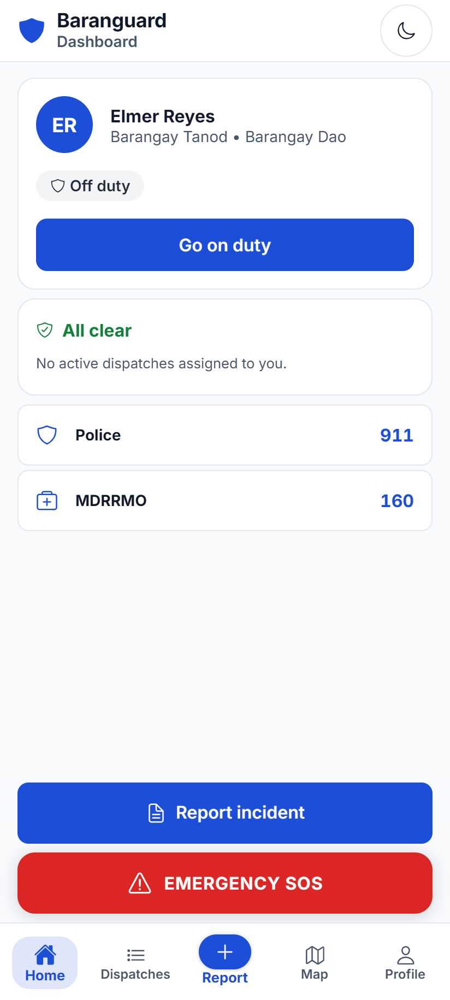
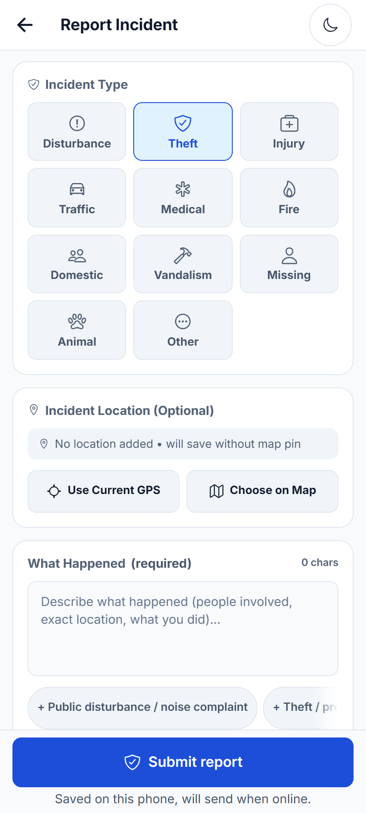

1 Introduction
1.1 Background of the Study
Disasters impose a growing burden on communities worldwide. The Global Assessment Report on Disaster Risk Reduction 2025 of the United Nations Office for Disaster Risk Reduction estimates that the direct costs of disasters have risen to about US$202 billion a year, and that the total annual cost exceeds US$2.3 trillion once cascading and ecosystem effects are counted (United Nations Office for Disaster Risk Reduction [UNDRR], 2025). The report argues that investment in resilience, rather than in recovery alone, is what reduces these losses. Emergency response is part of that resilience, and it depends on coordination: someone must receive a report, decide who responds, know where responders are and reach them quickly. Because this coordination usually runs over electricity and communication networks, the same typhoons and floods that create emergencies can also cut the channels that responders and their coordinators rely on.
The Philippines faces this problem more acutely than most countries. The WorldRiskReport 2025 ranks the Philippines first of 193 countries on its WorldRiskIndex, the highest disaster risk in the index, with a score of 46.56 (Bündnis Entwicklung Hilft & Institute for International Law of Peace and Armed Conflict [IFHV], 2025). Digital connectivity has improved but remains uneven: the 2024 National Information and Communications Technology Household Survey found that 48.8 percent of households had internet access at home, up from 17.7 percent in 2019, and that high subscription cost was the most common reason given by households without it (Philippine Statistics Authority [PSA], 2025b). At the grassroots, the Local Government Code of 1991 (Republic Act No. 7160) makes the barangay the primary planning and implementing unit of government policies, programs and activities in the community (Sec. 384). The same law allows the sangguniang barangay to organize barangay tanods, who serve on honoraria and number at most twenty per barangay (Local Government Code of 1991, 1991, Secs. 391 and 393). Tanods are therefore the first responders that most Filipino communities have, yet the tools available to coordinate them have not kept pace with the hazards they face.
The Municipality of Pilar in the province of Sorsogon illustrates these conditions. Pilar is a coastal municipality of the Bicol Region with a population of 76,908 in the 2024 Census of Population (PSA, 2025a). When Super Typhoon Rolly (Goni) crossed the Bicol Region on November 1, 2020, PAGASA placed the northern portion of Sorsogon, including Pilar, under Tropical Cyclone Wind Signal No. 4 (Philstar.com, 2020). The National Electrification Administration reported the following day that the electric cooperatives serving Sorsogon were among ten Bicol cooperatives without power, and the National Disaster Risk Reduction and Management Council noted that power and communication lines were down in some areas (Flores, 2020). Barangays Dao, Binanuahan, Marifosque and Banuyo, four of the barangays of Pilar, are the setting of this study.
This study narrows the problem to three linked tasks of barangay emergency response. The first is dispatch: when a report reaches the barangay hall by walk-in, telephone, text message or social media, the person in charge must find an available tanod and assign the incident, which without a shared system depends on who answers a call. The second is responder location: the Chief Tanod who coordinates the response has no common view of where tanods are or what they are doing, so the nearest available responder cannot be chosen with confidence. The third is alerting during outages: when internet service fails, a tanod in danger has no dependable way to raise an alarm, and records written in the field may be lost or entered twice. The study does not address the barangay blotter or Katarungang Pambarangay records, which barangays keep in their own binders and in the national system described below. Whether these three problems hold in each of the four barangays is examined through the needs assessment reported in Chapter 4.
Existing systems address parts of this problem. Tosper et al. (2025) developed WebYu, a web-based barangay information management system for Barangay Yuson in Nueva Ecija, and reported 68 percent faster processing of barangay certifications, 72 percent fewer documentation errors than manual methods and an ISO/IEC 25010 grand mean of 4.62. WebYu shows that barangay staff accept digital tools, but it is an administrative records system that assumes a working connection and does not dispatch or track responders. The closest system found is Sagip Manileño (Camoral et al., 2026), a mobile emergency response system with a web dashboard for an emergency response unit, GPS tracking, route navigation and an SMS alert for use without internet, which obtained an ISO/IEC 25010 mean of 4.62 from 20 evaluators. Sagip Manileño, however, centers on incident reporting to a city response unit. Its published description does not report offline capture and later synchronization of responders' field records, a command center that keeps working on a local network when the internet fails, or the rostering, duty status and reporting duties of barangay tanods. These elements remain missing for barangay tanods.
Any such system must also respect the information systems that barangays are already directed to use. The Department of the Interior and Local Government (DILG) provides the Barangay Information Management System (BIMS) under its Local Government Unit Support System, with modules for resident profiling, issuance management, Katarungang Pambarangay, property management, disaster preparedness and reports (DILG, 2025). Its listed modules do not include responder dispatch, live responder tracking or a responder SOS fallback. A new system should therefore complement BIMS and never replace it: it should hold no blotter, no Katarungang Pambarangay records and no case registry.
This study proposes Baranguard: Barangay Intelligence and Emergency Dispatch System, an offline-first platform hosted on one administrative workstation for Barangays Dao, Binanuahan, Marifosque and Banuyo. Baranguard joins three components: a GIS-enabled web command center through which the Chief Tanod, the Barangay Secretary and the Punong Barangay dispatch tanods, follow responders on a live map in near-real-time and review incident heatmaps and reports; an offline-first Android application through which tanods record incidents, duty status and dispatch steps without internet and synchronize them when a connection returns; and a best-effort SMS fallback that carries a tanod's SOS alert when mobile data fails. The objectives that follow state what the study builds and how it is evaluated.
1.2 Objectives of the Study
This study aims to design, develop and evaluate Baranguard, an offline-first barangay intelligence and emergency dispatch system for Barangays Dao, Binanuahan, Marifosque and Banuyo in Pilar, Sorsogon. Specifically, it aims:
- To determine the dispatch, communication and record-keeping needs of the tanods and barangay officials of the four barangays through key informant interviews and a questionnaire, as the basis for the system requirements.
- To design a GIS-enabled web command center that centralizes incident dispatch, tracks responder locations in near-real-time and generates descriptive incident heatmaps and reports.
- To develop an offline-first mobile application for barangay tanods that captures incidents, duty status and dispatch updates without internet access and synchronizes the queued records with the command center upon reconnection without creating duplicates.
- To implement a best-effort SMS fallback that transmits a tanod's emergency (SOS) alert with the current or last known location when mobile data is unavailable.
- To evaluate the system's product quality using ISO/IEC 25010:2023 and its acceptance through user acceptance testing and the System Usability Scale with barangay personnel and IT experts.
1.3 Significance of the Study
Primary Beneficiaries. The direct users are the barangay tanods and the Chief Tanod who directs them. If the barangays adopt the system, tanods could record incidents on their phones without internet, consult offline maps, receive dispatch assignments and, at night, dispatch offers that the first available tanod accepts, and raise an SOS from any screen that falls back to SMS when mobile data fails. The Chief Tanod could see on one map which tanods are on duty and where they last reported from, which would support quicker and better-informed assignment. The intended gain is shorter dispatch coordination time, from the moment an incident is logged at the command center to the moment a tanod acknowledges the assignment. Travel time to the scene depends largely on roads and distance, so the study does not claim it as an outcome.
Administrators and Management. The Punong Barangay, the Barangay Secretary and the sangguniang barangay would gain descriptive heatmaps and summary reports for planning patrols and rosters. Rosters, monthly accomplishment reports and Safer School Zones reports print on A4 paper for signature, so the system fits the way barangay records are already authorized. The Secretary, who keeps custody of the records of the sangguniang barangay and the barangay assembly (Local Government Code of 1991, 1991, Sec. 394(d)(1)), is the custodian of confidential incident narratives in the system; extending that custody to incident records is a design decision of this study. The approach is consistent with the E-Governance Act, which covers local government units in the government's transition to digital services (E-Governance Act, 2025, Sec. 4).
Future Researchers. The study offers a documented reference for IT students and researchers who build systems for low-connectivity local governments. It shows an Agile Scrum development of an offline-first mobile application with encrypted local storage and duplicate-safe synchronization, a command center hosted on one workstation, and an SMS fallback for responders, together with an evaluation plan that combines ISO/IEC 25010:2023, user acceptance testing and the System Usability Scale in a controlled pilot. Its stated limitations point to further work.
Community and Society. The residents of the four barangays would benefit indirectly if the system is adopted, through better-coordinated tanod response and records that survive network outages. The study relates to Sustainable Development Goal 3 on health and well-being, Goal 11 on safe and resilient communities and Goal 16 on effective and accountable institutions (United Nations, 2015). Any effect on injuries, losses or public trust is outside what this study measures.
1.4 Scope and Delimitations
This study covers the design, development and evaluation of Baranguard. The web command center includes the dispatch center, a live responder map refreshed in near-real-time by polling, descriptive incident heatmaps, statistical reports, incident detail, user and device management, rostering and the monthly accomplishment, referral and Safer School Zones reports. The Android application includes incident capture, duty status, location sharing, dispatch steps, night dispatch offers, availability, accomplishment entries, referrals to agencies such as the police, fire and emergency medical services, school check-ins, offline map packages and an SOS control on every screen. When the phone is offline, records are stored in encrypted local storage and synchronized later; when mobile data fails but cellular signal remains, the SOS alert is sent by SMS. The fallback carries SOS alerts only, not general incident reports.
The target users are the Chief Tanod, who uses the Admin account to dispatch tanods and manage users, devices and rosters; the Barangay Secretary, who is the records custodian and back-up dispatcher; the Punong Barangay, who has oversight of the dashboard, analytics and reports; and the tanods, who use the Android application only. Residents do not use the system directly: staff log walk-in, telephone, text and social media reports as incidents. The evaluators are personnel of the four barangays in these roles, namely the 12 officials and the 40 tanods (ten per barangay), and five IT experts (Section 3.2). Barangays Dao, Binanuahan, Marifosque and Banuyo, with 2020 census populations of 2,485, 1,889, 2,473 and 3,809 respectively (PSA, 2021), serve as evaluation sites in a controlled pilot. The system runs on a PHP 8.2 REST API with a MariaDB 10.4 database and a vanilla-JavaScript web dashboard on one administrative workstation, and on an Ionic React and Capacitor Android application with SQLCipher-encrypted SQLite storage. Product quality is evaluated against ISO/IEC 25010:2023 (ISO/IEC, 2023), and acceptance through user acceptance testing and the System Usability Scale (Brooke, 1996).
This study is delimited to emergency dispatch, responder coordination and the related tanod records. Baranguard is not a case registry and does not replace the DILG BIMS: it holds no electronic blotter and no Katarungang Pambarangay or Lupon records, because these belong to the barangays' binders and to BIMS. Resident profiling, certificate issuance, payroll and e-payment are excluded for the same reason or as unrelated to dispatch. The system uses no artificial intelligence and no predictive modelling; its heatmaps describe past incidents only, and video surveillance and facial recognition are omitted. Residents are not given accounts; they take part only by receiving SMS broadcasts if they have opted in and by sending text messages, which staff read and from which residents can withdraw by replying STOP. Security measures follow the Data Privacy Act of 2012 (Republic Act No. 10173) through role-based access, per-barangay data separation, encryption of the SOS envelope sent to the gateway phone, an audit log that records identifiers and statuses only, and the destruction of confidential incident narratives after one year; multi-factor and biometric authentication are beyond the scope. The work is bounded by the time frame of the capstone course, one administrative workstation and a small set of test phones, with no uninterruptible power supply or backup internet line. Hosting is LAN-first, so the command center remains reachable on the barangay network during an internet outage. Core data and functions stay on the workstation; four external services are used: routing (OpenRouteService), map tiles (OpenStreetMap), push notifications (Firebase Cloud Messaging) and remote access (Cloudflare). The remote access serves demonstration only. Baranguard is evaluated in a controlled pilot and is not deployed for live operations at any barangay.
1.4.1 Resilience Layer Limitations
A full communication blackout, such as one caused by a super typhoon striking the Bicol Region, including Sorsogon, can take down broadband and cellular service at the same time. Under such conditions the SMS fallback is a best-effort bridge, not a guaranteed channel. It is expected to help most in the more common partial outage, where cellular signal survives after broadband or mobile data fails, but whether text messages get through depends on whether power, backhaul or towers have failed, and delivery over a degraded network cannot be guaranteed (Odarchenko & Zaliskyi, 2026). Its reliability is therefore tested against the criterion set in Chapter 3 rather than assumed. A further cellular channel would add little, because it would share the same failure.
When both broadband and cellular service fail, the main safeguard is the offline-first design. Records a tanod captures in the field stay in the phone's encrypted local database and synchronize when any connection returns, while the Chief Tanod follows manual procedures in the meantime. The whole system also depends on one workstation: if it is off, only the phone's SMS alert to a backup contact still works. A UPS, a backup internet line and a non-cellular channel such as radio are left as recommendations. The design accepts delayed communication in exchange for records that are preserved and reconciled once communication is restored.
1.4.2 Limitations of the Study
The results of this study are bounded by the following limitations and threats to validity.
- Not deployed. The system is evaluated in a controlled pilot on a demonstration database, so the results do not show how it performs in live barangay operation.
- Synthetic data. The technical measurements use synthetic records. Real data will have a different size, shape and noise.
- External services. Road routing (OpenRouteService), map tiles (OpenStreetMap), push notifications (Firebase Cloud Messaging) and remote access (Cloudflare) need the internet. Routing degrades to a stored route or a labelled straight line, so a live road route is not guaranteed.
- Device coverage. The Android application is tested on a small number of phone models. Vendor battery policies on other models may stop background location or delay messages.
- Small groups. Each official group has four members and the IT-expert panel has five, so means are reported per group with n and standard deviation and are indicative only.
- Selection and evaluator bias. The IT experts are chosen purposively, respondents who know the proponents may rate favorably (Section 3.8), and the optional same-session task comparison is indicative only.
- Unconfirmed policies. Retention periods other than the one-year narrative rule are provisional until the barangay and the Commission on Audit confirm them, and the Safer School Zones annexes follow the barangay's own forms until DILG MC 2026-037 is checked.
2 Theoretical Framework
This chapter presents the literature and the frameworks on which Baranguard is designed and evaluated. Section 2.1 reviews related studies and systems under topics that follow the components and objectives of the study, from barangay information systems and tanod operations through emergency dispatch, offline-first data capture, SMS communication and data privacy to software quality and usability evaluation, and closes with a synthesis of the review. Section 2.2 states the gap that the study bridges. Section 2.3 presents the theoretical basis of the design and evaluation and the Input-Process-Output concept of the study, and Section 2.4 defines the key terms both conceptually and operationally.
2.1 Review of Related Literature (RRL)
The literature in this review is identified through Google Scholar, the Philippine E-Journals database, the ACM Digital Library, Crossref, Europe PMC and Semantic Scholar, through the publisher pages of the journals concerned, and through the official system and issuance pages of the Department of the Interior and Local Government (DILG). The search terms combine barangay information system, barangay tanod, first responder, emergency dispatch, responder tracking, global positioning system (GPS), geographic information system (GIS), kernel density hotspot, offline-first, local-first, mobile data collection, synchronization, SMS emergency alert, data privacy, records custody, ISO/IEC 25010, System Usability Scale and user acceptance testing. The publication window is 2016 to 2026, plus classic sources that define a concept, model or standard used in the study. Only English-language sources whose publisher record, abstract or full text was opened and checked during the review are included. Peer-reviewed journal articles and conference papers are preferred; grey literature is used only for context and is identified as such. A statement that a reviewed system lacks a capability refers to what its published description reports, and it is not a claim about every barangay system in use.
2.1.1 Barangay Information Systems and Tanod Operations
The barangay is the smallest unit of Philippine local government and the first point of contact between residents and the state, and its digitalization has so far concentrated on administrative records. The DILG provides barangays with the Local Government Unit Support System (LGUSS), whose Barangay Information Management System (BIMS) covers resident profiling, issuance management, the Katarungang Pambarangay dispute process, property management, disaster preparedness, the gender and development plan and budget, and report management (Department of the Interior and Local Government [DILG], 2025). Locally developed systems follow the same direction; Gasmido et al. (2025), for example, present Digital Barangay, a web-based management and information system for Barangay Ayos Lomboy. Beside these records sits the operational side of barangay safety, which rests on the barangay tanods. Tanods serve on honoraria under the Local Government Code (Local Government Code of 1991, 1991, Sec. 393), and in the barangays covered by this study they are reported to account for their work through a monthly accomplishment report rather than a daily time record, a practice the needs assessment in Chapter 4 examines; they are often the first persons to reach an incident. This sub-section reviews studies on barangay information systems and on the work and constraints of tanods and related barangay responders, to establish where Baranguard fits beside the records systems that barangays already use.
Tosper et al. (2025) develop WebYu, a web-based information management system for Barangay Yuson in Guimba, Nueva Ecija, using the Scrum framework, and evaluate it with 75 participants composed of IT professionals, students and barangay staff and residents. In field testing, the processing of barangay certifications is 68% faster and documentation errors are 72% fewer than with the manual method; the system receives an ISO 25010 grand mean of 4.62, with maintainability and security rated highest, and a Technology Acceptance Model grand mean of 4.74. This is relevant to Baranguard because it shows a recent Philippine barangay system evaluated with both a product-quality model and a user-acceptance measure, the same two-part pattern that Baranguard follows with ISO/IEC 25010:2023, user acceptance testing and the System Usability Scale. Its scope, however, is resident records and certificates, which is the domain that Baranguard deliberately leaves to BIMS.
Rivas (2026) develops a barangay information management system with automated mobile messaging. Besides resident profiling, record management and report generation, the system lets officials send announcements, reminders and urgent alerts to residents' phones and lets residents send messages back. Incoming messages are accepted only from registered contact numbers; non-emergency messages are recorded, while emergency messages are classified by a rule-based method into categories such as crime, fire or disaster and forwarded to the relevant responders, among them the barangay chairman, the barangay police, the Philippine National Police (PNP), the Bureau of Fire Protection (BFP) and the municipal disaster risk reduction and management council, after which the sender receives a confirmation. Evaluated by barangay personnel and community members, the system is reported to improve administrative efficiency and community engagement. This is relevant to Baranguard because it is the closest local precedent for routing emergencies through barangay messaging. Baranguard differs in direction: its messaging serves the tanod in the field through dispatch, push alerts and an SOS fallback, while its resident-facing SMS is limited to broadcasts to opted-in subscribers and stored inbound texts with a STOP opt-out, and its referral log records handoffs to agencies such as the PNP and BFP without classifying messages automatically.
Lacanilao and Carpio (2025) assess the capabilities and challenges of barangay tanods as first responders in selected barangays of Cabanatuan City through a quantitative survey. The community expresses strong confidence in the ability of tanods to apprehend suspects and to manage traffic during emergencies and public events, but the most serious problems are inadequate resources and equipment and limited legal knowledge, and the authors recommend specialized training and the provision of essential equipment. A companion perspective comes from Molina et al. (2025), whose survey of 344 residents of Barangay Cogon, Tagbilaran City, rates the tanods as effective overall and rates their collaboration with other law enforcement agencies highly. This is relevant to Baranguard because both studies confirm that tanods are trusted first responders whose main constraint is equipment rather than willingness. Baranguard treats the tanod's own phone as part of that equipment, carrying duty status, location, dispatch steps and an SOS control, although it cannot address legal training.
Villafuerte (2025) studies the public safety challenges faced by 45 barangay public safety officers and 45 police officers of the National Capital Region Police Office using a descriptive-correlational design. Current public safety measures are rated highly effective, yet challenges remain in community engagement, organizational support and policing strategies, and the challenges are strongly related to the effectiveness of the measures. This is relevant to Baranguard because it locates the weak points of barangay safety work in coordination and organizational support between barangay officers and the police. Baranguard addresses a narrow part of this coordination, namely a shared record of dispatches and of referrals to the PNP and other agencies, and it does not claim to improve community engagement or policing strategy.
Longcop and Fuentes (2024) survey 102 members of Barangay Health Emergency Response Teams, including barangay officials, health workers and tanods, in eight barangays of Gamay, Northern Samar, during the COVID-19 period. The problems they report include overloaded tasks, a lack of personal protective equipment and support staff, a lack of communication facilities, confusion over duty schedules and a lack of transport facilities such as ambulances; communication equipment is among the needs named by almost all respondents, together with protective equipment, testing and mental health training. This is relevant to Baranguard because two of the reported problems, confusion over duty schedules and the lack of communication facilities, fall within what an information system can support, through published duty rosters and phone-based alerts, while the equipment, transport and health needs in the same study lie outside the reach of software.
The reviewed studies show that digital systems for barangays concentrate on resident records, certificates and the case process, as in WebYu, Digital Barangay and BIMS, and that the one messaging extension reviewed is oriented toward residents and the barangay office. The studies on tanods and barangay responders show a different need: tanods are recognized and trusted first responders, but they work with limited equipment, uncertain communication and loosely coordinated schedules. None of the reviewed systems supports the tanod in the field with duty status, dispatch or alerting. Baranguard is therefore positioned as an operational layer for tanod duty and emergency dispatch that complements BIMS and never replaces it; resident records and the Katarungang Pambarangay process remain in BIMS and in the barangay's own binders.
2.1.2 Emergency Dispatch, Responder Tracking and GIS Incident Mapping
Emergency dispatch is the work of receiving a report, locating the incident, selecting and alerting a responder, and following the response until it is closed. In professional emergency services this work is supported by computer-aided dispatch, by automatic location of responders through GPS, and by GIS maps that show incidents and responders together; over time, the recorded incidents are also mapped as hotspots to inform patrol planning. Barangays rarely have such tools, and the responders they dispatch are tanods rather than professional crews. This sub-section reviews studies on GPS-based responder alerting, the effect of mobile technology on response time, the use of location data for response planning, hotspot mapping, and GIS work for local responders in the Bicol Region. It supports objective b of the study, the GIS-enabled web command center with near-real-time responder tracking and incident heatmaps.
Sarkisian et al. (2020) evaluate a smartphone GPS-tracking system used since 2012 on a rural island to alert volunteer first responders for every emergency call that requests an ambulance. When the system is activated, three nearby volunteers are recruited and given distinct roles, one of which is to collect the nearest automated external defibrillator. In a retrospective analysis of calls from April 2012 to December 2017, at least one volunteer arrives before the emergency medical service in 2,266 of 2,662 calls (85%), with a median volunteer response time of 4 minutes 46 seconds against 10 minutes 13 seconds for the ambulance. This is relevant to Baranguard because it shows that locally based responders, located by their own phones and alerted to nearby incidents, can reach a scene early in a rural setting. Baranguard applies a similar idea to tanods: the Chief Tanod sees the on-duty tanods on the live map before assigning one, and at night a dispatch offer goes to the on-duty tanods and the first to accept is assigned. Unlike the volunteers in that study, tanods do not provide medical care; they refer such matters to emergency medical services.
Althumairi et al. (2021) compare ambulance requests made through the mobile application Asafny with requests made through the traditional 997 telephone line in the Eastern Province of Saudi Arabia, using 2,120 requests from 2017 to 2019 in a retrospective cross-sectional design. They find no significant difference in time between the two request methods, while times fall across the study period, which the authors attribute to the wider improvements made by the ambulance authority. This is relevant to Baranguard because it is a caution that a mobile application alone does not shorten response time. Baranguard therefore does not claim faster response; it records response time descriptively, from the creation of an incident to the first arrival of a tanod, and treats rosters, dispatch rules and the readiness of responders as part of the outcome.
Boutilier and Chan (2020) study ambulance response in Dhaka, Bangladesh, a large city that, at the time of their field work, had no centralized fleet of emergency ambulances. Using field data that include travel records from GPS devices fitted to vehicles, they combine robust optimization of ambulance outpost locations and routing with machine-learning estimates of demand and travel time. They find that relocating a small number of outposts substantially improves response times and that smaller, motorcycle-based responders can serve more demand than ambulance vans. This is relevant to Baranguard because it shows, in a developing-country setting without central dispatch, that recorded responder movement is useful evidence for planning where responders should wait. Baranguard records the GPS tracks of on-duty tanods and presents incident patterns to officials, but it performs no optimization; decisions on patrol placement remain with the Chief Tanod and the Punong Barangay.
Hu et al. (2018) propose a spatio-temporal kernel density estimation framework for predictive crime hotspot mapping and test it on residential burglaries in Baton Rouge, Louisiana, in 2011. The framework adds a temporal component to the usual kernel density estimate, selects bandwidths through likelihood cross-validation, filters false positives with a significance test, and evaluates predicted hotspots at several areal scales with a predictive accuracy index curve. This is relevant to Baranguard because kernel density estimation is the common technique behind incident heatmaps, and the study shows how much methodological care a predictive use requires. Baranguard's heatmaps are descriptive: they aggregate past incidents for a selected period so that officials can see where incidents have occurred, and the system makes no forecast of where incidents will occur.
Abante and Balilo (2018), of Bicol University, conceptualize a resource location-intelligence model on a cloud-based GIS for the danger zones of Mayon Volcano in Albay, covering 25 barangays in two cities and six municipalities. The model links the coordinates of trained disaster risk reduction and management personnel and of households with incident reports, so that responders can be located and crisis maps produced during an emergency; the paper presents the model conceptually and reports no quantitative evaluation. This is relevant to Baranguard because it is a regional precedent for treating the location of barangay-level responders as a GIS problem. Baranguard differs by tracking on-duty tanods during their shifts rather than locating a registry of personnel, and by keeping its database on a workstation reachable over the barangay network instead of on a cloud service.
The reviewed studies show that GPS-alerted local responders can reach incidents early (Sarkisian et al., 2020), that a mobile channel by itself does not shorten response time (Althumairi et al., 2021), that recorded responder movement supports planning (Boutilier & Chan, 2020), and that predictive hotspot mapping requires a validated method (Hu et al., 2018). The regional GIS work reviewed is conceptual (Abante & Balilo, 2018), and a recent disaster management system that maps alerts and citizen reports relies on a cloud-hosted backend and does not describe offline operation (Sasane et al., 2026). These studies support the elements of a dispatch command center separately; none of them evaluates such a center for barangay tanods. Baranguard combines a dispatch queue, a live map of on-duty tanods refreshed in near-real-time by polling, and descriptive heatmaps, and its effect on response time is measured descriptively in the controlled pilot rather than assumed.
2.1.3 Offline-First Mobile Data Capture and Synchronization
Mobile applications for field work usually assume a working connection, yet the places where responders work, and the moments when they are most needed, are often the ones where the connection fails. An offline-first design reverses that assumption: the application stores every record on the device first, lets the user keep working without a network, and sends the records to the server when a connection returns. The design raises its own problems, namely keeping captured records durable if the application closes, preventing duplicates when an upload is retried, resolving disagreements between the device and the server, and protecting the data held on the phone. A workshop report from the Science for Humanitarian Emergencies and Resilience programme, a grey source, gathers about 45 participants from 20 organizations to reflect on the use of mobile phone technologies across the stages of disaster risk management (Budimir et al., 2021). This sub-section reviews peer-reviewed work on local-first software, frameworks for disconnected data management, fully offline data capture and the usability of offline capture applications. It supports objective c of the study, the offline-first mobile application with synchronization.
Kleppmann et al. (2019) propose local-first software as a set of principles for applications that keep the primary copy of the user's data on the user's own device. They argue that cloud applications, by centralizing storage on servers, take ownership away from users, so that the software and its data can be lost if the service shuts down; the ideals of local-first software include working offline, working across several devices, security and privacy, long-term preservation and user control of data. They survey existing storage and sharing approaches, including mobile applications backed by Firebase, and present conflict-free replicated data types as a promising foundation, drawing on prototypes built at the Ink & Switch research lab. This is relevant to Baranguard because it gives the conceptual basis for keeping the tanod's records in an encrypted SQLite database on the phone as the primary copy until the server confirms them. Baranguard adopts the offline and privacy ideals but not the peer-to-peer collaboration model: the workstation remains the authoritative record, and each field record has a single author, so the system does not need conflict-free replicated data types.
Brunette et al. (2017) describe their experience building, deploying and refining Open Data Kit (ODK) 2.0, a modular framework that lets organizations with limited technical capacity build data management applications for disconnected environments. They note that many people own mobile phones but far fewer are connected to the internet, and that common mobile application frameworks are poorly suited to long periods of disconnected data collection and management. The paper presents case studies with several organizations and the lessons learned from a service-based design. This is relevant to Baranguard because it shows that disconnected operation has to be designed into the data layer of the application rather than added to a form screen. The Baranguard mobile application follows this principle: incidents, duty status, dispatch steps, accomplishment entries, availability, referrals and school check-ins are all stored locally and sent through one synchronization path.
Kenny et al. (2020) design and implement an electronic data capture platform for rural Liberia, where many community health workers live and work without cellular coverage or reliable power. They distinguish tools built for occasionally disconnected settings, which upload data when the user regains a network, from tools that work in fully disconnected settings, and they build an open-source fork of ODK Collect that transfers data and application updates between devices over Bluetooth. Implemented with 317 community health workers and 28 supervisors, the fully offline programme proves feasible and is still running more than four years after its pilot; the authors note its relevance to disaster relief, when parts of the communications infrastructure stop working. This is relevant to Baranguard because it demonstrates sustained offline data capture by community workers at scale. Baranguard is an occasionally disconnected design: it queues records on the phone and synchronizes them over any available path, including mobile data, broadband or the barangay's local Wi-Fi, and it relies on its SMS fallback only for the SOS alert; it does not transfer data from phone to phone.
Reichold et al. (2021) evaluate the usability of the REDCap mobile application as an offline electronic data capture option for a lay user group in the Digital Dementia Registry Bavaria, whose interviews take place in rural areas with unreliable internet and whose data are synchronized after collection. They combine an on-site think-aloud usability test with an online questionnaire that includes the System Usability Scale and items based on the Technology Acceptance Model. The application obtains a System Usability Scale score of 74, interpreted as good usability; the think-aloud sessions reveal specific usability issues and solutions, and the lay users prove open to mobile devices as interview tools. This is relevant to Baranguard because it shows that an offline capture application for non-specialist users can be evaluated before going live with observed tasks and the System Usability Scale, which is the approach this study takes with tanods and barangay personnel in a controlled pilot.
The reviewed studies support offline-first capture with later synchronization as a sound principle (Kleppmann et al., 2019), a workable framework design (Brunette et al., 2017), a feasible practice among community workers in low-connectivity settings (Kenny et al., 2020) and an application type that lay users can rate as usable (Reichold et al., 2021). The reviewed studies, however, concern research and health data collection rather than emergency dispatch, and they give little attention to duplicate records created when an interrupted upload is retried. Baranguard addresses that point by design: every write from the phone carries a client event identifier generated on the device, the server returns the original record when the same identifier arrives again, and a record is shown as synchronized only after the server confirms it. Whether this design holds for tanod dispatch steps and duty records under real connectivity is what the controlled pilot and device tests of this study examine.
2.1.4 SMS and Resilient Emergency Communication
An emergency tool is only as useful as the channel that carries its alerts. Internet-based push notifications are fast and inexpensive, but they depend on mobile data or broadband, which are often the first services to degrade when a typhoon damages power and telecommunications infrastructure. The Short Message Service (SMS), by contrast, runs on the basic cellular network, works on almost every handset and needs no data subscription, which is why it remains a common channel for public warnings. It is not, however, a guaranteed channel: messages can be delayed or lost when the network is congested or damaged, and a sender usually cannot confirm that a message was read. This sub-section reviews studies on SMS and other non-internet channels in emergencies, and on the closest comparable Philippine system, in order to position objective d of this study, an SMS best-effort SOS fallback for barangay tanods.
Omar and Van Belle (2023) studied alternative technologies for communication when social media platforms fail during disasters. Using a qualitative, inductive approach that combined the literature with data from officers of disaster management organizations, they identified SMS, e-mail and ordinary phone calls as workable alternatives when social media channels are disrupted, and they recommended that disaster management organizations diversify their channels rather than depend on a single platform. This is relevant to Baranguard because the system does not rely on one channel for its most critical message: an SOS from a tanod is sent over mobile data when a connection is available and falls back to SMS when it is not, while incident records captured offline wait in the phone's encrypted local database until a connection returns.
Odarchenko and Zaliskyi (2026) examined frameworks for resilient emergency messaging that move from SMS toward Rich Communication Services (RCS). They observe that SMS remains the foundation of public alerting because it is universal and satisfies regulatory requirements, but that it struggles under heavy traffic, while RCS adds interactive and multimedia features without a mechanism for guaranteed delivery when the network is degraded. Using Monte Carlo simulation calibrated with operator and platform data, they propose a multi-layer framework that selects a channel from current network and device conditions, and they report that combining channels through an intelligent fallback improves delivery performance in emergencies. This is relevant to Baranguard because its SOS logic follows the same principle of ordered fallback, data first and SMS second, while accepting the limitation the authors describe: delivery over a degraded network cannot be guaranteed. For this reason Baranguard labels a sent text as "Sent, not confirmed" and never as "Delivered", and it repeats and escalates an SOS that no one has acknowledged rather than assuming that one message was enough.
Hugelius et al. (2016) described how disaster radio carried vital and health-related messages after Typhoon Haiyan (Yolanda) struck the Philippines in 2013. Through a mixed-methods analysis of 2,587 logged radio files, they found that broadcasts gave general information, showed that authorities were managing the situation, encouraged residents and offered practical advice for self-reliance, that message content shifted over time, and that the broadcast record itself had gaps. They concluded that radio can deliver vital messages and psychological support to disaster areas but that its impact still needs evaluation. This is relevant to Baranguard because it concerns the same hazard that threatens Pilar, a Philippine typhoon, and because it shows that resilient communication in a Philippine typhoon is a matter of combining channels suited to the moment. Baranguard does not replace broadcast radio or the barangay's own handheld radios; it adds a channel for one narrow purpose, getting a tanod's distress signal and position to the command center, and it is designed with the expectation that any single channel can fail.
Yoo et al. (2021) investigated how people cope with SMS-based disaster alerts, drawing on protection motivation theory and the elaboration likelihood model. Their survey found that the quality of the alert's argument and the credibility of its source both shape whether recipients adopt protective coping behavior, with perceived threat and coping efficacy moderating these effects. This is relevant to Baranguard because SMS is useful only if the person who receives it trusts it and knows what to do. The plain-text alert that Baranguard sends to a backup contact is therefore kept short and literal: it opens with a plain emergency label, names the tanod and the barangay, and gives the position or states that no GPS fix was available. The SMS broadcasts the system sends to opted-in subscribers come from a single, recognizable barangay number with a STOP opt-out.
Camoral et al. (2026) developed Sagip Manileño, a mobile emergency response system for emergency response units in Manila with SMS-based offline alert capability. The system combines Android applications for incident reporting and alerts, a browser-based dashboard for responders backed by a central database, GPS tracking, route navigation, notifications and SMS alerts that continue to work when internet connectivity is unavailable. Built with an Agile life cycle, it was evaluated by 20 respondents against ISO/IEC 25010 and obtained an overall mean of 4.62, interpreted as excellent, and functional testing confirmed alert transmission, offline SMS, GPS tracking and route navigation. This is the closest comparable Philippine system found in this review, and it shows that the combination of a mobile app, a web dashboard, GPS and an SMS offline alert is feasible and well received in a local setting. It is relevant to Baranguard because it confirms the direction of objective d, and it also clarifies what Baranguard adds. Sagip Manileño serves city emergency response units, whereas Baranguard is built around the barangay tanod, an honorarium-based volunteer whose duty is organized through published rosters and a monthly accomplishment report. Its published description centers on alerts and responder coordination, whereas Baranguard also captures field records offline (incidents, evidence, duty status, dispatch steps, referrals and school check-ins) and synchronizes them idempotently, so that a retried upload never creates a duplicate record. Baranguard's command center runs on a workstation inside the barangay and stays reachable over the local network during an internet outage; its SOS text to the gateway phone travels in an encrypted, verified envelope; and it keeps the confidential incident narrative under the Secretary's custody while leaving the official case records to the DILG's Barangay Information Management System (BIMS). The overall mean that Sagip Manileño reports comes from a small group and is not broken down by characteristic in its published abstract, which is a caution that also applies to the evaluation planned in this study.
The reviewed studies agree that no single channel can be trusted in a disaster and that SMS remains valuable because it reaches basic handsets over the cellular network without a data connection (Odarchenko & Zaliskyi, 2026; Omar & Van Belle, 2023). They also show its limits: SMS can be slowed by congestion, its delivery cannot be guaranteed on a degraded network, and an alert is acted upon only when its message is clear and its source is credible (Yoo et al., 2021). The Philippine studies show that multiple channels are needed after a typhoon (Hugelius et al., 2016) and that an app-dashboard-GPS-SMS combination is feasible for emergency response units (Camoral et al., 2026). These studies support the elements of Baranguard's objective d separately; none of them reports an SMS SOS fallback that is combined with idempotent offline capture of field records and a LAN-hosted command center for barangay tanods. Baranguard therefore treats its SMS fallback strictly as a best-effort channel, reports its status honestly, and evaluates it as such.
2.1.5 Data Privacy and Records Custody in Local Government
Digitizing barangay incident work moves personal information from paper into a database that can be copied, searched and transmitted. An incident narrative may contain the names, addresses and circumstances of complainants, respondents, victims and witnesses, which the Data Privacy Act of 2012 treats as personal information, and in some cases as sensitive personal information (Data Privacy Act of 2012, 2012, Sec. 3). The Act allows processing only in line with the principles of transparency, legitimate purpose and proportionality, requires that personal information be kept only as long as necessary, obliges controllers to apply organizational, physical and technical security measures, and requires them to designate individuals accountable for compliance (Data Privacy Act of 2012, 2012, Secs. 11, 20, 21). The question for a barangay system is therefore not only how data are stored but who may read, change and keep them, and for how long. This sub-section reviews studies on data privacy compliance in Philippine government, on privacy in incident management systems, on local digital governance and on role-based access control, together with the statutory basis for records custody in the barangay.
Pitogo (2019) studied the commitment of Philippine local government units (LGUs) to data privacy as they adopt information and communication technology. Using a qualitative multiple-case design with pattern matching, the study found that the LGUs were not compliant before the Data Privacy Act took effect and that compliance improved substantially after the law and the National Privacy Commission's actions. Deterrence, legitimacy and moral obligation drove compliance, while lack of awareness, a wait-and-see attitude, and limited resources and time held it back. This is relevant to Baranguard because a barangay is the smallest LGU and is likely to face the same constraints, so privacy protection should be built into the software by default rather than left to procedures that a busy office may not follow. Baranguard applies this by enforcing role, barangay and ownership checks on the server for every request, by never sending the confidential narrative to push notifications, SMS or logs, and by destroying it automatically after one year.
Ching and Celis (2018) assessed the compliance of two national government agencies, the Commission on Higher Education and the Commission on Elections, with the Data Privacy Act about three months after the National Privacy Commission's initial deadline, taking into account the Commission on Elections' 2016 data breach. They found both agencies only partially compliant, each with its own challenges, and noted that although their information systems strategic plans already addressed data protection and security, the measures still had to be implemented. This is relevant to Baranguard because it shows that even well-resourced agencies struggle to move from policy to working controls, and that a breach of a government database is a realistic risk rather than a hypothetical one. Baranguard's controls are therefore implemented in code and tested, not merely described, and its audit log records only identifiers and statuses so that the log itself does not become a second copy of the personal data it is meant to protect.
Qureshi et al. (2021) proposed a privacy-preserving critical incident management system in which witnesses send location-based reports to the competent authority. Their design links each report to a group of users rather than to one person, so that an honest witness cannot be singled out, while a malicious reporter can still be identified, and it uses a reward-and-penalty scheme to discourage false reports; they analyzed its security and privacy properties and tested it on real devices. This is relevant to Baranguard because it shows that privacy and accountability can be designed together in an incident system: the sensitive content is protected, yet responsibility for each action can still be traced. Baranguard pursues the same balance through a different mechanism suited to a barangay office: access to the narrative is restricted by role, and reads of the narrative are recorded in the audit log by user and incident identifier only.
Perante-Calina (2025) examined how Philippine local governments use digital governance to advance transparency, accountability, participation and equity, using a mixed-method design built around a perception survey of local government units. Among the challenges identified are the digital divide in remote areas without reliable electricity and concerns about data privacy and protection in the face of cybersecurity threats. This is relevant to Baranguard because the four barangays of Pilar are rural communities where power and connectivity can be interrupted, which supports the decision to keep core data and functions on a workstation inside the barangay rather than in a public cloud, and because it confirms that privacy is a recognized barrier to local digital adoption that a barangay system must address openly.
Sandhu et al. (1996) formalized role-based access control (RBAC), in which permissions are assigned to roles and users acquire permissions by being assigned to roles, rather than receiving permissions individually. Their family of models adds role hierarchies and constraints such as separation of duties, and it has become a standard reference for organizing access in multi-user systems. This is relevant to Baranguard because its access rules follow this pattern: the Chief Tanod (Admin account), Secretary, Punong Barangay and tanods each hold a role with defined reach, and approval authorities are a separate attribute managed by the Admin rather than an extra role. The assignment of narrative custody follows the law where the law speaks. The Local Government Code of 1991 makes the barangay secretary the keeper of the records of the sangguniang barangay and the barangay assembly and of the record of inhabitants (Local Government Code of 1991, 1991, Sec. 394(d)). The Code does not mention incident narratives, so giving their custody to the Secretary is a design decision of this study, extended to the Chief Tanod on the web dashboard only, because the dispatcher must brief responding tanods.
The reviewed studies show that Philippine government offices, including LGUs, have moved toward compliance with the Data Privacy Act but are held back by limited awareness, resources and time (Ching & Celis, 2018; Pitogo, 2019), and that privacy remains a recognized barrier to local digital governance (Perante-Calina, 2025). They also show that privacy and accountability can be built into incident systems together (Qureshi et al., 2021) and that role-based access offers a well-established way to do so (Sandhu et al., 1996). None of these sources addresses how an emergency dispatch tool should handle incident narratives alongside the official barangay case records. Baranguard takes a deliberate position: the DILG's BIMS remains the system for records and the case process, and Baranguard holds only the operational record, with the narrative under the Secretary's custody, readable by the Chief Tanod on the web only, excluded from push, SMS and logs, and destroyed after one year. Because Baranguard is evaluated in a controlled pilot and is not deployed, organizational measures that the Act expects of an operating controller, such as designating an accountable data protection officer, are stated as recommendations for any future adoption rather than as features of this study.
2.1.6 Software Quality and Usability Evaluation
Objective e of this study is to evaluate Baranguard's product quality and its acceptance by barangay personnel and IT experts. Two families of methods are relevant. The first rates a product against a quality model; in the Philippines this is most often done with ISO/IEC 25010, whose 2023 edition defines a product quality model of nine characteristics (functional suitability, performance efficiency, compatibility, interaction capability, reliability, security, maintainability, flexibility and safety), each divided into sub-characteristics, as a reference for specifying, measuring and evaluating product quality and for setting acceptance criteria (ISO/IEC, 2023). The standard is a model, not a questionnaire, so any rating instrument built from it is the researchers' own adaptation and needs its own evidence of validity and reliability. The second family observes people using the product: user acceptance testing (UAT), in which intended users carry out realistic tasks and the evaluator records completion, time and errors against stated criteria, and standardized usability questionnaires such as the System Usability Scale (SUS). This sub-section reviews studies on both, and briefly on the Technology Acceptance Model as an alternative lens.
Brooke (1996) introduced the SUS as a "quick and dirty" scale for measuring perceived usability. It has ten items, alternating between positively and negatively worded statements and answered on a five-point agreement scale, which are combined into a single score from 0 to 100; individual item scores are not meant to be interpreted on their own. The scale was designed to be short enough to give at the end of a test session without burdening participants. This is relevant to Baranguard because UAT participants include volunteer tanods and busy barangay officials, and a ten-item instrument that yields one comparable score can follow each session without fatiguing them. Baranguard's evaluation administers the SUS once, after the UAT tasks, and scores it as Brooke specified.
Bangor et al. (2008) evaluated the SUS empirically using nearly ten years of data, more than 2,300 completed questionnaires from over 200 studies of many products at different stages of development. As summarized by Lewis (2018), they found a mean score of about 70, a high internal consistency (coefficient alpha of 0.91), items that loaded on a single factor, and significant differences between interface types, which is evidence of sensitivity; they also proposed an adjective rating to help interpret scores. This is relevant to Baranguard because it gives the SUS a large external reference point: a Baranguard score can be read against scores from hundreds of other products instead of standing alone, and the adjective rating gives barangay officials a plain-language reading of the result.
Lewis (2018) reviewed the history and research on the SUS and concluded that it has become the most widely used standardized questionnaire for perceived usability and that research into its reliability, validity and sensitivity has been consistently favorable. The review describes the Sauro-Lewis curved grading scale, built from a large set of scores whose average of 68 sits at the center of a grade of C, and reports earlier evidence that the SUS reached correct conclusions with smaller samples than other questionnaires. This is relevant to Baranguard because the number of respondents per group in this study is small, and the SUS is among the few instruments with evidence that it behaves well at such sizes; the curved grading scale also provides the benchmark against which the study's SUS results are interpreted.
Tosper et al. (2025) developed WebYu, a web-based barangay information management system for Barangay Yuson, using Scrum, and evaluated it with 75 participants comprising IT professionals, students, and barangay staff and residents. They used ISO/IEC 25010 for technical quality, obtaining a grand mean of 4.62 (excellent), and the Technology Acceptance Model for user acceptance; in field testing, certificate processing was 68% faster and documentation errors 72% fewer than with manual methods. Grepon et al. (2022) similarly evaluated a school management information system for a community college in Northern Mindanao against ISO/IEC 25010, reporting average ratings above 4.04 for functionality, usability and reliability. These studies are relevant to Baranguard because they show how ISO/IEC 25010 rating instruments are commonly used in Philippine information systems projects, and the WebYu field test in particular shows the value of timing the same task done manually and with the system. They also show a common weakness that Baranguard's evaluation avoids: results from different respondent groups are often merged into one grand mean. Baranguard's evaluation plan reports barangay personnel and IT experts separately, with the number of raters and the standard deviation beside each mean.
Davis (1989) developed the Technology Acceptance Model (TAM), validating two six-item scales for perceived usefulness and perceived ease of use across two studies of 152 users. Usefulness correlated more strongly with system use than ease of use did, and ease of use appeared to act mainly through usefulness. TAM is a well-established lens for explaining whether people intend to adopt a technology, and WebYu used it for that purpose. It is relevant to Baranguard as an alternative that was considered and not adopted as the main instrument: because Baranguard is evaluated in a controlled pilot and is not deployed, the study can observe task performance and perceived usability directly but cannot observe actual adoption over time, which TAM aims to predict. The perceived usefulness of the system is instead captured through the ISO/IEC 25010 functional suitability items and the interview guide.
The reviewed studies show that ISO/IEC 25010 provides a widely used structure for rating product quality in Philippine systems (Grepon et al., 2022; Tosper et al., 2025; Camoral et al., 2026), but a rating against a quality model measures opinion about characteristics and does not by itself show whether users can complete their work. The SUS adds a short, reliable and benchmarked measure of perceived usability (Bangor et al., 2008; Brooke, 1996; Lewis, 2018), and task-based UAT adds behavioral evidence: completion rates, time on task and errors observed while barangay personnel perform realistic scenarios. TAM explains adoption intention (Davis, 1989) but suits a deployed system better than a controlled pilot. Baranguard is therefore evaluated with both kinds of evidence: an ISO/IEC 25010-based questionnaire, adapted by the researchers and supported by content validity and internal consistency checks, rated by barangay personnel and IT experts and reported per group; and UAT sessions with task measures followed by the SUS. Each source supports one part of this design; the combination is the study's own and is justified by the different questions each method answers.
2.1.7 Synthesis
The reviewed literature converges on four points that shape Baranguard. First, barangay information systems such as WebYu (Tosper et al., 2025), Digital Barangay (Gasmido et al., 2025), a messaging-enabled barangay system (Rivas, 2026) and the DILG's BIMS (Department of the Interior and Local Government [DILG], 2025) digitize records, certificates and announcements for the barangay hall rather than for the responder in the field, while studies of tanods and other barangay responders describe their frontline role (Molina et al., 2025; Lacanilao & Carpio, 2025) and report a lack of transport and communication facilities (Longcop & Fuentes, 2024) and challenges in communication infrastructure (Villafuerte, 2025). Second, studies of GPS-based activation of volunteer responders (Sarkisian et al., 2020), app-based emergency requests (Althumairi et al., 2021), hotspot mapping (Hu et al., 2018) and a disaster management system with mobile reporting (Sasane et al., 2026) inform Objective b. Third, offline-first and mobile data-collection research (Kleppmann et al., 2019; Brunette et al., 2017; Kenny et al., 2020) informs Objective c, and studies of crisis communication that present SMS and other low-bandwidth channels as useful but not guaranteed (Omar & Van Belle, 2023; Odarchenko & Zaliskyi, 2026; Hugelius et al., 2016; Yoo et al., 2021; Camoral et al., 2026) inform the best-effort framing of Objective d. Fourth, privacy studies (Qureshi et al., 2021; Pitogo, 2019; Ching & Celis, 2018), read with the Data Privacy Act of 2012 and the Local Government Code of 1991, call for role-restricted access and accountable custody of records, and the quality and usability literature (ISO/IEC, 2023; Brooke, 1996; Bangor et al., 2008; Lewis, 2018; Davis, 1989) supplies the evaluation lens for Objective 4.
Taken together, the reviewed studies support each element of Baranguard separately: digital barangay records, GPS-assisted dispatch, descriptive incident mapping, offline capture with later synchronization, SMS as a fallback channel and role-based privacy controls. Their combination in one tool for barangay tanods, hosted inside the barangay and kept beside rather than in place of BIMS, is not reported in the sources reviewed. Even Sagip Manileño (Camoral et al., 2026), the closest system found, serves a city emergency response unit and its citizen reporters rather than tanod operations. Section 2.2 states this gap.
2.2 Gap Bridged by the Study
Despite the numerous studies on barangay information systems, mobile emergency reporting and SMS-based alerting, a significant gap remains in field tools built around the barangay tanod. The barangay systems reviewed, WebYu (Tosper et al., 2025), Digital Barangay (Gasmido et al., 2025) and BIMS (DILG, 2025), digitize resident records, certificates and, in Digital Barangay and BIMS, blotter or Katarungang Pambarangay records, but none of their published descriptions covers responder dispatch, responder location or field capture without a connection. The closest emergency system found, Sagip Manileño (Camoral et al., 2026), combines Android applications, a web dashboard, GPS, responder assignment and an SMS offline alert, but it serves a city emergency response unit and citizen reporters. Its published description does not address idempotent synchronization of responders' field records, a command center hosted inside the barangay, the custody of confidential incident narratives beside an official records system, or the way tanods are scheduled and account for their service. Tanods receive honoraria under the Local Government Code (Local Government Code of 1991, 1991, Sec. 393(a)), and in the four barangays studied they are reported to serve in rostered shifts and to report their work in a monthly accomplishment report, a practice examined in the needs assessment, so a useful tool has to fit that pattern as well as the emergency itself.
This study bridges this gap by developing a system that joins these elements for the barangay tanods of Pilar, Sorsogon. Baranguard is designed to give the Chief Tanod, the Secretary and the Punong Barangay a GIS-enabled web command center with dispatch, a near-real-time responder map and descriptive heatmaps; to let tanods capture incidents, duty status and accomplishment entries on an offline-first Android application whose encrypted local queue synchronizes idempotently, so that a retried upload never creates a second record; and to carry an SOS through a best-effort SMS path when mobile data fails. The command center runs on one administrative workstation that remains reachable over the barangay LAN during an internet outage. Core data and functions stay on the workstation; four external services are used: routing (OpenRouteService), map tiles (OpenStreetMap), push notifications (Firebase Cloud Messaging) and remote access (Cloudflare). The system is also designed to restrict the confidential narrative by role, to keep an audit log of identifiers and statuses only, to complement BIMS rather than duplicate its records, and to print rosters and accomplishment reports for signing on paper. Its product quality and acceptance are evaluated in a controlled pilot using ISO/IEC 25010:2023, user acceptance testing and the System Usability Scale. Table 2-1 compares Baranguard with the reviewed systems.
| Capability | WebYu (Tosper et al., 2025) | Digital Barangay (Gasmido et al., 2025) | Sagip Manileño (Camoral et al., 2026) | DILG BIMS | Baranguard |
|---|---|---|---|---|---|
| Intended setting and users | Barangay staff and residents | Barangay officials and residents | City emergency response unit, responders and citizens | Barangays nationwide | Barangay tanods, Chief Tanod, Secretary and Punong Barangay |
| Resident profiling and records | Yes | Yes | Not identified | Yes | No (out of scope) |
| Certificate and document issuance | Yes | Yes | Not identified | Yes | No (out of scope) |
| Blotter or Katarungang Pambarangay records | Complaint recording mentioned | Yes (blotter reports filed online) | Not identified | Yes (KP module) | No (complements BIMS; the blotter stays in binders) |
| Responder dispatch from a web dashboard | Not identified | Not identified | Yes (responder assignment) | Not identified | Yes (plus night dispatch offers) |
| GPS location and responder tracking | Not identified | Not identified | GPS location of alerts and route guidance | Not identified | Yes (near-real-time by polling; road routing) |
| Descriptive incident heatmaps | Not identified | Not identified | Not identified | Not identified | Yes (descriptive, no prediction) |
| Offline-first field capture with idempotent sync | Offline use mentioned, not described | Not identified | Offline alerts stored and synchronized; duplicate handling not described | Not identified | Yes (encrypted SQLite; device ID and client event ID) |
| SMS fallback channel | Not identified | Not identified | Yes (SMS offline alert through a gateway) | Not identified | Yes (best-effort SOS: encrypted envelope to the gateway phone, plain-text alert to a backup contact) |
| Command center hosted inside the barangay, reachable over the LAN during an internet outage | Not identified | Not identified | Not identified | Not identified | Yes (one administrative workstation) |
| Confidential narrative restricted by role, identifier-only audit log | Not identified | Not identified | Not identified (authentication described) | Not identified | Yes |
| Tanod roster and monthly accomplishment report | Not identified | Not identified | Not identified | Not identified | Yes (printed for paper signing) |
| Evaluation reported | ISO 25010 and TAM | ISO 25010 and TAM | ISO/IEC 25010 (20 respondents) | Not applicable | ISO/IEC 25010:2023, UAT and SUS (planned) |
Note. "Not identified" means the capability was not found in the published description of the system; it is not a claim that the system lacks it. WebYu and Digital Barangay were checked against their full-text articles, and Sagip Manileño against its full-text article (Camoral et al., 2026). For BIMS the check was made against the public LGUSS description (bims.dilg.gov.ph), which lists resident profiling, issuance management, Katarungang Pambarangay, property management, disaster preparedness, GAD plan and budget, technical support, custom website and report management; it does not describe a mobile application, offline capture, responder dispatch, GPS, SMS fallback or tanod rostering, and the content of its disaster preparedness module is not publicly described. KP = Katarungang Pambarangay; TAM = Technology Acceptance Model; UAT = user acceptance testing; SUS = System Usability Scale.
2.3 Theoretical and Conceptual Framework
This section presents the theory that guides the design of Baranguard and the framework used to evaluate it (Section 2.3.1), followed by the conceptual model of the study (Section 2.3.2).
2.3.1 Theoretical Basis
The design of Baranguard is grounded in the theory of situation awareness, which describes how an operator in a dynamic environment perceives the relevant elements, comprehends what they mean for current goals and projects their likely status in the near future (Endsley, 1995). Endsley presents these as three hierarchical levels and argues that design features, workload, stress and system complexity affect how well an operator reaches each level. The theory fits barangay emergency dispatch because the Chief Tanod has to decide quickly, often with incomplete information, which tanod to send where, and because each level points to a design requirement. Figure 2-1 maps the three levels onto Baranguard.

Note. Adapted from Endsley's (1995) three-level model of situation awareness, as applied to the Baranguard emergency dispatch system. Level 1 (Perception) corresponds to near-real-time reporting of incidents, responder positions and SOS alerts; Level 2 (Comprehension) corresponds to the consolidated dispatch queue, live map and incident detail; Level 3 (Projection) is exercised by officials reading historical heatmaps and reports, since the system makes no forecast.
Level 1, Perception. Perception is the awareness of the status, attributes and dynamics of relevant elements in the environment (Endsley, 1995). In Baranguard this level corresponds to the near-real-time intake of incident reports logged by staff and by tanods in the field, the GPS positions and duty status of responders, and SOS alerts, whether they arrive over mobile data or as the encrypted SMS envelope received by the gateway phone at the workstation. The command center refreshes these elements by polling at short intervals, so they are near-real-time rather than instantaneous.
Level 2, Comprehension. Comprehension is the integration of Level 1 elements into an understanding of what they mean for the operator's goals (Endsley, 1995). Baranguard supports this level by presenting the elements together on the Dispatch Center: a queue of pending, reopened and dispatched incidents ordered by priority; a live map of tanods, incidents, SOS alerts and community landmarks; the incident detail with its timeline; and counts and badges that agree with one another. The system also reports when one of its own information sources is unavailable, for example when road routing cannot be reached, so that the Chief Tanod sees a visible gap rather than a silent one or an invented value.
Level 3, Projection. Projection is the ability to anticipate the near-future status of the elements from the comprehension of the current situation (Endsley, 1995). Baranguard supports this level only indirectly: it aggregates historical incident records into descriptive heatmaps and trend reports by period, type and barangay, from which officials form their own judgments about patrol scheduling and resource placement. The system performs no predictive modelling and generates no forecast; projection remains a human judgment informed by the retrospective evidence the system presents.
Situation awareness theory explains what the system is designed to provide; it does not state how the finished system should be judged. For the evaluation, the study adopts the ISO/IEC 25010:2023 product quality model, which defines nine characteristics: functional suitability, performance efficiency, compatibility, interaction capability, reliability, security, maintainability, flexibility and safety (ISO/IEC, 2023). The standard is a quality model, not a questionnaire, so the study derives its own rating items from the characteristics and has them rated by personnel of the four barangays and by IT experts. User acceptance is examined separately through user acceptance testing, in which personnel of each role perform scripted tasks on the system, and through the System Usability Scale, a ten-item questionnaire that yields a single usability score from 0 to 100 (Brooke, 1996) and whose use as a general usability measure is supported by nearly ten years of survey data analysed by Bangor et al. (2008). The Technology Acceptance Model (Davis, 1989), which holds that perceived usefulness and perceived ease of use are key determinants of whether users accept an information system, serves only as background: the study does not administer the TAM scales, and cites the model to explain why ease of use, which the SUS reflects, and usefulness, which the UAT tasks expose, matter to acceptance.
2.3.2 Concept of the Study
The study follows an Input-Process-Output (IPO) model, shown in Figure 2-2. Every component is tagged to the specific objective it serves (objective a, the needs assessment, supplies the requirements behind b to d): (b) the GIS-enabled web command center, (c) the offline-first mobile application with synchronization, (d) the SMS best-effort SOS fallback and (e) the evaluation of product quality and acceptance. The model covers both the operation of the system and its evaluation, and a feedback loop returns evaluation findings to development.
Input. The operational inputs are incident reports logged by staff on the web form from a walk-in, phone call, Facebook message or SMS (b); administrative data such as barangays, user accounts, devices, schools and shifts (b); incidents, referrals and school check-ins captured by tanods on the Android application, whether online or offline (c); GPS fixes, duty status, availability and accomplishment entries sent or queued by tanod phones (b, c); and SOS alerts sent over mobile data or, when data fails, by SMS (d). The evaluation inputs are the evaluators, namely personnel of the four barangays in each role and IT experts, and the instruments, namely a rating questionnaire derived from ISO/IEC 25010:2023, role-based UAT task scripts and the System Usability Scale (e).
Process. Processing takes place on the administrative workstation, which hosts the database, the REST API and the web dashboard and remains reachable over the barangay LAN during an internet outage. The mechanisms below carry out the processing.
A. Offline-first synchronization (c). The mobile application stores each record in its encrypted SQLite database before the user leaves the screen and synchronizes the queue with the workstation whenever a network path is available. Synchronization is idempotent: the pair of device ID and client event ID makes a retried batch return the original record instead of creating a duplicate.
B. SMS fallback decoding (d). When a tanod's phone has no data connection, the SOS is sent by SMS as an encrypted envelope to a gateway phone tethered to the workstation, and a plain-text alert goes to a backup contact. The backend verifies and decrypts the envelope and records the SOS. Delivery over SMS is best-effort and is not guaranteed.
C. Dispatch, routing and analytics (b). The Chief Tanod, or the Secretary as back-up dispatcher, assigns an incident to a tanod. Between 18:00 and 06:00 the system can instead send a dispatch offer to on-duty tanods in rounds, and the first tanod who accepts is assigned. A road route is requested from OpenRouteService when needed, with a labelled straight-line distance when routing is unavailable. Incident records are aggregated into the live map, descriptive heatmaps and reports.
D. Access control and audit (b, c, d). Every request is checked on the server for role, barangay and ownership. Writes from tanod phones are signed by a key held on the device. The audit log records identifiers and statuses only, never narratives, credentials or coordinates, and the confidential narrative is never sent to push notifications, SMS or logs.
E. Rostering and reporting (supporting modules under b). The Chief Tanod drafts and publishes the shift roster from the tanods' stated availability, tanods record accomplishment entries, and the Secretary prepares the Safer School Zones annexes. These are printed on A4 for signing on paper; the application does not record signatures.
F. Evaluation (e). In a controlled pilot, evaluators perform the UAT tasks, each marked pass or fail, while time on task and errors are recorded; each evaluator then answers the SUS, scored by Brooke's (1996) procedure, and the ISO/IEC 25010:2023 questionnaire, from which a weighted mean is computed for each characteristic and each respondent group.
Output. For the command center, the outputs are dispatch assignments, offers and push alerts on tanod phones, a dispatch queue with a near-real-time live map and incident records, descriptive heatmaps and reports for officials, and printed rosters, accomplishment reports and school-zone annexes for paper signing (b). For the mobile application, the output is a set of field records synchronized once, without duplicates, after periods without a connection (c). For the fallback, the output is SOS alerts carried by the best-effort SMS path when mobile data fails (d). For the evaluation, the outputs are quality ratings for each ISO/IEC 25010:2023 characteristic, UAT results and SUS scores (e).
Feedback. Defects found in testing and the evaluators' findings return to development as items for the next Scrum sprint, and the affected functions are tested again before the results are reported.

Note. b = GIS-enabled web command center; c = offline-first mobile application with synchronization; d = SMS best-effort SOS fallback; e = evaluation with ISO/IEC 25010:2023, user acceptance testing and the System Usability Scale. Processing runs on one administrative workstation reachable over the barangay LAN. The dashed arrow is the feedback loop through which defects and evaluator findings return to development before re-testing.
2.4 Definition of Terms
The following terms are defined conceptually and operationally as they are used in this study.
Accomplishment report. A periodic written account of the work a person has performed over a stated period, submitted to the official who oversees that work. As used in this study, it is the monthly report in which a tanod lists each day's work with its confirmed duration; the system suggests a duration from the tanod's duty-status records and flags large differences, and the report is printed and signed on paper. It is a record of service, not an automatic attendance record.
Barangay. The basic political unit of Philippine government, which serves as the primary planning and implementing unit of government policies, plans, programs, projects and activities in the community and as a forum where the collective views of the people are expressed and disputes may be amicably settled (Local Government Code of 1991, 1991, Sec. 384). As used in this study, it refers to Dao, Binanuahan, Marifosque and Banuyo in Pilar, Sorsogon, the four evaluation sites, each kept as a separate tenant whose data the other barangays cannot see.
Barangay Information Management System (BIMS). The information system that the Department of the Interior and Local Government provides to barangays under its Local Government Unit Support System, with modules for resident profiling, issuance management, Katarungang Pambarangay, property management, disaster preparedness, GAD plan and budget, and report management (DILG, 2025). As used in this study, it is the official records system that Baranguard complements and does not replace; Baranguard holds no resident registry, blotter or Katarungang Pambarangay case records.
Dispatch. The activation of responders and their direction to the site of an emergency; Sarkisian et al. (2020), for example, describe a smartphone GPS-tracking system used to dispatch nearby volunteer first responders to emergency calls. As used in this study, it is the assignment of a tanod to an incident record by the Chief Tanod, or by the Secretary as back-up dispatcher, after which the tanod reports each step (en route, arrived, completed); between 18:00 and 06:00 it may take the form of a dispatch offer sent to on-duty tanods, of whom the first to accept is assigned. An incident record is the operational record of a reported matter and is not a blotter entry.
Heatmap. A map that shows where events concentrate by estimating their density across space, commonly through kernel density estimation; Hu et al. (2018) extend this method with a time dimension to map crime hotspots. As used in this study, it is the descriptive map of past incidents in the Analytics screen, filtered by period, type and barangay, which officials read to plan patrols; the system makes no prediction from it.
ISO/IEC 25010:2023. The international standard that defines a product quality model for software and systems in nine characteristics: functional suitability, performance efficiency, compatibility, interaction capability, reliability, security, maintainability, flexibility and safety (ISO/IEC, 2023). As used in this study, it is the framework from which the study's own rating items are derived; barangay personnel and IT experts rate those items, and the results are summarized as weighted means per characteristic and per respondent group. The standard itself is not the questionnaire.
Offline-first architecture. An approach in which the primary copy of the data is kept on the user's own device, so that the application keeps working without a network and synchronizes with other devices or servers when a connection returns, an ideal that Kleppmann et al. (2019) describe as local-first software. As used in this study, it is the design of the tanod application, which writes every record to an encrypted SQLite database before the user leaves the screen, shows it as not yet synchronized until the server confirms it, uses offline map packages, and sends its queue with a device ID and client event ID so that a retried upload does not create a duplicate.
Personal information. Any information, recorded or not, from which the identity of an individual is apparent or can be reasonably and directly ascertained, or which, combined with other information, would directly and certainly identify an individual (Data Privacy Act of 2012, 2012, Sec. 3(g)); information about an offense an individual is alleged to have committed is sensitive personal information (Sec. 3(l)). As used in this study, it refers to the names, contact numbers and confidential narratives in incident records. The narrative is readable only by the Secretary and, on the web only, the Chief Tanod; it is never sent to push notifications, SMS or logs, the audit log keeps identifiers and statuses only, and the narrative is destroyed after one year.
Roster. A staff schedule that assigns workers to shifts so that the demand for a service is met while constraints such as a fair spread of shifts and the workers' preferences are respected (Ernst et al., 2004). As used in this study, it is the schedule of tanod shifts drafted by the Chief Tanod from the tanods' stated availability, limited to 12 scheduled hours per tanod per day, published so that each tanod sees only published shifts, and printed for signing on paper.
Situational awareness. An operator's perception of the relevant elements of a dynamic environment at a given time and place, understanding of what those elements mean, and anticipation of how they will stand in the near future (Endsley, 1995). As used in this study, it is the state the command center is designed to support for the Chief Tanod: near-real-time perception of incidents, responder positions and SOS alerts; comprehension through the dispatch queue and live map; and projection left to human judgment informed by descriptive heatmaps and reports.
SMS best-effort fallback. The use of the Short Message Service as an alternative channel when internet-based platforms fail, recognizing that SMS itself may also fail during the most severe disasters (Omar & Van Belle, 2023). As used in this study, it is the path by which a tanod's phone without a data connection sends an SOS by SMS, as an encrypted envelope to the gateway phone at the workstation and as a plain-text alert to a backup contact; delivery is not guaranteed, and a total loss of signal is covered instead by the phone's local queue.
System Usability Scale (SUS). A ten-item questionnaire answered on a five-point agreement scale, with alternating positive and negative statements, that yields a single usability score from 0 to 100 (Brooke, 1996). As used in this study, it is administered once to each evaluator after the UAT tasks, scored by Brooke's procedure, and reported as a mean and standard deviation for the mobile application and the web dashboard separately.
Tanod. A member of the barangay tanod, one of the community brigades or service units that the sangguniang barangay may organize (Local Government Code of 1991, 1991, Sec. 391(a)(16)), whose members receive honoraria and allowances as authorized by law or ordinance (Sec. 393(a)). As used in this study, it is the field responder who uses the Android application; the Chief Tanod, head of the tanods, uses the Admin account on the web dashboard and the phone console and is not dispatched as a responder.
User acceptance testing (UAT). A type of acceptance testing performed to determine whether the intended users accept the system (International Software Testing Qualifications Board [ISTQB], 2020). As used in this study, it is the controlled-pilot session in which personnel of each role perform scripted tasks on a demonstration copy of the system, each task is marked pass or fail, and time on task and errors are recorded before the SUS is answered.
3 Materials and Methods
This chapter presents how Baranguard: Barangay Intelligence and Emergency Dispatch System is built and how it is to be evaluated: the research design, respondents, research instruments, data gathering procedure, statistical treatment and acceptance criteria, system development methodology, system architecture, tools and hardware, and ethical considerations. The development of the system, which follows Agile Scrum, is reported as work done. The evaluation has not yet been conducted, so every evaluation activity is described as a plan to be carried out in a controlled pilot with personnel of Barangays Dao, Binanuahan, Marifosque and Banuyo and with IT experts. Baranguard is not deployed for live operations at any barangay.
3.1 Research Design
This study employs a descriptive-developmental research design. It is developmental because it builds an IT artifact and evaluates it in repeated cycles. Hevner et al. (2004) describe design science research in information systems as two processes, building an artifact for a stated problem and evaluating its utility, and they require that the artifact be evaluated rigorously with methods suited to it. Their evaluation methods include functional (black-box) testing, simulation with artificial data and detailed scenarios (Hevner et al., 2004); Baranguard uses all three, through role-based scenario tasks in user acceptance testing (UAT), technical tests on a disposable database with simulated data, and scenarios that exercise the SOS fallback and offline synchronization. The study is descriptive because it describes, without testing hypotheses, how barangay personnel and IT experts rate the finished system's product quality against the ISO/IEC 25010:2023 product quality model (ISO/IEC, 2023), and how barangay personnel perform role-based tasks and rate usability with the System Usability Scale (SUS; Brooke, 1996), in a controlled pilot.
Because Baranguard is not deployed, the study makes no before-and-after comparison of barangay operations. In place of a baseline, a needs assessment (interviews, a needs questionnaire and a review of blank barangay forms) will document the current process and its problems. Optionally, selected scenarios may be timed both the manual way and with the system in the same pilot session; this comparison is reported as indicative only, being neither a field measurement nor a controlled experiment. Table 3-1 shows how each specific objective is evaluated.
| Objective | What is measured | Method | Instrument | Who |
|---|---|---|---|---|
| a. Needs of the barangays (basis for b to d) | Current incident, dispatch, rostering, reporting and approval practice; problems to be addressed | Needs assessment | Key Informant Interview Guide (BG-INT-01); Needs Assessment Questionnaire (BG-NQ-01); review of blank barangay forms | Punong Barangays, Barangay Secretaries, Chief Tanods, tanods |
| b. GIS-enabled web command center | Completion, time and errors on dispatch, live map, heatmap and report tasks; ratings of the related statements; response time of dashboard reads; delay of GPS fixes | UAT; questionnaire; technical tests | UAT forms (BG-UAT-02-CT, -S, -PB); ISO/IEC 25010 questionnaires (BG-EV-02-B, -C, -D); measurement scripts | Chief Tanods, Secretaries, Punong Barangays; IT experts; the researchers for technical tests |
| c. Offline-first mobile application | Completion, time and errors on offline capture and sync tasks; ratings of the related statements; records synchronized exactly once | UAT; questionnaire; offline and duplicate tests | BG-UAT-02-T; BG-EV-02-A and -D; test scripts on a disposable database | Tanods; IT experts; the researchers |
| d. SMS best-effort SOS fallback | Outcome of the SOS-without-internet task; ratings of the related statements; success rate of repeated SMS runs per phone model | UAT; questionnaire; SMS fallback test | BG-UAT-02-T (task T-08); BG-EV-02-A and -D; SMS test log | Tanods; IT experts; the researchers |
| e. Product quality and acceptance | Weighted means per ISO/IEC 25010:2023 characteristic, per respondent group; task pass rate; SUS score | Questionnaire; UAT; SUS | BG-EV-02-A to -D; BG-UAT-02 forms, Parts B to D | Questionnaire: all end users and IT experts; UAT and SUS: end users only |
Note. Letters a to e are the specific objectives in Section 1.2. Each task and statement on the forms carries an objective tag. The data gathering procedure is in Section 3.4, the statistical treatment in Section 3.5 and the acceptance criteria in Section 3.5.1.
3.2 Respondents of the Study
The respondents are the barangay personnel who would use Baranguard and a panel of IT experts, analyzed as two separate groups: end users (the Punong Barangays, Barangay Secretaries, Chief Tanods and tanods of the four barangays) and IT experts. Residents and Lupon members do not use the system and are not respondents, and no separate Kagawad group is included. Table 3-2 shows the population, sampling technique and number of respondents in each role.
| Role | Population | Sampling technique | n |
|---|---|---|---|
| Punong Barangay | 4 (one per barangay) | Total enumeration | 4 |
| Barangay Secretary | 4 (one per barangay) | Total enumeration | 4 |
| Chief Tanod | 4 (one per barangay) | Total enumeration | 4 |
| Barangay tanods | 40 (ten per barangay) | Total enumeration of eligible tanods | 40 |
| IT experts | No defined population (expert panel) | Purposive, with inclusion criteria | 5 |
| Total | 57 |
Note. The Chief Tanod uses the Admin account and is the dispatcher; the Barangay Secretary is the back-up dispatcher. Each barangay has ten tanods on its roster; the number who meet the inclusion criteria and consent is reported in Chapter 4. Persons who take part in the reliability pilot (Section 3.3.5) are not respondents.
The twelve officials are covered by total enumeration: each barangay has one Punong Barangay, one Barangay Secretary and one Chief Tanod, so every member of these populations is included and no sampling is needed. The tanods are also covered by total enumeration: all 40 tanods on the rosters of the four barangays are invited, and a tanod is included if he or she is listed on the current roster of one of the four barangays, has served for at least three months so that he or she knows the present dispatch and reporting practice, can operate an Android smartphone (a test phone is provided during the session), is not related to or part of the development team, and gives informed consent. IT experts will also be chosen purposively. An IT expert is included if he or she holds a degree in information technology, computer science or a related field, has at least three years of experience in software development, systems administration or teaching IT, is not part of the development team and gives informed consent. Five IT experts are invited because the combined findings of five independent evaluators reveal most of the problems in an interface, and each evaluator beyond five adds few new findings (Nielsen & Landauer, 1993).
Slovin's formula is not used to set the sample size. Tejada and Punzalan (2012) show that the formula is derived for estimating a population proportion under simple random sampling at a 95% confidence level, and that it is optimal only when that proportion is near 0.5; it is not a general rule for any survey. This study does not estimate a proportion from a random sample. The officials and the tanods are enumerated in full, because a population of 40 is small enough to include every member; even the sample-size table of Krejcie and Morgan (1970) would require 36 of the 40 tanods. The IT experts form a panel, not a sample. The results describe the respondents only and are not generalized to all barangays; the small group sizes are a stated limitation.
3.3 Research Instruments
The study uses five instruments: two for the needs assessment, the ISO/IEC 25010 questionnaire, prepared as one form for each respondent group, the UAT form, prepared as one form for each end-user role, and the SUS, which is part of each UAT form. All forms are bilingual, with English as the version of record and a Filipino working translation, and identify respondents by role and code only.
3.3.1 Needs Assessment Instruments
The Key Informant Interview Guide (Form BG-INT-01) documents how incidents, dispatch, rostering, accomplishment reporting, record keeping, referrals, school-zone reporting and approvals are handled today. Besides interviewer instructions, a record header and a consent block that asks separately for permission to audio record, it has four role guides: Guide A for the Chief Tanod, Guide B for the Barangay Secretary and Guide C for the Punong Barangay, each answered individually in about 30 to 40 minutes, and Guide D for a small group of three to five tanods, answered in about 40 to 60 minutes. Each guide has twelve open questions on the current practice, with optional probes, followed by four optional questions asked only after a demonstration of the system on the demonstration setup. Because those four questions concern the proposed system rather than the current process, their answers will be reported separately from the needs-assessment themes. A coding table links each question to problem codes and to the specific objectives.
The Needs Assessment Questionnaire (Form BG-NQ-01) collects the same information in a structured form. After a consent block, the respondent profile records the respondent code, barangay, role, years of service, how often the respondent uses a smartphone and whether mobile signal is reliable at the usual work area. Part A has 14 statements on the current process answered by all respondents; Part B has four role sections of five statements each, for the tanod (T1-T5), the Barangay Secretary (S1-S5), the Chief Tanod (C1-C5) and the Punong Barangay (P1-P5); and Part C has three open questions. Statements are rated on the five-point agreement scale used throughout this study, from 5 (Strongly Agree) to 1 (Strongly Disagree), and every statement describes the current process as working well, so a low mean marks a problem area. The needs assessment also includes a review of the blank forms and templates the barangays already use, such as duty rosters, the monthly accomplishment report and the Safer School Zones annexes, with no resident records.
3.3.2 ISO/IEC 25010:2023 Evaluation Questionnaire
The main evaluation instrument is the researchers' own questionnaire based on the ISO/IEC 25010:2023 product quality model. The standard defines nine quality characteristics and their sub-characteristics as a model for specifying and evaluating product quality (ISO/IEC, 2023); it is not itself a questionnaire, so the statements are an adaptation that needs the validity and reliability evidence described in Section 3.3.5. It is prepared as four separate questionnaires, one for each respondent group, each holding only the statements that group rates, with the answer boxes beside each statement: Form BG-EV-02-A for tanods, who rate the phone application; Form BG-EV-02-B for Barangay Secretaries and Chief Tanods, who rate the web dashboard; Form BG-EV-02-C for Punong Barangays, who rate the web dashboard; and Form BG-EV-02-D for IT experts, who rate both. Groups A to C make up the end-user group and Group D the IT-expert group.
The questionnaires for Groups A to C have three parts and the questionnaire for Group D has five. Part 1 is the consent and data privacy statement. Part 2, the respondent profile, records the respondent code, group, barangay, position and years in the role, the parts of the system used, the device and browser, and a confirmation that the respondent is not a member of the development team. Part 3 holds the statements on four characteristics, written in plain language: 26 in the forms for Groups A and D, and 21 in the forms for Groups B and C, which leave out the five statements about the phone application. No questionnaire has a usability block: the SUS, three supplementary statements and the open comments of end users are on the UAT form (Section 3.3.3), so nothing is asked twice. Part 4, in Form BG-EV-02-D only, holds three open questions on the system's strengths, its weaknesses and whether the expert would recommend it for barangay use. Part 5, in Form BG-EV-02-D only, holds 32 technical statements on security, maintainability, flexibility, compatibility and safety. Each names the evidence the facilitator is to show, such as an audit log screen or a test-script output; the expert ticks "Seen" and rates only what was shown.
The statements in Parts 3 and 5 are rated on a five-point agreement scale: 5 Strongly Agree, 4 Agree, 3 Neutral, 2 Disagree and 1 Strongly Disagree, with N/A for anything the respondent did not see or use. N/A ratings are excluded from the item mean. Table 3-3 shows which statements feed each characteristic and how many each group rates.
| Characteristic | Items | Group A Tanods | Group B Secretaries and Chief Tanods | Group C Punong Barangays | Group D IT experts |
|---|---|---|---|---|---|
| Functional suitability | FS-1 to FS-8 | 8 | 8 | 8 | 8 |
| Performance efficiency | PE-1 to PE-5 | 5 | 3 | 3 | 5 |
| Compatibility | CO-1 to CO-4 | - | - | - | 4 |
| Interaction capability | IC-1 to IC-6 | 6 | 6 | 6 | 6 |
| Reliability | RE-1 to RE-5 | 5 | 4 | 4 | 5 |
| Security | SE-1 to SE-12 | - | - | - | 12 |
| Maintainability | MA-1 to MA-6 | - | - | - | 6 |
| Flexibility | FX-1 to FX-4 | - | - | - | 4 |
| Safety | RE-6, RE-7; SA-1 to SA-6 | 2 | - | - | 8 |
| Total | 26 | 21 | 21 | 58 |
Note. Items FS, PE, RE and IC are in Part 3; CO, SE, MA, FX and SA are in Part 5 (Group D only). PE-4, PE-5, RE-3, RE-6 and RE-7 concern the phone application and are rated by Groups A and D only. RE-6 and RE-7 appear in the section "Reliability and Safety" of the form and are analyzed under Safety. Counts are from Forms BG-EV-02-A to -D as they stand; if the content validation in Section 3.3.5 moves, splits or removes an item, this table will be updated before the pilot.
Compatibility, security, maintainability and flexibility are rated by IT experts only, because judging them requires technical evidence such as test-script output and code organization. Safety is rated by tanods through two statements on the SOS behavior they experience and by IT experts through eight. Each statement also carries an objective tag (b to e, or "Support" for rosters, reports, referrals and school check-ins), so that the ratings can be traced to the specific objectives.
3.3.3 User Acceptance Testing Form
The User Acceptance Testing Form is prepared as four separate forms, one for each end-user role, each holding only that role's tasks: Form BG-UAT-02-T for the tanod, BG-UAT-02-CT for the Chief Tanod, BG-UAT-02-S for the Barangay Secretary and BG-UAT-02-PB for the Punong Barangay. The four forms share the same parts. Part A, the cover, records the build, barangay, device, browser, date, facilitator, tester code, role and times, confirms that the demonstration data were reset, and states the ground rules, the consent statement and three defect severities: critical, when an emergency or safety function is lost or wrong, data is shown to the wrong role or the system cannot be used; major, when a needed function fails but a workaround exists; and minor, when a wording, layout or convenience problem does not stop the task.
Part B lists the scenario tasks of the role, 94 across the four forms and 46 of them core: 30 for the tanod on the phone application (14 core and 16 optional), 32 for the Chief Tanod (15 core and 17 optional, of which 24 are on the web dashboard and 8 on the phone console), 22 for the Barangay Secretary (9 core and 13 optional) and 10 for the Punong Barangay (8 core and 2 optional). Each tester receives only the form of his or her role and performs the core tasks first. Ten of the tasks are negative checks in which the tester tries something the role must not be able to do, such as opening another role's screens. Each row gives the task, the expected result and an objective tag (42 tasks b, 9 c, 5 d, 10 negative checks e and 28 Support), with columns for Pass, Fail, seconds, errors or requests for help, and remarks.
The tester performs every step and marks Pass when the screen shows the expected result, or Fail otherwise. The facilitator times each task with a stopwatch, adds one to the error count each time the tester makes an error or asks for help, and does not touch the phone or keyboard. The facilitator never changes the tester's mark; where the facilitator observes something different, it is written in the Remarks column and these disagreements are reported. Part C summarizes the results per role, with the pass rate computed as tasks passed divided by tasks run, and contains a defect log and a retest log in which every failed task is run again after its fix. Part D holds the SUS (Section 3.3.4) and three supplementary statements (Q1 to Q3: whether the system did what the role needs, whether the steps could be finished without help and whether the tester would be willing to use it), followed by open comments. Part E is the sign-off, in which the tester, a client representative, the facilitator and the adviser record the system as accepted, accepted with conditions or not accepted. The acceptance standard printed on the form is stated in Section 3.5.1.
3.3.4 System Usability Scale
Perceived usability is measured with the SUS, which Brooke (1996) designed as a short ten-item scale whose items alternate between positive and negative statements and are answered on a five-point agreement scale. It is the most widely used standardized questionnaire for perceived usability (Lewis, 2018). The SUS is Part D of the UAT form and will be administered once to each end user (Groups A to C), immediately after he or she finishes the UAT tasks and before the questionnaire. IT experts do not perform the UAT tasks and therefore do not answer the SUS. An end user answers one SUS block for each part of the system he or she used: the web dashboard, the tanod phone application or the Chief Tanod's phone console. Each block is scored as Brooke (1996) specified: for the odd-numbered items the score is the rating minus 1, for the even-numbered items it is 5 minus the rating, and the sum of the ten item scores is multiplied by 2.5 to give a score from 0 to 100. Individual items are not interpreted on their own. Scores for the web dashboard and for the phone application, including the phone console, are computed and reported separately and are never pooled. The scores are interpreted with the acceptability ranges and adjective ratings proposed by Bangor et al. (2008), as set out in Section 3.5.
3.3.5 Validity and Reliability of the Instruments
Content validity will be established before the pilot. A panel of the capstone adviser, IT practitioners and persons experienced in barangay peacekeeping or disaster risk reduction will rate the relevance of each statement in Forms BG-NQ-01 and BG-EV-02-A to -D on a four-point scale. Following Yusoff (2019), each rating of 3 or 4 is counted as relevant, the item-level content validity index (I-CVI) is the proportion of experts who rate the item relevant, and the scale-level index is reported both as the average of the I-CVIs (S-CVI/Ave) and as the proportion of items rated relevant by every expert (S-CVI/UA). Yusoff (2019) recommends six to ten experts; with six or more experts an item is retained if its I-CVI is at least 0.83, and with three to five experts every expert must rate it relevant (I-CVI of 1.00). Items below the cut-off will be revised or removed. The panel will also check that each statement holds a single idea under the right characteristic, and that each expected result on the UAT forms matches the final build.
Reliability will be checked in a pilot with at least ten persons who resemble the respondents but are not part of the sample. Cronbach's alpha will be computed separately for each characteristic in Part 3 of the questionnaire, because for a scale that measures several concepts alpha should be calculated for each concept rather than for the whole instrument (Tavakol & Dennick, 2011). Tavakol and Dennick (2011) note that reported acceptable values range from 0.70 to 0.95, that a short scale lowers alpha and that a very high alpha may indicate redundant items; alpha for characteristics with few items, such as the two safety statements rated by tanods, will therefore be reported with caution. The pilot will also time a session and reveal unclear wording. Part 5, rated by a small expert panel, rests mainly on content validity and the evidence shown for each statement. The SUS is a standardized scale and is used without changing its items. Finally, the Filipino translation of every form will be reviewed by a Filipino- or Bikol-speaking faculty member before use; whether to prepare a Bikol version for the tanods of Pilar is an open decision to be made with the adviser.
3.4 Data Gathering Procedure
Data will be gathered in three strands: a needs assessment of the current manual process, evaluation sessions in which barangay personnel and IT experts use and rate the system in a controlled pilot, and technical tests with simulated data. Baranguard is not deployed at any barangay, so no strand collects data from live operation, and no figure computed from seeded demonstration data is reported as a result.
3.4.1 Needs Assessment
The needs assessment documents how incidents are received, how tanods are dispatched, scheduled and accounted for, and how records and reports are prepared in the four barangays. Key informant interviews will follow the interview guide (Form BG-INT-01): individual interviews of 30 to 40 minutes with each Chief Tanod, Barangay Secretary and Punong Barangay, and one small-group interview of three to five tanods per barangay. The same groups will answer the needs assessment questionnaire (Form BG-NQ-01), whose Part A covers the current process and Part B the respondent's own role. A document review will record the fields and layout of the blank forms, roster templates, logbook formats and report formats in use; no entry that names a resident or describes a case will be copied. Answers to the optional "After seeing a demo" questions at the end of each interview guide are early evaluation feedback, not needs, and will be reported separately.
Optionally, a same-session task comparison may be added to the evaluation sessions. Two or three short scenarios, such as recording a reported incident and assigning a tanod to it, will be timed with the same participant once the manual way (the paper logbook format and a phone call or text) and once with the system, alternating the order between participants to offset learning. The median times will be reported side by side as indicative only, since the scenarios are staged, the sample is small and no test of difference is made.
3.4.2 Evaluation Sessions
The sessions follow the facilitator session guide (Form BG-EV-02-G) and the user acceptance testing forms (Forms BG-UAT-02-T, -CT, -S and -PB) in the following steps.
Step 1. Approval, validation and clearance. The adviser will approve the instruments; content validation, the pilot test with at least ten non-respondents and the review of the Filipino translation (Section 3.3.5) will be completed; and the protocol will be cleared before any respondent is approached: [ETHICS CLEARANCE: approving body and date].
Step 2. Letters and scheduling. A letter noted by the adviser will ask the Punong Barangay of Dao, Binanuahan, Marifosque and Banuyo for permission, a quiet room in the barangay hall, and the tanod roster from which tanods meeting the inclusion criteria of Section 3.2 are identified. Sessions will be held one tester at a time, outside duty hours where possible; IT experts will be scheduled separately.
Step 3. Demonstration setup. Every session uses the demonstration database baranguard_uiseed, which holds only simulated data for Barangay Dao. Before each tester, it will be rebuilt with the reset script, which reloads the simulated incidents and a fresh roster covering the session time. Test accounts and devices will be checked against the facilitator guide, and passwords given on a separate slip, never on a form.
Step 4. Orientation and consent. The facilitator will read the same welcome to every respondent, read the consent and privacy statement, and obtain a signed consent (Section 3.8). Each respondent receives a code, such as UAT-01, on a slip to keep; only the code is written on the answer pages.
Step 5. User acceptance testing. The tester performs the tasks on the UAT form of his or her role, core tasks first: 94 tasks in all, 46 of them core (Tanod 30, with 14 core; Chief Tanod 32 on the web dashboard and the phone console, with 15 core; Secretary 22, with 9 core; Punong Barangay 10, with 8 core). The facilitator reads each task, times it in seconds and counts every error and request for help, without hinting or touching the device. The tester compares the screen with the expected result and marks Pass or Fail; where the facilitator saw otherwise, it is noted in Remarks without changing the mark, and every Fail receives a defect identifier.
Step 6. System Usability Scale. Right after the tasks, the tester answers the SUS once, in Part D of the UAT form, with one block for each interface used (web dashboard, tanod phone application or Chief Tanod phone console).
Step 7. Quality questionnaire. The tester then answers the ISO/IEC 25010:2023 questionnaire of his or her group (Form BG-EV-02-A, -B or -C), which holds only the statements that group rates; the SUS and comments were already given in Part D of the UAT form. IT experts answer Form BG-EV-02-D. IT experts, who do not perform the role tasks, receive a guided walkthrough of both interfaces and are shown the evidence listed beside each technical statement before rating; a statement that cannot be shown is marked developer-verified.
Step 8. Completeness check and close. The facilitator checks each form for rows left blank by mistake, without changing any answer, separates the signature page from the answer pages, collects the password slip and signs out every test account. Because the next reset erases the session's records, the measurement report of Section 3.4.3 is run and saved first.
Step 9. Encoding, defects and confirmation round. Within 24 hours, the answers, marks, times and error counts will be encoded by code into the tally sheets and checked against the paper by a second proponent. Defects will be rated critical, major or minor on the day found; critical and major defects will be fixed between rounds, and every failed task will be run again in a short confirmation round. First-run and final results are both reported, and the official of each role records the decision in the UAT sign-off: accepted, accepted with conditions, or not accepted.
3.4.3 Technical Tests and Test Data
All technical tests use simulated data; no real resident record, incident record or blotter entry from the four barangays is used. The automated suites, run throughout development, each create a disposable database and application user, apply the full chain of migrations, run against a temporary server and delete everything afterward; they will be re-run on the final build and their counts recorded with the run date.
Response time. The latency script logs in once as the Chief Tanod and, after three warm-up requests, sends 30 sequential read requests to each of five endpoints (live responder positions, incidents, dispatches, summary report and heatmap), reporting the median (p50), the 95th percentile (p95) and the maximum in milliseconds, with the machine used. Run on the workstation, it gives server time, compared with the two-second criterion; run from a second device on the local network, it shows what a browser waits. It does not measure rendering or concurrent users.
Synchronization and duplicates. The automated suites replay records with the same client_event_id, including retried and conflicting batches, and check that each replay returns the original record instead of creating a second one. On the test phones, an incident, an evidence photo, a duty-status change and a dispatch update will be captured offline, the application closed by force and the phone reconnected; exactly one server record must exist for each. Batch success, duplicate and failure counts are read from the server's batch log, where a duplicate after a retry is an expected replay, not a new record.
SMS fallback runs. The SOS fallback will be run 20 times on each available test phone model, using a different phone as the SMS gateway. In each run, mobile data and Wi-Fi are off while the SIM stays on, since airplane mode also disables texting. The signal level is read in dBm from Android's Settings, About phone, SIM status and recorded, and runs are made only at −100 dBm or stronger. A run succeeds when the server creates the SOS from the gateway phone, with the SMS channel recorded, within ten minutes, and no second SOS appears after the data connection returns. The delay and the backup contact's plain-text alert are also recorded. Until these runs pass, the fallback is described as implemented but not device-verified.
GPS tracking. During an outdoor run with an on-duty test phone carried through Barangay Dao, the measurement report computes the GPS delivery delay (time stored by the server minus time recorded on the phone) and the interval between fixes, counting only records created after the run starts. The dashboard can trail a tanod by this delay plus the 15-second polling interval.
Dispatch response time. The response time of an incident is the interval from its creation to the earliest arrival of any responder, counted once per incident. It will be measured only for staged pilot scenarios and is not a field response time.
3.5 Statistical Treatment of Data
Only descriptive statistics will be used, because the study describes how respondents rate and use the system and tests no hypothesis. End users and IT experts will be reported separately, each with its n, and results for the phone application and the web dashboard will not be pooled.
Frequency and percentage. The respondent profile (role, barangay, years in the role and device used) will be summarized as P = (f / n) × 100, where f is the frequency of a category and n the number of respondents in the group.
Weighted mean and standard deviation. Each statement, quality characteristic and group will be summarized with the weighted mean:
X̄ = (∑fx) / N
Where X̄ is the weighted mean, f is the number of evaluators who chose a rating, x is the weight of that rating (1 to 5), and N is the number of evaluators who rated the item; N/A answers are excluded from f and N. The standard deviation, reported beside every mean, shows how far the ratings agree:
SD = √[∑f(x − X̄)² / (N − 1)]
Means are rounded to two decimals, interpreted with Table 3-4, and ranked within each group to show the strongest and weakest characteristics.
| Scale | Range of means | Verbal interpretation | Description |
|---|---|---|---|
| 5 | 4.21 – 5.00 | Strongly Agree | Very high level of agreement that the system shows the quality described |
| 4 | 3.41 – 4.20 | Agree | High level of agreement |
| 3 | 2.61 – 3.40 | Neutral | Neither agreement nor disagreement |
| 2 | 1.81 – 2.60 | Disagree | Low level of agreement |
| 1 | 1.00 – 1.80 | Strongly Disagree | Very low level of agreement |
Note. N/A (not seen or not used) carries no weight and is excluded from N.
System Usability Scale. Each SUS block will be scored by Brooke's (1996) procedure: one is subtracted from each odd-numbered (positive) item, each even-numbered (negative) item is subtracted from five, and the sum is multiplied by 2.5, giving 0 to 100:
SUS = 2.5 × [∑(xodd − 1) + ∑(5 − xeven)]
As Brooke (1996) advises, respondents who cannot answer an item will mark its middle point, so every block can be scored; single items are not interpreted. The mean and SD will be reported for each interface and read against the acceptability ranges of Bangor et al. (2008) in Table 3-5 and the average score of 68 reported by Lewis (2018).
| SUS score | Acceptability |
|---|---|
| Above 70 | Acceptable |
| 50 – 70 | Marginal |
| Below 50 | Not acceptable |
Note. Ranges from Bangor et al. (2008). The average SUS score across a large set of studies is 68 (Lewis, 2018).
Task measures. For each role, the task completion rate is the number of tasks passed divided by the tasks run (passed plus failed), times 100, reported for the first run and after retests; tasks not tried are excluded. Time on task is summarized by its median in seconds, and errors by the mean number of errors and help requests per task and per tester.
Exact binomial interval. The SMS success rate of each phone model will be reported with an exact 95% confidence interval (Clopper & Pearson, 1934), because 20 runs are too few for the normal approximation:
pL = B(0.025; x, n − x + 1), pU = B(0.975; x + 1, n − x)
Where x is the number of successes in n runs and B(q; a, b) is the q-th quantile of the beta distribution, with pL = 0 when x = 0 and pU = 1 when x = n. Computed by the researchers with these formulas, 19 of 20 gives 75.1% to 99.9%, and 20 of 20 gives 83.2% to 100%, so even a perfect result supports only a true rate above about 83%.
Latency and delay percentiles. Response times, GPS delays and fix intervals are summarized by p50, p95 and the maximum, the p-th percentile being the value at rank ⌈(p / 100) × n⌉ of the n sorted observations (nearest-rank method).
3.5.1 Acceptance Criteria
Table 3-6 lists the criteria for judging the evaluation. Meeting them means the system met the acceptance criteria of this controlled pilot, not that it is ready for live operation.
| Area | Criterion | Evidence | Objective |
|---|---|---|---|
| Product quality | Overall weighted mean of at least 4.21 (Strongly Agree) in each group, end users and IT experts, reported with n and SD, and no characteristic below 3.41 (Agree) in either group | Forms BG-EV-02-A to -D, Table 3-4 | e |
| User acceptance | Task completion rate of at least 90% for each role after retests, with no critical defect left open | UAT forms, defect and retest logs | b–e |
| Usability | Mean SUS score of at least 68 for each interface | UAT form, Part D; Table 3-5 | e |
| SMS fallback | At least 19 successful runs out of 20 on each phone model tested, reported with the exact 95% confidence interval | SMS fallback runs | d |
| Offline synchronization | Every record captured offline reaches the server exactly once; every replayed client_event_id returns the original record; at least 95% of test batches succeed on the first attempt and the rest on retry, without a duplicate | Automated suites, device tests, batch log | c |
| Response time | p95 of each key read endpoint below 2 seconds on the workstation | Latency script | b |
| Security | No endpoint returns another barangay's record, or a confidential narrative to a role that may not read it | Security test suites | e |
Note. GPS delay, fix interval, dispatch response time and the same-session task comparison are reported descriptively, without a pass mark. A criterion not met is reported as such, with its probable cause.
3.6 System Development Methodology
Baranguard is developed with the Agile Scrum framework. Scrum organizes work into sprints, fixed-length events of one month or less, each built around Sprint Planning, the daily work, a Sprint Review and a Sprint Retrospective, and it keeps three artifacts: the Product Backlog, the Sprint Backlog and the Increment (Schwaber & Sutherland, 2020). Scrum is also the framework used in IT capstone programs that build software for Filipino partner communities, where sprint planning, code quality and maintainability, and the partner community's IT infrastructure were identified as the factors that most affect whether a capstone system remains usable (Ng, 2025). These are the same concerns that shape Baranguard, a system meant for barangays with limited connectivity and no in-house developers. The cycle followed in the project is shown in Figure 3-1.

Note. The figure shows the generic Scrum cycle; the sprint length printed in it is illustrative. In this study the "Deployment" step means installing the increment on the development workstation and the test phones; no increment is released to a barangay. The sprints are listed in Table 3-9.
Scrum was chosen over the Waterfall model and Rapid Application Development (RAD) for three reasons summarized in Table 3-7. First, the requirements were expected to change as the proponents learned how tanods in Pilar actually work and how the system must stand beside the DILG Barangay Information Management System (BIMS), and they did change: several modules were added and four were removed during development. Second, the system joins parts that are hard to test in isolation, namely an encrypted offline store on the phone, a synchronization protocol, a cellular SMS path and a web command center, and Scrum integrates and checks them sprint by sprint instead of at the end. Third, each sprint closes with a working increment that can be inspected, which suits a capstone schedule in which progress must be shown at fixed points.
| Criterion | Scrum (selected) | Waterfall | RAD |
|---|---|---|---|
| Handling of changing requirements | Changes enter the Product Backlog and are taken up in a later sprint | Requirements are fixed before design; late changes are costly | Changes are absorbed through repeated prototypes, with a risk of scope growth |
| Integration of components | Each sprint integrates and tests what it adds | Integration happens late, after all components are built | Focus on user-interface prototypes; back-end integration is often deferred |
| Inspection of progress | A working increment is reviewed at the end of every sprint | Working software appears only near the end of the project | Prototypes are reviewed often but may not be production code |
| Documentation and traceability | Backlog, sprint records and a decision log are kept throughout | Strong up-front documentation; weaker record of later changes | Light documentation |
| Fit to Baranguard | Suits an offline-first, multi-component system whose scope was refined during development | Poor fit: scope changed several times | Partial fit: the security, synchronization and SMS components need more than prototyping |
3.6.1 Project Initialization and Defining the Product Backlog
The project began with a written requirements reference, the Baranguard Master Reference, which defines the database schema, the API contracts, the roles, the screens and the business rules, and which is updated as decisions change. The Product Backlog was built from four inputs: this reference; the proponents' account of how tanods in Pilar work, namely that they serve on honorarium, are rostered from their stated availability, submit a monthly accomplishment report in place of a daily time record, and refer large matters to the police, fire or medical services rather than handle them; the paper forms the barangays already use, including the accomplishment report and the Safer School Zones annexes; and the legal constraint that Baranguard complements the DILG BIMS and never duplicates its records functions. The formal needs assessment described in Section 3.4.1 has not yet been conducted; its findings will be used to confirm or re-prioritize the backlog before the evaluation sessions.
Each backlog item is written as a user story naming the role, the need and the reason. Table 3-8 lists the user stories of the current backlog, grouped by the objective they serve. Features that were built and later removed, namely the electronic blotter, the local artificial-intelligence pipeline, fatigue flags and the citizen-report inbox, are no longer in the backlog and are described under Sprint Review.
| Item | User Story | Objective |
|---|---|---|
| 1 | As the Chief Tanod, I want to log an incident with the channel through which it reached the barangay (tanod alert, walk-in, phone call, text message, Facebook or other) so that every record shows its source. | b |
| 2 | As the Chief Tanod, I want to assign one or more tanods to an incident from the dispatch center and follow each one's status (dispatched, en route, arrived, completed) so that I know who is responding. | b |
| 3 | As the Chief Tanod, I want to send a night dispatch offer between 18:00 and 06:00 so that the first available tanod who accepts is assigned without my phoning each one. | b |
| 4 | As the Chief Tanod, I want a live map of on-duty tanods, refreshed in near-real-time, so that I can choose the responder best placed to reach an incident. | b |
| 5 | As the Punong Barangay, I want descriptive incident heatmaps and summary reports so that I can plan patrols and oversee operations without handling individual cases. | b |
| 6 | As the Barangay Secretary, I want to be the custodian of the confidential incident narrative and the only one who changes an incident's lifecycle (duplicate, invalid, cancelled, reopened), and to act as back-up dispatcher, so that records custody stays with my office. | b |
| 7 | As a tanod, I want to record incidents, duty status and dispatch steps while offline and have them synchronized later without duplicates so that no field record is lost when the signal drops. | c |
| 8 | As a tanod, I want offline map packages of my barangay so that I can see the map without mobile data. | c |
| 9 | As a tanod, I want to state my availability and see only my published shifts, and as the Chief Tanod I want to draft and publish the roster, so that the schedule is built from real availability and printed for signing. | c |
| 10 | As a tanod, I want to enter my daily accomplishments with their durations so that my monthly accomplishment report is prepared for printing and signature. | c |
| 11 | As a tanod, I want to record that I referred an incident to the police, fire service, emergency medical services, the Lupon or another office so that the handoff is logged. | c |
| 12 | As the Barangay Secretary, I want a school inventory, tanod school check-ins and the Safer School Zones annex reports (Annex B, C-1 and D) so that the reports are prepared from recorded data. | c |
| 13 | As a tanod, I want an SOS control on every screen that I hold to confirm, which repeats and is escalated to other officials until it is acknowledged, so that a call for help is not missed. | d |
| 14 | As a tanod, I want my SOS sent by SMS with my current or last known location when mobile data fails so that the command center and a backup contact are still alerted. | d |
| 15 | As the Chief Tanod, I want to send SMS broadcasts to residents who have opted in, read the texts they send back, and have a reply of STOP remove them from the list so that residents are informed with their consent. | d |
| 16 | As the Chief Tanod, I want to manage user accounts, registered phones, the audit log and the service-health page so that access is controlled and failures are visible. | b-d |
Note. Objectives b to d are the development objectives in Section 1.2. Objective a, the needs assessment, and objective e, the evaluation, are carried out through the procedures in Section 3.4 and are not backlog items.
3.6.2 Sprint Planning
The development was organized in sprints, from Sprint 0, which set up the database and the schema, to Sprint 14, followed by Sprint 15, which is reserved for the needs assessment, the user acceptance testing and the ISO/IEC 25010:2023 evaluation. Table 3-9 lists the sprint backlog. Two sprints, Sprint 5 (a local artificial-intelligence pipeline) and Sprint 6 (the electronic blotter and its approval loop), were later removed in full when the scope was narrowed to dispatch and responder coordination.
Each sprint was planned as a menu of backlog items. A standing rule governed every working session: one item was chosen, built and verified, and the session stopped, even if time remained; taking several items at once was allowed only at the proponents' explicit decision and was logged as an exception. The Definition of Done required evidence, not a claim: an item counted as done only when a verification suite passed, a real database row was produced, or the feature was checked in a browser or on a phone. Code that existed but had not been verified was marked as such.
| Item | Sprint Backlog Description | Sprint | Status |
|---|---|---|---|
| 1 | Local MariaDB setup and executable database schema | Sprint 0 | Done |
| 2 | Authentication and shared middleware; web dashboard, GIS live tracking, dispatch center, reports and scheduler | Sprint 1 | Done |
| 3 | Mobile application scaffold, encrypted local database, login, offline incident capture, device registration and map packages | Sprint 2 | Done |
| 4 | GPS tracking and idempotent batch synchronization | Sprint 3 | Done |
| 5 | Notifications, tanod SOS and acknowledgment, push transport, encrypted SMS envelopes and the SMS monitor | Sprint 4 | Done |
| 6 | Local artificial-intelligence pipeline | Sprint 5 | Removed (migration 0029) |
| 7 | Electronic blotter, approval loop and Lupon packet | Sprint 6 | Removed (migration 0029) |
| 8 | Role-based access hardening, audit completeness, retention jobs, backup and restore drill, penetration tests | Sprint 7 | Done |
| 9 | First builds on test phones, background GPS, push notifications, local GSM gateway and SMS SOS fallback; security audit fixes; remote demonstration tunnel | Sprint 8 | Done; partly verified on test phones |
| 10 | Evaluation tooling: response-time metric, JSON contract checks, offline-map availability, one end-to-end scenario | Sprint 9 | Done |
| 11 | Tanod workflow: availability and roster publishing, accomplishment reports, referrals, Safer School Zones | Sprint 10 | Done; verified on disposable databases and in jsdom |
| 12 | Dispatch cancel and override reasons, report channels, related incidents, night dispatch offers | Sprint 11 | Done; verified on disposable databases and in jsdom |
| 13 | Sync conflict rules, SOS envelope to the gateway, measurement tooling, print-only reports, removal of fatigue flags | Sprint 12 | Done |
| 14 | Per-barangay incident codes, Chief Tanod phone console, back-up dispatcher, Lupon referral; citizen-report inbox retired | Sprint 13 | Done |
| 15 | SOS on every tanod screen with repeat and escalation, honest SMS statuses, stored inbound texts and STOP opt-out, queued broadcasts | Sprint 14 | Done; device pass pending |
| 16 | Needs assessment, user acceptance testing and ISO/IEC 25010:2023 evaluation | Sprint 15 | Planned (Section 3.4) |
Note. Status as of the current build. "Verified on disposable databases and in jsdom" means automated suites only, without a browser or phone pass.
3.6.3 Sprint Development
Within each sprint the proponents built the selected item across the layers it touched: the PHP API and its database migration, the web dashboard, and the Android application. Every schema change is a new numbered migration, and a migration is never edited once written; the schema has reached migration 0045. Every endpoint checks role, barangay and record ownership on the server, and offline writes from the phone carry a client event identifier so that a repeated upload returns the original record instead of creating a second one. Each feature was verified on a disposable database created for the test run, never on the demonstration database, using the project's verification suites, which number 44 back-end scripts together with 736 web render tests and 193 mobile unit tests. Features that depend on Android behaviour, such as background location, critical alerts and SMS sending, were checked on the test phones over the Android Debug Bridge.
Scrum's Daily Scrum was adapted to a small team working in sessions rather than on fixed days. No stand-up meetings were recorded. Instead, each session began by reading a handoff document that states the current state of the system and what remains, and it ended with a development log entry recording what was changed, why, what was tested and with what evidence, followed by an update of the handoff document. Source code is kept in Git and pushed to a GitHub repository.
3.6.4 Sprint Review
At the end of each sprint or increment, the proponents, acting as Product Owner, inspected the increment against the backlog. The inspection took the form of browser walkthroughs of the web dashboard, sessions on the test phones, and structured audits of the code and business rules, including a bug and business-rule audit, a series of security audit passes, user-interface audits and a mobile and messaging audit. No sprint review was held with barangay officials or tanods; the first sessions with barangay personnel are the needs assessment and user acceptance testing described in Section 3.4.
The reviews led to several scope decisions. The walk-in blotter endpoint was removed after the overlap with the DILG BIMS was examined, and later the whole electronic blotter and the local artificial-intelligence pipeline were removed (migration 0029), because the barangays keep blotter and Lupon records in their own binders and BIMS provides the case records. A rebuild of the mobile application in React Native was started and abandoned in favour of the existing Capacitor application. Rosters and monthly reports were changed to be printed and signed on paper instead of approved in the application (migration 0041). Fatigue flags were removed (migration 0042), keeping only a cap of 12 scheduled hours per tanod per day, and the citizen-report inbox was retired, so walk-in and telephone reports are now logged as incidents with their report channel.
3.6.5 Sprint Retrospective
After each review the proponents recorded in the development log what had gone wrong and the practice adopted in response. Four lessons shaped the later sprints. First, several verification suites applied only part of the migration chain, failed at setup and never reached an assertion while they were believed to pass; every suite was then changed to apply the full chain, and all suites were rechecked rather than only the one in hand. Second, static checks such as syntax checks, type checks and the web wiring check can pass on code that still contains a serious defect, so a feature that has not been run on a phone is recorded as "implemented, not device-verified" and is not counted as done. Third, the one-item-per-session rule was kept because sessions that took several items at once produced wide but shallow verification. Fourth, the system must report honestly: no fabricated figures, no control that looks functional and does nothing, a health badge only where a real probe exists, and SMS statuses that say "Sent" rather than "Delivered" because delivery cannot be confirmed. Practices such as idempotent offline writes and limiting requests to the external routing service with stored routes and back-off also came out of these retrospectives.
3.7 System Architecture, Tools and Hardware
Baranguard has three parts that share one server. The web command center is written in plain JavaScript modules without a framework or bundler, with hand-written charts, inline icons, a self-hosted typeface and a vendored copy of MapLibre GL JS; it is used by the Chief Tanod, the Secretary and the Punong Barangay. The tanod application is built with Ionic React and Capacitor for Android, keeps its records in an SQLite database encrypted with SQLCipher, and synchronizes through a batch endpoint that processes SOS alerts, incidents, referrals, GPS points, duty status, dispatch steps, availability, accomplishment entries and school check-ins in a fixed order. The SMS fallback uses an Android phone with its own SIM, connected to the workstation by USB, which runs a small gateway application for outgoing texts, while a background service on the workstation reads incoming texts from the same phone. A detailed architecture diagram is given in Chapter 4 (Figure 4-2).
All three parts are served by a REST API written in PHP 8.2 without a framework, running under Apache on XAMPP, with 103 routes under /api/v1 in 27 route files. Data are stored in MariaDB 10.4 on the same administrative workstation. Scheduled tasks on the workstation run the encrypted backup and its retention, a restore drill, the periodic Punong Barangay digest, the notification worker that repeats unacknowledged alerts, the night dispatch-offer sweeper and the inbound-SMS reader. Hosting is LAN-first, so the command center stays reachable on the barangay network during an internet outage. Core data and functions stay on the workstation; four external services are used: routing (OpenRouteService), map tiles (OpenStreetMap), push notifications (Firebase Cloud Messaging) and remote access (Cloudflare). The Cloudflare tunnel serves demonstration access only and points at a database of simulated data. The API exchanges data in JSON over HTTP, and over HTTPS when it is reached through the tunnel; these are open, non-proprietary formats, but the study does not claim conformity with any government interoperability framework, since no such assessment has been made. The software tools and their versions are listed in Table 3-10.
| Software | Version |
|---|---|
| PHP (XAMPP, command line and Apache module) | 8.2.12 |
| Apache HTTP Server (XAMPP) | 2.4.58 |
| MariaDB (XAMPP) | 10.4.32 |
| JavaScript (ES modules, no framework or bundler) | Browser-native |
| MapLibre GL JS (web, vendored / mobile) | 4.7.1 / 6.9.0 |
| Ionic React | 9.0.3 |
| React | 19.0.0 |
| Capacitor (core and Android) | 8.5.1 |
| @capacitor-community/sqlite (SQLCipher) | 8.1.1 |
| @capacitor/geolocation / @capacitor/push-notifications | 8.2.2 / 8.1.2 |
| TypeScript | 5.9.3 |
| Vite | 8.2.2 |
| Node.js | 24.14.0 |
| Vitest / jsdom | 4.1.11 / 30.1.1 |
| Android SDK (compile and target / minimum) | API 36 / API 24 |
| Android Gradle Plugin / Gradle / JDK | 8.13.0 / 8.14.3 / 21.0.12 |
| Android Studio | 2026.1.4 |
| Visual Studio Code | 1.139.1 |
| Git | 2.53.0 |
| Cloudflare Tunnel (cloudflared) | 2026.9.3 |
| OpenRouteService API | v2 directions (GeoJSON) |
| Firebase Cloud Messaging | HTTP v1 API |
Note. Versions were read from the installed tools and from the installed packages of the mobile project and the web test project. The web dashboard itself has no package dependencies.
No dedicated server hardware is used. The workstation that is used for development also hosts the API, the database and the web dashboard during the evaluation. The tanod application is tested on the phones listed in Table 3-11, and a phone with its own SIM serves as the SMS gateway.
| Device | Role | Specifications |
|---|---|---|
| Development and administrative workstation | Development; hosts the API, the database and the web command center during the evaluation | Intel Core i5-1235U (12th generation), 8 GB RAM (7.7 GB usable), Intel Iris Xe integrated graphics, Windows 11 Home |
| Test phones | Running the tanod application in development tests and in the evaluation | Android 7.0 (API 24) or later, GPS, SIM with cellular service |
| SMS gateway phone | Receives encrypted SOS envelopes and incoming texts; sends dispatch, broadcast and alert texts over its own SIM | Android phone with a SIM card and SMS permission, connected to the workstation by USB and running the Baranguard SMS gateway application |
3.8 Ethical Considerations
Ethics review and permissions. The protocol, consent forms and instruments will be reviewed before any data are gathered: [ETHICS CLEARANCE: approving body and date]. No interview, session or questionnaire will take place before it and the Punong Barangay's written permission are in hand.
Informed consent. Every respondent will be told, in English or Filipino, the purpose of the study, what is asked, how long it takes, what is recorded, who sees it and his or her rights, and will sign a consent form before taking part. Consent to be interviewed and consent to be audio-recorded are asked separately; a respondent who declines recording is interviewed with handwritten notes, and recording may be paused at any time. Recordings stay on a password-protected device, are used only by the proponents and the adviser, and are deleted after transcription. Respondents will be asked not to name residents or identifiable cases, and any name still mentioned is replaced with a bracketed label.
Voluntary participation. Participation is voluntary, and particular care is taken with tanods, who are volunteers receiving an honorarium and answer to the Chief Tanod and the Punong Barangay. The proponents, not their superiors, will invite them; officials will not be told who declined or withdrew, will not be present while a tanod performs tasks or rates the system, and will not see individual answers. Tanods will be assured that taking part, declining or withdrawing does not affect their duties, schedule or honorarium.
Withdrawal. Because answers carry only a code, each respondent keeps a code slip and may withdraw by presenting the code or by asking the proponents, who hold the code key; the answers will then be removed, at any time until the results are compiled for Chapter 4.
Rights of respondents. Respondents' personal information is processed in accordance with the Data Privacy Act of 2012 (Republic Act No. 10173). Consent is sought as the freely given, specific and informed agreement defined in Section 3(b), and respondents will be told of their rights under Section 16: to be informed of the processing and its details, to have reasonable access to their data, to dispute and correct inaccurate data, to have it blocked or erased, and to be indemnified for damages.
Confidentiality and storage. Only the data the analysis needs are collected: role, barangay, years in the role, device used, ratings, task marks, times and comments. Names appear only on the consent and signature pages, which are stored apart from the answers, and the code key is kept separately. Because each barangay has one Punong Barangay, one Secretary and one Chief Tanod, officials' results will be reported by role across the four barangays, never by barangay. Paper forms will be kept in a locked cabinet, and encoded data and transcripts on a password-protected, encrypted device accessible only to the proponents and the adviser, in keeping with the security requirement of Section 20 of the Act. The data will be retained for [RESPONDENT DATA RETENTION: period to be set with the adviser] and then shredded or securely deleted.
Simulated data only. The evaluation uses the demonstration database baranguard_uiseed, which holds only simulated incidents, people and records, and respondents use test accounts, so no respondent's or resident's personal information enters the system. No real resident record, incident record or blotter entry from the four barangays is used in development, testing or evaluation; if real personal data ever appear on a screen, the facilitator will stop the session, close the record and report it to the lead proponent. Core data and functions stay on the workstation; four external services are used: routing (OpenRouteService), map tiles (OpenStreetMap), push notifications (Firebase Cloud Messaging) and remote access (Cloudflare). None of them receives an incident narrative.
Researcher bias and honest reporting. Because the proponents built the system, no member of the development team will act as tester or evaluator, the facilitator follows a fixed script without helping, and testers mark their own tasks. All results will be reported, including failed tasks, low ratings and unmet criteria.
4 Results and Discussion
This chapter reports the results of the study in four parts. Section 4.1 presents the result of the needs assessment, that is, the problems of the current process and the requirements derived from them. Section 4.2 presents the data gathered for that purpose. Section 4.3 presents Baranguard as it was developed and tested, and Section 4.4 presents the evaluation against ISO/IEC 25010:2023, the user acceptance test and the System Usability Scale. The needs assessment, the field measurements and the evaluation by respondents have not yet been carried out; their tables are given in final form, and a cell marked pending has no result yet and will not be filled with an estimate. Each exhibit is introduced in the text before it appears and interpreted after it.
4.1 Needs Assessment Result
The study locale is the four barangays of Pilar, Sorsogon named in Section 1.4: Dao, Binanuahan, Marifosque and Banuyo. Each barangay is served by one Punong Barangay, one Barangay Secretary, one Chief Tanod and ten tanods, so the needs assessment draws on 52 barangay personnel; the five IT experts take part in the evaluation only (Table 3-2). The profile of the respondents who took part is in Table 4-5.
The needs assessment will establish how incidents are reported and dispatched in Barangays Dao, Binanuahan, Marifosque and Banuyo today, and which steps cause delay, loss or risk. Its procedure is described in Section 3.4.1: key informant interviews (Form BG-INT-01), the needs assessment questionnaire (Form BG-NQ-01) and a review of the blank forms the barangays use. Until it is carried out, Figure 4-1 presents the current process as stated in Section 1.1 and in the proponents' account of tanod work.

Note. Provisional. Drawn from Section 1.1 and the proponents' account of tanod work; the figure will be revised from the interview and questionnaire results (Section 3.4.1).
The figure shows that a report enters the barangay through any of four channels, is written by hand in a logbook, and is then handled by telephone: the Chief Tanod chooses a tanod and contacts each one in turn until one is reachable. After the response the entry is completed on paper, and reports for the month are compiled by hand. The flow contains no step at which the Chief Tanod can see where a tanod is or whether a tanod is free, and every field note exists in one physical copy. Table 4-1 lists the problems stated in Section 1.1, the supporting problem that the tanod modules address, and how the needs assessment will confirm each.
| Code | Problem | How it will be confirmed | Effect on operations |
|---|---|---|---|
| P1 | Dispatch is arranged by calling or texting tanods one at a time. | Interview Guides A and D; questionnaire Part B; the optional same-session task comparison (Section 3.4.1). Result: pending. | Slow dispatch; an unreachable tanod is discovered only after trying. |
| P2 | The Chief Tanod has no live position or status of tanods in the field. | Interview Guides A to D; questionnaire Parts A and B. Result: pending. | The nearest available tanod cannot be chosen with confidence. |
| P3 | When internet service fails, a tanod in danger has no dependable way to raise an alarm, and records written in the field may be lost or entered twice. | Interviews and questionnaire, read against the national household internet access and the typhoon exposure of Pilar reported in Section 1.1. Result: pending. | Alerts and field reports are delayed or never sent. |
| P4 | Duty rosters, monthly accomplishment reports and school-zone reports are compiled by hand (supporting problem). | Interview Guides B and D; questionnaire Part B; review of the blank forms. Result: pending. | Reports are late and staff time is diverted from service. |
Note. P1 to P3 are the three problems of Section 1.1; P4 supports them. The protection of confidential narratives is treated as a legal requirement of Republic Act 10173 rather than as an identified problem. Problems that emerge from the interviews will be added with new codes, as Form BG-INT-01 provides.
Table 4-1 indicates that the problems are of two kinds. P1 to P3 concern coordination under time pressure and unreliable networks, and P4 concerns the paperwork of tanod duty that supports it. This pattern matches the literature in Chapter 2. Longcop and Fuentes (2024) found that barangay health emergency response teams lacked transport and communication facilities, and Villafuerte (2025) found that community engagement, organizational support and policing strategies remained challenges for barangay public safety officers. The existing barangay information systems reviewed by Tosper et al. (2025) address records but not coordination, which is the gap Baranguard is designed to fill.
The requirements derived from the problems are presented in Table 4-2. Functional requirements are coded FR and non-functional requirements NFR. Priority follows the team's product backlog: Must items were required for the study to meet its objectives, and Should items support operations.
| Code | Requirement statement | Type | Priority |
|---|---|---|---|
| FR-01 | The system shall record an incident with its type, location, priority and report channel, from the web dashboard or from the Chief Tanod's phone, and give it a unique code per barangay and year. | Functional | Must |
| FR-02 | The system shall let a tanod capture an incident, evidence and duty status without a connection and send each record to the server exactly once when the connection returns. | Functional | Must |
| FR-03 | The system shall let the Chief Tanod, or the Secretary as back-up dispatcher, assign an on-duty tanod to an incident, and at night offer it to on-duty tanods so that the first to accept is assigned. | Functional | Must |
| FR-04 | The system shall show tanod positions and incidents on a map limited to the barangay boundary and give the assigned tanod a road route. | Functional | Must |
| FR-05 | The system shall let a tanod raise an SOS from any screen that still reaches the command center by SMS when the data connection is lost, and shall repeat an unacknowledged SOS to more officials. | Functional | Must |
| FR-06 | The system shall present incident statistics, response time and a historical incident heatmap. | Functional | Must |
| FR-07 | The system shall support tanod availability, draft and published rosters, and a daily hours limit. | Functional | Should |
| FR-08 | The system shall prepare each tanod's monthly accomplishment report for printing and signing on paper. | Functional | Should |
| FR-09 | The system shall keep a referral log and a school inventory with check-ins and print the Safer School Zones annexes. | Functional | Should |
| FR-10 | The system shall restrict every function by role and barangay and keep confidential narratives with the Secretary and the Chief Tanod only. | Functional | Must |
| FR-11 | The system shall keep an audit log of actions and destroy confidential narratives after one year. | Functional | Must |
| NFR-01 | Key dashboard reads shall answer within two seconds at the 95th percentile on the administrative workstation. | Performance | Must |
| NFR-02 | The mobile application shall run on Android 7.0 (API level 24) and above and exchange JSON over HTTPS. | Compatibility | Must |
| NFR-03 | Personal data shall be protected as required by Republic Act 10173: encrypted phone storage, an encrypted SOS envelope to the gateway phone and no narrative in any notification. | Security | Must |
| NFR-04 | The core system shall run on one local workstation without a cloud service. | Reliability | Must |
| NFR-05 | The data shall be backed up on a schedule and restorable, with the restore tested. | Reliability | Should |
| NFR-06 | Each role shall complete at least 90 percent of its acceptance tasks, and each interface shall reach a mean System Usability Scale score of at least 68. | Usability (Interaction Capability) | Must |
| NFR-07 | The web dashboard shall run in a current desktop browser on the barangay LAN without installation, and the mobile application shall install from one Android package on any supported phone. | Portability (Flexibility) | Should |
Table 4-2 shows that the requirement set was derived from the problems and from the user stories in Table 3-8, and not added for its own sake. The traceability from each problem to its requirements and to the module that addresses it is in Table 4-3, which is the reason each module in Section 4.3.4 exists.
| Problem code | Requirements | Module that addresses it |
|---|---|---|
| P1 | FR-01, FR-03, NFR-01 | Incident Management, Dispatch Center and night dispatch offers (Figures 4-10, 4-12 to 4-14) |
| P2 | FR-04, FR-06, NFR-01 | Admin dashboard, Live Map, Analytics and the tanod GPS reporting (Figures 4-9, 4-11, 4-16, 4-17) |
| P3 | FR-02, FR-05, NFR-02, NFR-04, NFR-05 | Offline queue and SOS by SMS in the tanod application (Appendix A); local workstation with scheduled backup and restore (Sections 4.3.1 and 4.3.6) |
| P4 | FR-07, FR-08, FR-09 | Scheduler, Approvals, Accomplishment Reports, Safer School Zones, Referral Log (Figures 4-15, 4-18 to 4-21) |
| Republic Act 10173 | FR-10, FR-11, NFR-03 | Login and role-based access control, audit log and retention (Figure 4-8, Section 4.3.6) |
| All problems | NFR-06, NFR-07 | Every module; checked by the acceptance test and the evaluation (Section 4.4) |
Every problem in the table, and the legal requirement, is covered by at least one requirement, and every functional and non-functional requirement is covered by a module or by the evaluation. The traceability also marks the boundary of the study: nothing was built for the official blotter or the Katarungang Pambarangay case records, because the barangays keep these in their binders and in the DILG BIMS, and Baranguard complements and does not replace them.
4.2 Data Gathering Result
Section 4.1 reports the state of the barangays' process before the system; this section reports the data actually collected in the same fieldwork. It reports the administration of the instruments, the profile of the respondents, their responses, the themes of the interviews and the records obtained. The figures are pending until the instruments are administered; the structure of each table is final.
Table 4-4 lists the instruments, their target groups and their administration. The response rate is computed as valid returns divided by the number distributed, multiplied by 100.
| Instrument | Target group | Distributed | Retrieved | Valid returns | Response rate |
|---|---|---|---|---|---|
| Key informant interview guide (Guides A to D) | Chief Tanod, Secretary, Punong Barangay, tanods | pending | pending | pending | pending |
| Needs assessment questionnaire | Tanods and barangay officials of the four barangays | pending | pending | pending | pending |
| User acceptance testing forms, one per role (94 tasks, 46 core), with the SUS in Part D | End users of each role (Groups A to C) | pending | pending | pending | pending |
| ISO/IEC 25010:2023 questionnaires, one per group (Forms BG-EV-02-A to D) | End users and IT experts (Table 4-19) | pending | pending | pending | pending |
| Total | pending | pending | pending | pending |
The respondents are profiled in Table 4-5 by the characteristics recorded on the forms: role, barangay, years in the role and the device used in the evaluation. The percentages are computed within each characteristic, and each characteristic is reported over the same n respondents.
| Characteristic | Category | Frequency | Percentage |
|---|---|---|---|
| Role | Tanod | pending | pending |
| Chief Tanod | pending | pending | |
| Barangay Secretary | pending | pending | |
| Punong Barangay | pending | pending | |
| IT expert | pending | pending | |
| Barangay | Dao | pending | pending |
| Binanuahan | pending | pending | |
| Marifosque | pending | pending | |
| Banuyo | pending | pending | |
| Years in the role | Less than 1 | pending | pending |
| 1 to 3 | pending | pending | |
| 4 to 6 | pending | pending | |
| 7 to 10 | pending | pending | |
| More than 10 | pending | pending | |
| Device used in the evaluation | Android phone | pending | pending |
| Desktop or laptop computer | pending | pending | |
| Both | pending | pending |
Note. n = pending. The barangay rows exclude the IT experts, who are not attached to a barangay; IT experts report years of IT work.
Table 4-6 will present the responses to each statement of the needs assessment questionnaire with the frequency of each rating, the weighted mean and the verbal interpretation, using the scale of Table 4-20.
| Item | Statement | Distribution of ratings (5 to 1) | Weighted mean | Verbal interpretation |
|---|---|---|---|---|
| A. Current process (all respondents) | ||||
| A1 | Incident reports, whether brought in by a tanod, a walk-in or a text message, are logged and reach the barangay quickly under the current process. | pending | pending | pending |
| A2 | An available tanod can be reached easily whenever one is needed. | pending | pending | pending |
| A3 | The barangay can tell where its tanods are while they are on duty. | pending | pending | pending |
| A4 | Responding to incidents at night works well. | pending | pending | pending |
| A5 | When the mobile signal is lost, reports and alerts are still handled without difficulty. | pending | pending | pending |
| A6 | Incident records are accurate and free of duplicate entries. | pending | pending | pending |
| A7 | Past records can be found easily when they are needed. | pending | pending | pending |
| A8 | The effort needed to prepare the monthly accomplishment reports is reasonable. | pending | pending | pending |
| A9 | Preparing and approving the duty roster works well. | pending | pending | pending |
| A10 | Signatures and approvals (including signed paper copies) on reports and rosters are obtained on time. | pending | pending | pending |
| A11 | Emergency (SOS) alerts reliably reach the persons responsible for responding. | pending | pending | pending |
| A12 | Personal information in the records is kept private under the current process. | pending | pending | pending |
| A13 | Advisories and updates can be sent quickly by text message to residents or tanods when they are needed. | pending | pending | pending |
| A14 | I am ready to use a computerized system for these tasks. | pending | pending | pending |
| B1. Tanod | ||||
| T1 | Assignments and dispatch instructions are received clearly. | pending | pending | pending |
| T2 | Recording an incident in the field, including any photo or voice note, is easy even without mobile signal. | pending | pending | pending |
| T3 | Telling the Chief Tanod when I am available for duty works well. | pending | pending | pending |
| T4 | Recording my time in and time out during school-zone visits is easy and dependable. | pending | pending | pending |
| T5 | I can call for help quickly when I am in danger or need backup. | pending | pending | pending |
| B2. Barangay Secretary | ||||
| S1 | Handing a matter over to another agency (such as the PNP, BFP, ambulance or social welfare) is recorded in a way that can be traced later. | pending | pending | pending |
| S2 | Gathering records for reports and requests is easy. | pending | pending | pending |
| S3 | Identifying duplicate or invalid incident entries is easy. | pending | pending | pending |
| S4 | Preparing and filing the required annexes and reports is manageable. | pending | pending | pending |
| S5 | Sensitive details of reports, such as narratives and party information, are kept secure. | pending | pending | pending |
| B3. Chief Tanod | ||||
| C1 | I can tell which tanods are available to be sent to an incident. | pending | pending | pending |
| C2 | Assigning or changing a tanod's dispatch can be done quickly. | pending | pending | pending |
| C3 | Preparing the duty roster from the tanods' availability is manageable. | pending | pending | pending |
| C4 | I can follow where my tanods are during an incident. | pending | pending | pending |
| C5 | Reaching tanods at night when an incident occurs works well. | pending | pending | pending |
| B4. Punong Barangay | ||||
| P1 | I can get an overview of incidents in the barangay without asking for separate reports. | pending | pending | pending |
| P2 | Reports and rosters that need my approval reach me on time. | pending | pending | pending |
| P3 | Tanod accomplishment reports are available for review when needed. | pending | pending | pending |
| P4 | Areas where incidents happen often can be identified. | pending | pending | pending |
| P5 | Reports on school-zone safety are available for oversight. | pending | pending | pending |
Note. Items are as worded on Form BG-NQ-01. Part A is answered by every respondent and Parts B1 to B4 by the named role only, so n differs by part and is stated with the results. The weighted mean of each part is reported below its items.
The interview responses are grouped into themes by the problem codes of Table 4-1. Table 4-7 reports, for each theme, how many interviewees expressed it and one short representative statement identified by role only, for example Tanod 2 or Secretary 1.
| Theme (problem code) | Respondents who expressed it | Representative statement |
|---|---|---|
| Dispatch by calling one tanod at a time (P1) | pending | pending |
| No knowledge of where tanods are (P2) | pending | pending |
| No alarm or lost field records during outages (P3) | pending | pending |
| Rosters and reports compiled by hand (P4) | pending | pending |
| Other themes that emerge (new codes) | pending | pending |
Table 4-8 lists the blank forms to be reviewed, described by type and not by field. No filled-in record will be copied. The field-level structure that the system gives to such records is presented as the data dictionary in Section 4.3.3 and Appendix B.
| Record type | Covering period | Volume | Format | How it was used in the study |
|---|---|---|---|---|
| Incident logbook page (blank) | pending | pending | Paper | Fields of the incident form. No entry is copied into the system. |
| Tanod duty rosters | pending | pending | pending | Design of the roster and availability screens |
| Monthly accomplishment reports | pending | pending | pending | Design of the accomplishment entry and the printout |
| Safer School Zones forms (Annexes B, C-1 and D) | Forms in use | pending | Paper forms supplied by the barangay | Layout of the school inventory and the printouts, marked as draft until the circular is checked |
Data preparation and privacy handling. No real blotter record, name or contact number from the barangays was entered into the system. All system tests, measurements and screenshots in this chapter use synthetic data: a demonstration database of fictitious tanods, residents and incidents whose coordinates were placed on real roads inside the Barangay Dao boundary, and disposable databases created and deleted by each automated test. Respondents will give written consent before taking part (Section 3.8), as the Data Privacy Act of 2012 (Republic Act No. 10173) requires for the processing of personal information; the instruments carry no resident names, and speakers in Table 4-7 will be identified by role only. The questionnaires are bilingual, in English with a Filipino translation reviewed by pending before use. The blank instruments are in Appendix C, and the interview transcripts and the questionnaire tallies will be placed in Appendix D.
4.3 The Baranguard Barangay Intelligence and Emergency Dispatch System
This section presents the system as it was built, from the whole to the parts and from design to evidence. The built system departs from the design first proposed in three places, each for a stated reason. The electronic blotter with automated redaction by a local language model was removed, because the barangays keep the blotter in binders and the DILG provides BIMS for the case process, and without a blotter there was nothing for the model to process. The public citizen report form and the Citizen Reports inbox were removed, because residents report through the barangay's existing channels and staff log the report with its channel. Signature approval inside the application was replaced by printing and signing on paper, because that is how the officials already approve. All figures that show screens use the demonstration database and fictitious names.
4.3.1 System Overview and Architecture
Baranguard is a local-server-based, offline-first system for barangay incident handling and emergency dispatch. Its users are the Chief Tanod, the Barangay Secretary and the Punong Barangay on a web dashboard, and the tanods on an Android application. It replaces the telephone-and-logbook dispatch described in Figure 4-1 for the operational steps of reporting, assigning, tracking and reporting, while the official blotter stays in the barangay's binders. Figure 4-2 presents the architecture.

The system has three tiers. In the client tier, the web dashboard is plain JavaScript with a vendored map library and the Android application is built with Ionic React and Capacitor, storing its data in an encrypted SQLite database with an offline queue. In the workstation tier, Apache serves the dashboard and the API, a PHP 8.2 application implements 103 routes in 27 route files, and MariaDB holds 34 tables created by 45 numbered migrations. Evidence files, map packages and encrypted backups are kept outside the web root, scheduled jobs handle backup, retention and the night dispatch offers, and a daemon reads incoming SOS messages from the gateway phone. External services are used only where no local alternative exists: a Cloudflare tunnel for access from outside the workstation, Firebase for push messages, OpenRouteService for road routes and OpenStreetMap for map tiles.
The components communicate by HTTPS and JSON, except the SMS path, which carries the encrypted SOS from a tanod phone over the cellular network to the gateway phone that is attached to the workstation. The arrangement was chosen so that the core functions need only the workstation: data lives on one machine under the barangay's control, which supports the data privacy requirement, and the field application keeps working without a connection and synchronizes later. The alternative considered was a cloud-hosted server reached over the internet. It was rejected because an internet outage, the condition the system is meant to survive, would then stop dispatch altogether, and because personal data would be held by a third party outside the barangay. The cost of the local design is a single point of failure, stated in Section 1.4.1.
4.3.2 Process and Data Models
The data flow diagrams use the Kendall and Kendall notation. Figure 4-3 presents the context diagram. It shows the system as the single process 0 with its six external entities: barangay staff, the tanod using the Android application, the Punong Barangay, the GSM gateway phone on the cellular network, the Firebase push service and OpenRouteService. Residents do not appear because they report through staff and do not use the system directly.

Figure 4-4 presents Diagram 0, the explosion of the context process into seven processes, named by verb and noun: record incident reports, dispatch assigned tanods, synchronize offline records, relay SOS alerts, track and analyze incidents, prepare roster and reports, and control access and audit. The inputs and outputs of Diagram 0 are the same as those of the context diagram. Tracing the main path through the diagram: the Chief Tanod or Secretary sends an incident report to process 1.0, which stores the incident record in D1 Incidents and evidence; a dispatch order then enters process 2.0, which reads the incident from D1, writes the assignment to D2 Dispatches and offers, requests a road route from OpenRouteService and sends a push alert through Firebase to the tanod, whose acceptance returns to the same process; process 5.0 later reads D1 and D2 to return the dashboard and heatmap to the Punong Barangay.

Note. The Barangay staff entity is drawn twice to keep the lines short. Dispatch alerts by SMS leave through process 4.0 and push alerts through process 2.0.
Figure 4-5 presents the use cases by actor. The Chief Tanod, the Secretary, the Punong Barangay and the tanod have separate groups of use cases, and the groups overlap only where the system deliberately shares a function, such as viewing an incident. The privileges behind the diagram are given in full in Table 4-11.

Figure 4-6 presents the process flow of the main transaction, from the receipt of a report to the closing of the incident. A tanod phone saves a new incident in its encrypted store before anything else, so a lost connection delays the record and does not lose it. On the server the incident receives its code and is stored as Pending. By day the Chief Tanod assigns a rostered tanod, and between 18:00 and 06:00 the system offers the incident to on-duty tanods, who each have 180 seconds per round, for three rounds, with the first acceptance assigned. The tanod then receives the route, shares position and marks arrival, and the Chief Tanod resolves the incident.

4.3.3 Database Design
Figure 4-7 presents the entity-relationship diagram in Crow's Foot notation. It was generated from the foreign keys and column definitions of the running database; the incident_referral table, added by the latest migration, was added to the diagram by hand from the same column definitions, and its links to the user and barangay tables are not drawn. It shows 19 of the 34 tables, the core of the incident, dispatch, responder, roster and school-zone data. The other tables hold sessions, notification delivery, settings, retention, rate limits and synchronization data.

The entities fall into four groups. Organisation: barangay separates the four barangays, and user holds the accounts, with a role and, for officials, the title printed under a signature. Incident handling: incident is the central record, which dispatch, dispatch_offer, evidence_attachment and notification refer to; tanod_sos and gps_track hold alerts and positions. Field personnel: mobile_device, duty_status, tanod_availability and shift_schedule describe who can be sent where and when, and accomplishment_report with accomplishment_entry holds the monthly report. School zones and accountability: school and school_checkin hold the Annex B inventory and check-ins, and audit_log records who did what.
The cardinalities follow the business: one barangay has many incidents, users and schools; one incident has many dispatches, because a second responder may be sent; a user has many GPS fixes and shifts; and an accomplishment report has many entries. A circle on the many side marks a foreign key that may be empty, as with incident.reported_by, which stays empty for a report that did not originate from a tanod. The tables are in third normal form: each non-key column depends on the whole primary key and on nothing else, and repeated facts such as the barangay or the tanod are held once and referred to by a foreign key. Two columns are deliberate exceptions, because they are always read and written whole: user.approval_authority is a set of authority names, and tanod_availability.windows_json holds a tanod's time windows for one period. Table 4-9 presents an extract of the data dictionary for the two central tables, and the complete dictionary of all 34 tables is in Appendix B.
| Table | Field | Data type | Null | Key | Description | Sample value |
|---|---|---|---|---|---|---|
| incident | incident_id | bigint unsigned | No | PK | Internal identifier of the incident. | 1042 |
| barangay_id | smallint unsigned | No | FK | Barangay that owns the record; every query is limited to it. | 1 (Dao) | |
| display_id | varchar(20) | Yes | Official code INC-YYYY-NNN, numbered per barangay and year. | INC-2026-042 | ||
| incident_type | enum (11 values) | No | Category such as theft, fire or medical emergency. | theft | ||
| priority | enum | No | normal, high or critical. | high | ||
| status | enum (7 values) | No | pending, dispatched, resolved, duplicate, invalid, cancelled or reopened. | dispatched | ||
| report_channel | enum (6 values) | No | How the report reached the barangay: tanod alerted, walk-in, SMS, phone call, Facebook or other. | walk_in | ||
| reported_by | bigint unsigned | Yes | FK | Account that logged the incident. | 7 | |
| latitude, longitude | decimal(10,7) | Yes | Location of the incident, when known. | 12.8461230, 124.0012345 | ||
| raw_narrative | text | Yes | Confidential description; never sent in a notification and destroyed after one year. | Text kept confidential | ||
| related_incident_id | bigint unsigned | Yes | FK | Link to a related or duplicate incident; the other record is never changed or deleted. | NULL | |
| resolve_reason | varchar(255) | Yes | Reason, required when an incident is resolved without a dispatch. | NULL | ||
| created_at | datetime | No | Time of creation, stored in UTC. | 2026-10-20 13:04:10 | ||
| dispatch | dispatch_id | bigint unsigned | No | PK | Identifier of one assignment of a tanod to an incident. | 318 |
| incident_id | bigint unsigned | No | FK | The incident the tanod was sent to. | 1042 | |
| tanod_id | bigint unsigned | No | FK | The assigned tanod's account. | 15 | |
| status | enum (5 values) | No | assigned, en_route, arrived, completed or cancelled. | arrived | ||
| dispatched_at | datetime | No | Time of assignment. | 2026-10-20 13:06:02 | ||
| arrived_at | datetime | Yes | Time of arrival; the earliest one per incident ends the response time. | 2026-10-20 13:12:25 | ||
| route_status | enum | No | available, unavailable or stale, so the screen states whether the route is current. | available | ||
| cancel_reason | varchar(255) | Yes | Reason, required when a dispatch is cancelled. | NULL |
Note. Extracted from the live database schema. Sample values are fictitious; the narrative is not shown. Reasons are stored on the record and never copied into the audit log, which keeps identifiers only.
The extract shows the design choices that distinguish the system from a paper record. The status is a controlled list, so an incident cannot have an undefined state. The code and the internal identifier are separate, so a purged incident's code is never issued again. The narrative has its own column, so it can be withheld from every other output and destroyed on schedule without touching the operational record.
4.3.4 System Modules and Walkthrough
The modules are presented in the order a user meets them. For each screen the walkthrough states the input, the processing and the output. All screens show simulated test data (see Section 3.4.3), so counts, response times and positions on them demonstrate that the screens work and are not measured results of real use. The header notice "Some services need attention" is the system reporting honestly that push notifications and the gateway phone were not set up on the machine used for the screenshots (see Service Health).
Figure 4-8 presents the login screen. The user enters a username and a password. The server checks the credentials, limits repeated failed attempts, and issues a session that lasts 15 minutes of inactivity on the web and is checked against the session table on every request, so a suspended or signed-out account stops working at once. The user then lands on the home screen allowed for the role; a tanod who signs in on the web sees a page stating that the web has no screen for the role.

Figure 4-9 presents the Admin dashboard of the Chief Tanod. It needs no input. The system counts the pending and reopened incidents, groups the incidents by day and by type, counts the tanods on duty and computes the average response time from the stored arrival times. The Chief Tanod gets a one-screen picture of the barangay's current load.

Figure 4-10 presents the Dispatch Center. The Chief Tanod, or the Secretary as back-up dispatcher, selects an incident from the emergency queue and chooses an on-duty tanod, or at night sends an offer to the on-duty tanods. Before saving, the system checks that the tanod is not already assigned, that a published shift covers the time unless an override reason is given, and that the 12-hour daily limit is respected. It then stores the dispatch, sets the incident to Dispatched, sends a push alert and SMS to the tanod, and shows the assignment, the incident pin and the route on the map. This screen implements FR-03 and addresses problem P1 of Table 4-1.

Figure 4-11 presents the Live Map. The screen needs no input and refreshes by polling every 15 seconds. The system returns the latest GPS fix of each on-duty tanod and the age of that fix, and draws them with the open incidents, the SOS alerts and the landmarks inside the barangay boundary. The Chief Tanod sees where each tanod was last reported, and how old that report is, so the position is never presented as more current than it is. This screen addresses problem P2.
Figure 4-12 presents Incident Management. The staff member searches by text and filters by status, priority and date. The system returns only the records of the user's own barangay, with the incident code, location, priority, status, assigned tanod and the report channel shown as a badge. The list has no narrative, which is shown only on the detail screen to the roles allowed to read it.

Figure 4-13 presents the Log an Incident form. The staff member selects the type, the priority and the report channel, types the landmark, optionally the complainant's name and the nearby school, and describes the incident. The system validates the fields, stores the incident as Pending under a code of the form INC-YYYY-NNN, and writes the narrative to its own protected column. The incident appears in the list and the Dispatch Center queue at once. The form implements FR-01.

Figure 4-14 presents the incident detail pane. It shows the location, the time and source of the report, the assigned tanod, the description and the timeline. The Chief Tanod and the Secretary, as back-up dispatcher, may assign a tanod or resolve the incident, and the Secretary, who is also the records custodian, may mark a record as duplicate, invalid, cancelled or reopened. A duplicate is linked to the original and never deleted. The description is shown only to the Secretary and to the Chief Tanod on the web, and each reading is written to the audit log with identifiers only.

Figure 4-15 presents the Scheduler of the Personnel module. The Chief Tanod or the Secretary adds a standard shift to a tanod on a day of the week grid, or copies the previous week, and the grid shows the availability each tanod gave, the hours per tanod and warnings. The system rejects a shift that would put a tanod over 12 hours in a day, saves new shifts as drafts, and shows them to tanods only after the week is published. Availability is optional: a tanod who gave none can still be scheduled.

Figure 4-16 presents the Reports tab of Analytics. The official chooses a date range. The system counts the incidents and the resolved share, computes the average response time as the interval from creation to the earliest arrival per incident over the incidents that had an arrival, and states the busiest day, the commonest type and the peak hour. The screen can be printed or exported. It implements the statistical part of FR-06 and stays within the oversight role of the Punong Barangay, who sees counts and trends but no case list.

Figure 4-17 presents the Heatmap tab. The official chooses the period and the incident category. The system plots every incident that has a location on the map of the barangay, inside its boundary, and ranks the categories. The screen states that it shows historical patterns only and is not a prediction. The result helps decide where to place patrols and implements the heatmap part of FR-06.

Figure 4-18 presents the Approvals screen. The official sees what waits for a decision: shifts awaiting publication, accomplishment reports that are prepared, and the Annex D term report to prepare. The system states the paper-first sequence, which is to print, sign on paper and then publish the week, and records the result of the publication. This screen addresses problem P4 and reflects the decision that the signed paper is the approval.

Figure 4-19 presents the Accomplishment Reports screen. The Secretary or an official with the proper authority filters the monthly reports of the tanods by month and status. Each report is built from the entries the tanod encoded on the phone, with the duration the tanod confirmed. The system compares each duration with the time computed from the tanod's duty status and flags the entries that differ by more than 30 minutes, which are shown in the Flagged column. The report is printed for signing, or returned to the tanod with a reason.

Figure 4-20 presents the Safer School Zones module. The Secretary encodes each school with its classification and focal person, and the system prints the Annex B inventory, the Annex C-1 summary per incident and the Annex D term report from live counts. The printouts carry a Draft layout notice, because the circular's own text was not available to the team when the layouts were made.

Figure 4-21 presents the Referral Log. It lists the incidents that were referred to the police, the fire service, emergency medical services and other offices, with the date and the agency's reference number. The Lupon or Katarungang Pambarangay is one of the destinations, as a barangay-level office. The system keeps the log as a record of delegation only: it has no narrative, names or contacts, so it does not become a case registry that would duplicate the DILG BIMS.

The Tanod Mobile Application is presented in Appendix A, Figures A-1 and A-2. A tanod sees a home screen with the duty status and the emergency button and a form for reporting an incident; the dispatch list and assignment screens are still to be captured on a phone. The tanod saves every record to the phone before leaving the screen, the record stays in an offline queue marked as not yet synchronized, and it is sent with its own event identifier when the connection returns, so a repeated send returns the original record and never creates a second one. The SOS control is on every tab of the application and is held for 0.8 seconds to send it. The phone waits at most two seconds for a GPS fix and otherwise uses the last known position, and a silent mode, on by default in the current build, sends the alert without sound on the tanod's phone. When the data connection is lost, the SOS is sent as an encrypted SMS envelope to the gateway phone and as a plain text with the tanod's name and position to one backup contact. An SOS that nobody acknowledges is repeated every two minutes, and from the third round also to the Secretary and the Punong Barangay, for at most five rounds. The Chief Tanod's phone console also has a Log an incident form for reports that arrive by phone call or Facebook message when the Chief Tanod is away from the desk: it is saved on the phone first and sent when there is a connection. These screens implement FR-01, FR-02 and FR-05 and address problem P3. None of the phone behavior described here has yet been verified on a device.
4.3.5 Business Rules and Key Algorithms
Table 4-10 presents the non-obvious rules the system enforces. Each rule is enforced on the server, so no client can bypass it, and each is exercised by at least one of the automated suites in Section 4.3.8.
| Code | Rule |
|---|---|
| BR-01 | An incident code has the form INC-YYYY-NNN. It is numbered per barangay and per Manila year as the highest existing number plus one, inside the insert's transaction, so a purged incident's number is never issued again. |
| BR-02 | An incident may have several concurrent active dispatches. Cancelling a dispatch needs a reason and returns the incident to Pending only if no other active dispatch remains. |
| BR-03 | A dispatch needs a published shift covering the current time, unless an override reason is given. No tanod may be scheduled for more than 12 hours in a Manila day. |
| BR-04 | Between 18:00 and 06:00 Manila time an incident is offered to on-duty tanods. A round lasts 180 seconds, there are three rounds, the first acceptance is assigned, and after the third round the Admin receives reminders. |
| BR-05 | Every offline write carries a client event identifier. A repeated write returns the original record. A synchronization batch processes the record kinds in a fixed order, and the SOS kind is never rejected. |
| BR-06 | An SOS is never refused for a missing GPS fix. It uses the live coordinates, else the last known fix labelled as such, else it is stored with no location. |
| BR-07 | A resource of another barangay, or one the user does not own, answers as not found and never as forbidden, so its existence is not confirmed. |
| BR-08 | The Admin resolves a dispatched incident. A pending or reopened incident that needed no dispatch can be resolved only with a reason of 1 to 255 characters. |
| BR-09 | Only the Secretary marks an incident duplicate, invalid, cancelled or reopened. A duplicate is linked and never deleted, and a closed state can be left only by reopening. |
| BR-10 | A stored route is reused when the same tanod asks again within 90 seconds and 40 metres. After an outage or an exhausted quota the routing service is not called for 120 seconds, and the screen shows the last route as stale or a labelled straight line. |
| BR-11 | An accomplishment entry must be dated no later than today and no more than 62 days back, with a duration of 1 to 1,440 minutes. It is flagged when it differs from the duration computed from duty status by more than 30 minutes. |
| BR-12 | A confidential narrative is permanently destroyed after one year. A legal hold stops all destruction. The retention periods of the newer tables are provisional and their purge is off. |
| BR-13 | A web session ends after 15 minutes of inactivity. A tanod phone session lasts 24 hours of activity with a hard limit of 7 days. Both end on the next request after sign-out, suspension or a password change. |
| BR-14 | Audit entries hold identifiers and statuses only, never a narrative, a credential, a coordinate or a personal detail. |
| BR-15 | The Secretary is the back-up dispatcher: on the web the Secretary may assign or cancel a dispatch, open or cancel a night offer, resolve an incident and acknowledge or resolve an SOS. The Secretary has no phone device session, and all of these actions are audited like the Admin's. |
| BR-16 | A report logged from the Chief Tanod's phone is written to the encrypted phone store first, sent with its own idempotency key, and removed from the phone once the server confirms. A resend never creates a second incident. |
| BR-17 | An SOS that is still active is repeated every two minutes; from the third round the Secretary and the Punong Barangay are added, and the repeats stop after five rounds or when the SOS is acknowledged. |
| BR-18 | An SMS is shown as Sent only when the SIM accepted it and as Sent, not confirmed otherwise; the system never claims delivery. A broadcast is queued, limited to 100 recipients and refused if repeated within ten minutes, and a reply of STOP, TIGIL or UNSUBSCRIBE removes the number from the broadcast list. |
Together the rules turn the open points of the manual process into checks. BR-03 and BR-04 replace the series of telephone calls with a rule that always yields one assigned tanod, BR-05, BR-06 and BR-17 make the field application safe to use at the edge of the network, BR-18 keeps the SMS status honest, and BR-07, BR-12 and BR-14 are the controls behind the data privacy requirement NFR-03.
The computations behind four of the rules are shown with fictitious values. Incident code (BR-01). If the highest code in Barangay Dao for 2026 is INC-2026-041, the next incident logged in Dao in 2026 receives INC-2026-042, while the first incident logged in Binanuahan that year receives INC-2026-001; on 1 January 2027 each barangay starts again at INC-2027-001. Response time. The response time of an incident is the earliest arrival time of its responders minus the time the incident was created. For an incident created at 21:04:10 to which one tanod arrives at 21:15:40 and a second at 21:12:25, the response time is 21:12:25 minus 21:04:10, or 8 minutes 15 seconds; the second tanod's arrival does not count twice. For three incidents with response times of 8.25, 12.00 and 6.75 minutes, the average response time is (8.25 + 12.00 + 6.75) / 3 = 27.00 / 3 = 9.00 minutes. Duration flag (BR-11). A tanod who enters 240 minutes for a day on which the duty-status records give 195 minutes differs by 45 minutes, which is more than 30, so the entry is flagged; an entry of 220 minutes differs by 25 minutes and is not flagged. Night offer (BR-04). An offer opened at 22:00:00 closes its first round at 22:03:00, its second at 22:06:00 and its third at 22:09:00; if no tanod accepts by then, the Admin receives reminders.
4.3.6 Security and Access Control
Access follows four roles. Table 4-11 presents the privileges of each. Approval authority, such as the right to publish a roster, is a separate attribute that the Admin gives to a named official; it is not a fifth role.
| Function | Admin (Chief Tanod) | Secretary | Punong Barangay | Tanod |
|---|---|---|---|---|
| Log an incident | Yes (web and phone) | Yes | No | Yes (phone) |
| Read the narrative and the complainant's name | Yes (web only) | Yes | No | No |
| Edit priority, type and location | Yes | Yes | No | No |
| Edit the complainant's name | No | Yes | No | No |
| Mark an incident duplicate, invalid, cancelled or reopened | No | Yes | No | No |
| Resolve an incident | Yes | Yes (back-up) | No | No |
| Assign a tanod or send a night offer | Yes | Yes (back-up) | No | No |
| Accept an assignment and report status | No | No | No | Yes |
| Raise an SOS | No | No | No | Yes |
| Acknowledge and resolve an SOS | Yes | Yes (back-up, web) | No | No |
| View the live map, heatmap and analytics | Yes | No | Yes | No |
| Create and edit draft shifts | Yes | Yes | No | No |
| Publish a roster (needs the approval authority) | If granted | If granted | If granted | No |
| Encode accomplishment entries and check in at schools | No | No | No | Yes |
| View and print accomplishment reports, the referral log and school zones | Yes | Yes | Yes (view) | Own entries only |
| Manage users, devices and approval authorities | Yes | No | No | No |
| View the audit log, service health and SMS monitor | Yes | No | No | No |
Note. The matrix reflects the role checks in the API and the menu of the dashboard. An Admin signed in on a phone gets a limited device session that cannot read the narrative. The Secretary sees the live map only inside the Dispatch Center and has no phone session.
Table 4-11 shows that no role holds every function. The Chief Tanod dispatches and resolves but cannot change the records custodian's decisions, the Secretary keeps the records and can dispatch only as the Chief Tanod's back-up, and the Punong Barangay oversees through counts and trends and sees no case list. Every request is checked on the server for role, barangay and ownership, a cross-barangay request answers as not found, and the web interface hides what a role may not do only as a convenience. Passwords are stored as Argon2id hashes produced by PHP's password_hash function, which generates a random salt for each password and stores it with the hash; five failed sign-ins lock an account, and sessions are revocable. On the phone, data is held in an encrypted SQLite database and each write is signed with a key held on the device. The SOS envelope sent to the gateway phone is encrypted; the text to the backup contact is plain and carries the tanod's name and position, which remains an open decision of the barangay. No notification, SMS or log carries a narrative.
The administrative controls built into the system are the Admin's management of accounts, registered phones and approval authorities, with the rule that an Admin cannot change his or her own approval authorities; suspension, which ends every session of an account at once; the audit log, kept write-once; encrypted scheduled backups; and the retention job, which a legal hold stops. Evidence files, map packages and backups are stored outside the folder the web server publishes, and the server refuses requests for its configuration files. Physical protection of the workstation, such as a locked room, belongs to the barangay and is outside the pilot. Three security items are known and deferred: there is no multi-factor authentication, the SOS text to the backup contact is not encrypted, and the phone's sign-in token is not stored in the Android Keystore. They are carried to the recommendations.
4.3.7 Development and Evaluation Environment
Table 4-12 presents the hardware and software on which the system was built and tested and on which it will be evaluated, with versions. Development and evaluation use the same workstation, with the demonstration database and simulated data. The system is not deployed at any barangay, because the study is scoped to a controlled pilot (Section 1.4): live use would first need the approval of each barangay council, a designated data protection officer and a workstation, UPS and backup line at each barangay, which are outside the study. The pilot is simulated with a demonstration database of Barangay Dao that holds fictitious tanods, residents and incidents placed on real roads, and the evaluators use it on the same workstation.
| Component | Specification or version |
|---|---|
| Administrative workstation | Intel Core i5-1235U, 7.7 GB RAM, Intel Iris Xe graphics |
| Operating system | Windows 11 Home |
| Web server and database | Apache 2.4.58 and MariaDB 10.4.32 (XAMPP) |
| Application server | PHP 8.2.12; Node.js 24.14.0 for command-line tools only |
| Web dashboard | Vanilla JavaScript; MapLibre GL 4.7.1 vendored; tested in Google Chrome 156 on Windows 11 |
| Mobile application | Ionic React 9, React 19.0, Capacitor 8.5.1, SQLite plugin 8.1.1 with SQLCipher, MapLibre GL 6.9, TypeScript 5.9, Vite 8 |
| Android build | Compile and target SDK 36, minimum SDK 24, Gradle 8.14.3, JDK 21 |
| Remote access | Cloudflare tunnel (cloudflared 2026.9.3) on baranguardph.win and api.baranguardph.win, serving the demonstration database only |
| Test phones | Two Android phone models; the application supports Android 7.0 or later |
| SMS gateway | An Android phone with its own SIM, connected by USB to the workstation |
| Evaluation setup | One workstation; demonstration database with simulated data for Barangay Dao; not deployed |
| Source control | Git 2.53, repository on GitHub |
The environment is modest on purpose. The workstation is a consumer laptop and the field device is a low-cost Android phone, which is the hardware a barangay can realistically provide. The test phones are two models, which limits what the study can say about other manufacturers' battery policies (Section 1.4.2).
4.3.8 Testing Results
The system was tested at four levels, from the smallest unit up to the users. Table 4-13 presents the cases executed and their results by level. All automated levels were run on the final build. System testing on field phones and user acceptance testing have not been carried out, and their rows are pending.
| Test level | Cases executed | Passed | Failed | Pass rate |
|---|---|---|---|---|
| Unit and component testing (web 736, mobile 459) | 1,195 | 1,195 | 0 | 100.00 percent |
| Integration testing (39 backend suites) | 2,771 | 2,771 | 0 | 100.00 percent |
| System testing (field phones, outage scenarios) | pending | pending | pending | pending |
| User acceptance testing (94 tasks) | pending | pending | pending | pending |
| Total of the levels executed | 3,966 | 3,966 | 0 | 100.00 percent |
Note. Pass rate is cases passed divided by cases executed, multiplied by 100. A case is one numbered check printed by a suite, so the counts are checks and not scripts. Verification of the total: 1,195 plus 2,771 equals 3,966 passed out of 3,966 executed. The web figure counts the render and unit tests; the mobile figure counts 193 unit tests and 266 checks of the local schema and its migrations.
Table 4-13 indicates that all executed checks passed. This is a statement about code correctness and specified behavior, not about the quality the users perceive, and it does not cover system testing on phones or acceptance by users, which are the levels that would reveal an unexpected defect. Table 4-14 breaks the integration level down by the quality area each suite exercises.
| Area | Suites | Checks passed | Checks failed |
|---|---|---|---|
| Command center, dispatch, GIS and incident handling | 14 | 971 | 0 |
| Offline-first capture, synchronization and devices | 8 | 341 | 0 |
| SMS fallback, SOS and notifications | 4 | 220 | 0 |
| Security, access control and audit | 5 | 224 | 0 |
| Tanod workflow, rosters and reports | 5 | 805 | 0 |
| Data retention, backup and restore | 3 | 210 | 0 |
| Total | 39 | 2,771 | 0 |
Note. Counts are the checks printed by each suite on the final build; each suite created its own disposable database and deleted it afterward. No suite reported a failed check.
The groups cover each objective: the first group the command center and dispatch (objective b), the second the offline capture and synchronization (objective c), the third the SMS fallback and notifications (objective d), and the fourth the security tests that the evaluation of Security and Safety rests on. The wiring check of the web dashboard, which verifies imports, stylesheet classes and typography rules, reported 938 passing checks and no finding on the final build, so the stylesheet findings deferred earlier are resolved (Table 4-18). Three further checks were run against the running demonstration system instead of a disposable database: the response-envelope check of 41 read requests, which confirms that every success and error response has the documented JSON shape and that protected routes refuse a request without a token (41 of 41 passed); the lockout and revocation check, which confirms that five failed logins lock an account and that a session ends at once after logout, suspension or a password change (21 of 21 passed); and the routing fallback check, which confirms that a straight-line distance and rough travel time are still given when the routing service is unavailable (7 of 7 passed).
Table 4-15 presents the response time of the key read endpoints on the demonstration database, which held 67 incidents, 43 dispatches and 2,940 GPS fixes; the single login took 510.9 ms.
| Endpoint | Median | 95th percentile | Maximum | Failures | 95th percentile, 5 parallel | 95th percentile, 10 parallel | 95th percentile, 20 parallel |
|---|---|---|---|---|---|---|---|
| GET /gps/live | 30.9 | 51.2 | 60 | 0 | 69.2 | 55 | 96.6 |
| GET /incidents | 26.9 | 60.8 | 64.6 | 0 | 52.4 | 64.1 | 82.6 |
| GET /dispatch | 22.7 | 53.9 | 54.8 | 0 | 64 | 99.3 | 199.4 |
| GET /reports/summary | 27.7 | 56.3 | 73.5 | 0 | 54.2 | 53 | 90.2 |
| GET /reports/heatmap | 20.7 | 43.4 | 43.9 | 0 | 54.7 | 48.5 | 70.4 |
Note. Round trip from the same machine over the loopback interface. The first four columns come from 30 requests sent one at a time; the last three from 30 rounds in which 5, 10 or 20 copies of the request were sent at the same time, every copy timed (150, 300 and 600 samples). No request failed in any run. The figures measure server time without network delay and without page rendering.
Every endpoint answered well under the two-second criterion of NFR-01 and Section 3.5.1, and the slowest 95th percentile was 60.8 ms. With 20 readers at once, as if 20 dashboards refreshed at the same moment, the slowest 95th percentile rose to 199.4 ms (GET /dispatch), still a tenth of the criterion. This indicates that, on this hardware and with a database of this size, server time is not a limit for the dashboard. It does not show the behavior with a database grown over years or on a tanod's mobile connection.
The time a user waits for a screen was read once per screen on the workstation, so the figures are indicative. The sign-in page, with its 105 script and style files (about 2.3 MB on first load), finished loading in 0.30 to 0.39 seconds over three loads. From pressing Sign in as the Chief Tanod to the last data request of the dashboard took 1.0 second, of which the login request took 0.42 seconds because the password hash is deliberately slow to compute. After a click in the menu, the last local data request finished in 0.17 seconds for the Dispatch Center, 0.20 seconds for the Live Map, 0.28 seconds for Incident Management and 0.17 seconds for Analytics. Map tiles from OpenStreetMap, an external service, took a further 1.5 to 2.6 seconds to arrive on the map screens. A browser on another computer on the local network will wait somewhat longer than these loopback readings. The dashboard refreshes by polling every 15 seconds, so a position on the map is at most the delivery delay plus 15 seconds old, which is why the system describes its tracking as near-real-time.
The field measurements and the user acceptance test remain to be carried out. Table 4-16 presents the measures that will be reported once the tanods have used the system and the SMS fallback has been exercised on real phones, and Table 4-17 presents the acceptance tasks by role. The criterion for the acceptance test is a task completion rate of at least 90 percent for each role after retests, with no critical defect left open (Section 3.5.1).
| Measure | How it is computed | Result |
|---|---|---|
| GPS fix delivery delay | Server time minus the time recorded on the phone, for live fixes | pending |
| Interval between fixes per tanod | Gap between consecutive fixes | pending |
| Offline incident to server delay | Synchronization time minus offline creation time | pending |
| Synchronization outcome | Share of batches that succeed, repeat or fail | pending |
| Unacknowledged SOS repeat | Time between repeats and the officials reached in each round | pending |
| SOS trigger to server delay | Server time minus trigger time, by channel (data or SMS) | pending |
| SMS fallback success | Messages that become an SOS on the dashboard out of 20 simulated disconnections on each phone model tested, with the exact 95 percent interval | pending (criterion: at least 19 of 20) |
| Dispatch response time | Incident creation to the earliest responder arrival, once per incident | pending |
| Role and interface | Tasks (core) | Run | Passed | Completion rate | Median time (s) | Mean errors per task |
|---|---|---|---|---|---|---|
| Tanod (Android application) | 30 (14) | pending | pending | pending | pending | pending |
| Chief Tanod (web dashboard) | 24 (10) | pending | pending | pending | pending | pending |
| Chief Tanod (phone console) | 8 (5) | pending | pending | pending | pending | pending |
| Barangay Secretary (web dashboard) | 22 (9) | pending | pending | pending | pending | pending |
| Punong Barangay (web dashboard) | 10 (8) | pending | pending | pending | pending | pending |
| Total | 94 (46) | pending | pending | pending | pending | pending |
Note. Task counts are from the per-role UAT forms (Forms BG-UAT-02-T, -CT, -S and -PB). Completion rate is tasks passed divided by tasks run (passed plus failed), multiplied by 100, reported after retests; errors include requests for help (Section 3.5).
Table 4-18 presents the defects found and corrected during the final verification pass of the build and during the code audit of the mobile application and messaging, classified by the proponents. The defects of the user acceptance test and the field test will be added when those tests are run. Every critical and major defect found so far is resolved, which is the condition for acceptance.
| Severity | Verification pass | Code audit | Resolved | Deferred | Disposition of deferred items |
|---|---|---|---|---|---|
| Critical | 0 | 6 | 6 | 0 | None |
| Major | 2 | 12 | 14 | 0 | None |
| Minor | 5 | 0 | 5 | 0 | None |
| Cosmetic | 2 | 0 | 2 | 0 | None |
| Total | 9 | 18 | 27 | 0 | None |
Note. Verification pass. Major: the Incident Management page failed to load because of an undefined icon; the road-route health check and route requests used up the daily quota of the routing service. Minor: the Live Map counts differed from the Dispatch Center; demonstration pins were not on real roads; two defects in test scripts; 30 stylesheet findings, since resolved. Cosmetic: the sort control of the Approvals toolbar was clipped; too many type families were in use. Code audit. Critical: inbound text messages were not stored; message status claimed delivery; an unacknowledged SOS went no further; the SOS was only on the home screen and waited up to 15 seconds for GPS; the background jobs were not started by anything; writes to the phone database were not serialized. Major (12 findings): among them, broadcasts sent inside the web request, alerts overwriting each other, raw codes in dispatch texts, the patrol location service outliving sign-out, phone data not separated by user, and backup and plain HTTP allowed in the release build. Two of the major fixes were at first partial, the STOP opt-out without a confirmation reply and a replayed SOS text ending in a server error instead of the original record; both were completed and are covered by automated checks, so all 27 defects found are resolved. The audit fixes were verified by the automated suites only, not on a device. All defects are recorded with their causes in the defect register.
The defect counts differ from the number of failed checks in Table 4-13 because the two were found by different means: the defects came from reviewing the screens and the final verification runs, and their corrections were made before the suites were last run, so the suites report no failure. Both major defects were found before any user met the system, which is the purpose of the verification pass. The unresolved risks are the ones that need a device: the full-screen critical alert, the SOS hold control, the alert queue and the release build have been written and checked by the automated suites but not yet compiled and run on a phone.
4.4 Evaluation Result
This section reports how the evaluators rated the system against the quality standard declared in Section 3.5. The edition used throughout the manuscript is ISO/IEC 25010:2023, which defines nine product quality characteristics: Functional Suitability, Performance Efficiency, Compatibility, Interaction Capability, Reliability, Security, Maintainability, Flexibility and Safety. Compared with the 2011 edition, Safety was added, Usability became Interaction Capability and Portability became Flexibility. All nine characteristics will be evaluated. The forms are built on the 2023 edition, and the 2011 terms are not used. The results will be reported separately for end users and IT experts, each with its n and standard deviation (Section 3.5).
4.4.1 Evaluators
Table 4-19 presents the groups that will evaluate the system, their number and the basis for including each group, as planned in Table 3-2. All evaluators are external to the development team. Functional Suitability, Performance Efficiency, Reliability and Interaction Capability are rated by every group in Part 3 of the questionnaire; Compatibility, Security, Maintainability and Flexibility need technical knowledge and are rated by the IT experts in Part 5; Safety combines two phone statements rated by tanods and IT experts with six technical statements rated by the IT experts (Table 3-3).
| Group of evaluators | Number | Percent | Sampling | Basis for inclusion |
|---|---|---|---|---|
| Barangay tanods (Group A) | 40 | 70.18 | Total enumeration of eligible tanods | Field users of the mobile application |
| Chief Tanods (Group B) | 4 | 7.02 | Total enumeration | Dispatchers who use the Dispatch Center, live map and roster |
| Barangay Secretaries (Group B) | 4 | 7.02 | Total enumeration | Records custodians and back-up dispatchers |
| Punong Barangays (Group C) | 4 | 7.02 | Total enumeration | Executive users of the dashboard, analytics and approvals |
| IT experts (Group D) | 5 | 8.77 | Purposive | Able to assess the technical characteristics that users cannot |
| Total | 57 | 100.00 |
Note. Percent is the group's number divided by 57, multiplied by 100. The rounded percentages add to 100.01 because of rounding. The numbers are the planned evaluators; the number who take part is reported with the response rate in Table 4-4.
4.4.2 Scale, Formula and Worked Computation
Table 4-20 reproduces the scale of Table 3-4, used on the four group questionnaires.
| Scale | Range of means | Verbal interpretation | Meaning in this study |
|---|---|---|---|
| 5 | 4.21 to 5.00 | Strongly Agree | Very high level of agreement that the system shows the quality described |
| 4 | 3.41 to 4.20 | Agree | High level of agreement |
| 3 | 2.61 to 3.40 | Neutral | Neither agreement nor disagreement |
| 2 | 1.81 to 2.60 | Disagree | Low level of agreement |
| 1 | 1.00 to 1.80 | Strongly Disagree | Very low level of agreement |
The weighted mean is computed as X̄ = Σfx / N, where f is the number of evaluators who chose a rating, x is its weight and N is the number of evaluators who rated the statement; N/A answers are excluded from f and N. The standard deviation is reported beside each mean (Section 3.5). Means are rounded to two decimal places. Table 4-21 shows the layout of the computation for one statement; the frequencies will be entered from the returned questionnaires, one table for end users and one for IT experts.
| Rating | Weight (x) | Frequency (f) | Product (fx) | Running total |
|---|---|---|---|---|
| Strongly Agree | 5 | pending | pending | pending |
| Agree | 4 | pending | pending | pending |
| Neutral | 3 | pending | pending | pending |
| Disagree | 2 | pending | pending | pending |
| Strongly Disagree | 1 | pending | pending | pending |
| Total | N (evaluators who rated; N/A excluded) | pending |
4.4.3 Summary of Evaluation Results
Table 4-22 presents the weighted mean, standard deviation, rank and verbal interpretation of each characteristic for each group, with the number of evaluators who rated it. The overall weighted mean of a group is the mean of the characteristic means that group rated. Table 4-23 presents the SUS scores of the end users by role and interface.
| Quality characteristic | End users n | End users mean (SD) | End users rank | IT experts n | IT experts mean (SD) | IT experts rank | Verbal interpretation |
|---|---|---|---|---|---|---|---|
| Functional Suitability | pending | pending | pending | pending | pending | pending | pending |
| Performance Efficiency | pending | pending | pending | pending | pending | pending | pending |
| Compatibility | Not rated | Not rated | Not rated | pending | pending | pending | pending |
| Interaction Capability | pending | pending | pending | pending | pending | pending | pending |
| Reliability | pending | pending | pending | pending | pending | pending | pending |
| Security | Not rated | Not rated | Not rated | pending | pending | pending | pending |
| Maintainability | Not rated | Not rated | Not rated | pending | pending | pending | pending |
| Flexibility | Not rated | Not rated | Not rated | pending | pending | pending | pending |
| Safety | pending (tanods) | pending | pending | pending | pending | pending | pending |
| Overall weighted mean | pending | pending | pending |
Note. Rank orders the characteristics a group rated from the highest mean (1) to the lowest. End users are Groups A to C; their Safety mean rests on the two phone statements RE-6 and RE-7, rated by tanods only. The groups are not pooled. Acceptance: an overall mean of at least 4.21 in each group and no characteristic below 3.41 (Table 3-6).
| Role and interface | n | Mean SUS | SD | Acceptability |
|---|---|---|---|---|
| Tanod, phone application | pending | pending | pending | pending |
| Chief Tanod, web dashboard | pending | pending | pending | pending |
| Chief Tanod, phone console | pending | pending | pending | pending |
| Barangay Secretary, web dashboard | pending | pending | pending | pending |
| Punong Barangay, web dashboard | pending | pending | pending | pending |
Note. Scored by Brooke's (1996) procedure and read against Table 3-5. Acceptance: a mean of at least 68 for each interface (Table 3-6).
The survey results are read together with the measured evidence that already exists for each characteristic. For Functional Suitability it is the automated suites and the user acceptance test (Tables 4-13 and 4-17); for Performance Efficiency the response times (Table 4-15); for Compatibility the JSON over HTTPS interface, Android 7.0 and above and two test phone models; for Reliability the offline and duplicate suites and the field measures (Table 4-16); for Security the tenant, role and session suites (Table 4-14); for Maintainability the 103 routes in 27 route files, the 45 numbered migrations (44 with a rollback script), and about 97,000 lines of application code (PHP back end 23,500, web dashboard 37,700, mobile application 36,500 and native Android 1,500) against about 23,600 lines of test code; for Flexibility the four barangays served by one installation with their data kept apart; and for Safety the SOS without a GPS fix and the duplicate alert handling.
4.4.4 Interpretation of the Results
The interpretation is written after Table 4-22 is complete and has four parts: the highest-rated characteristic and the design decision that explains it; the lowest-rated characteristic and its probable cause, stated honestly; whether the acceptance criteria of Section 3.5.1, including the SUS benchmark of 68, are met; and a comparison with the evaluations reported in Chapter 2 (Tosper et al., 2025; Gasmido et al., 2025). To be written when the results exist; it will not claim a statistical difference, because only descriptive statistics are used.
4.4.5 Discussion
Against the objectives. Objectives b to d are met in the sense that each was designed and implemented and that its behavior is verified by automated checks (Table 4-13). They are not yet shown to work in the conditions that motivated them. Whether the offline cycle and the SMS fallback work on field phones during a real outage, and whether tanods and officials find the system usable, are questions that only the field measurements, the acceptance test and Table 4-22 can answer. Objective e is prepared but not yet carried out.
Against the literature. The reviewed systems were administrative repositories (Tosper et al., 2025; Gasmido et al., 2025), and their evaluations reported ISO 25010 means of 4.62 and 4.44 respectively for record-keeping systems. Baranguard addresses the gap those studies left: dispatch, tracking and resilient communication for responders. It follows the local-first principle of keeping the primary copy of data on the device (Kleppmann et al., 2019), and the findings that SMS is a useful alternative when internet platforms fail (Omar & Van Belle, 2023) but cannot guarantee delivery over a degraded network (Odarchenko & Zaliskyi, 2026), which is why the fallback is described as best-effort and limited to emergency alerts.
Limitations. The limitations that bound these results, including the threats to the validity of the evaluation, are stated in Section 1.4.2.
5 Summary, Conclusions, and Recommendations
This chapter summarizes the study, states a conclusion for each specific objective and presents the recommendations that follow from the results. Statements marked pending wait for the needs assessment, the field measurements, the acceptance test and the evaluation reported in Chapter 4.
5.1 Summary
The study addressed three problems of barangay emergency response in Pilar, Sorsogon: dispatch arranged by calling tanods one at a time, no live knowledge of where tanods are, and the loss of alarms and field records when internet service fails. It aimed to design, develop and evaluate Baranguard, an offline-first barangay intelligence and emergency dispatch system for Barangays Dao, Binanuahan, Marifosque and Banuyo. The system was developed with Agile Scrum in iterative sprints and tested at four levels, from unit and component testing to user acceptance testing. Its product quality is evaluated with questionnaires based on ISO/IEC 25010:2023 and its usability with the System Usability Scale, by 52 barangay personnel and five IT experts.
Objective a. The needs assessment through key informant interviews and a questionnaire is pending (Sections 4.1 and 4.2).
Objective b. A GIS-enabled web command center was built with a dispatch center, a live map refreshed by polling, descriptive heatmaps, reports and the supporting roster and report modules (Section 4.3.4). The 14 integration suites for the command center, dispatch, GIS and incident handling passed 971 of 971 checks (Table 4-14). The slowest 95th percentile of the key dashboard reads was 60.8 ms with one reader and 199.4 ms with 20 parallel readers (Table 4-15). The GPS delay and the dispatch response time in the field are pending (Table 4-16).
Objective c. An offline-first Android application was developed that saves each record on the phone before sending it and synchronizes the queue when a connection returns. The eight suites for offline capture, synchronization and devices passed 341 of 341 checks, and the unit and component level, which includes the mobile tests, passed 1,195 of 1,195 (Tables 4-13 and 4-14). The synchronization outcome on field phones is pending (Table 4-16).
Objective d. A best-effort SMS fallback was implemented that sends a tanod's SOS as an encrypted message to a gateway phone when mobile data is unavailable. The four suites for the SMS fallback, the SOS and notifications passed 220 of 220 checks (Table 4-14), including the checks that a replayed SOS text returns the original record. The success rate over 20 simulated disconnections per phone model is pending (Table 4-16).
Objective e. Across the automated levels, 3,966 of 3,966 checks passed (Table 4-13). Twenty-seven defects were found before any user met the system, and all 27 were resolved (Table 4-18). The completion rates of the acceptance test, the ISO/IEC 25010:2023 ratings and the System Usability Scale scores are pending (Tables 4-17, 4-22 and 4-23).
5.2 Conclusions
Based on the findings, the following conclusions are drawn, one for each specific objective. Conclusions 2 to 4 are provisional until the field measurements in Table 4-16 are reported.
- The needs of the four barangays are pending; this conclusion will state whether the interviews and the questionnaire confirmed problems P1 to P4 (Table 4-1).
- The GIS-enabled web command center was designed and built, and it meets the response-time criterion of Table 3-6, with every key read answering well under two seconds at the 95th percentile (Table 4-15). Whether it centralizes dispatch and tracks responders as intended in field use is pending (Tables 4-16 and 4-17).
- The offline-first mobile application was developed, and the automated checks show that a resent offline record returns the original record instead of a duplicate (Table 4-14). The objective is achieved in the build but not yet confirmed on field phones, so the synchronization criterion of Table 3-6 is pending (Table 4-16).
- The best-effort SMS fallback was implemented and passes its automated checks with no open defect (Tables 4-14 and 4-18), but the criterion of at least 19 successful runs in 20 has not yet been tested on phones (Table 4-16), so the objective is achieved in the build and not yet confirmed in the field.
- The product quality and acceptance of the system are pending; this conclusion will compare the overall weighted mean of each group with 4.21, the task completion rate of each role with 90 percent and the mean SUS score of each interface with 68 (Table 3-6).
5.3 Recommendations
The following recommendations are listed in order of priority.
- The characteristic rated lowest in the ISO/IEC 25010:2023 evaluation should be improved first; this recommendation is pending until Table 4-22 is complete.
- Future developers should test the Android application on more phone models and Android versions than the two used in this study, especially models with aggressive battery management, because vendor policies may stop background location or delay alerts (Sections 1.4.2 and 4.3.7).
- Each barangay should provide a UPS and a backup internet line for the workstation and may add a non-cellular channel such as radio, because the system depends on one machine and the SMS fallback on the cellular network (Section 1.4.1).
- Future developers should add multi-factor authentication for the web accounts, store the phone's sign-in token in the Android Keystore and encrypt or shorten the SOS text sent to the backup contact (Section 4.3.6).
- Before live use, each barangay should designate a data protection officer, meet the registration requirements of the National Privacy Commission under Republic Act No. 10173 and set, with its council and the Commission on Audit, the retention periods that are still provisional (Section 1.4.2).
- Live use may begin with a pilot of at least two weeks in one barangay before the other three, because the evaluation used a demonstration database and not live operation (Section 1.4.2).
- Future researchers may measure, after live use, whether the system shortens dispatch coordination time compared with the telephone method, which this study did not measure because the system was not deployed.
- Any future exchange of data with the DILG BIMS should be limited to dispatch summaries and should never duplicate its case records, so that Baranguard continues to complement and not replace BIMS (Section 1.4).
References
Abante, A. M. R., & Balilo, B. B., Jr. (2018). Resource location-intelligence model conceptualized for Mayon Volcano danger zones in Albay, Philippines. International Journal of Computing Sciences Research, 2(2), 1–13. https://doi.org/10.25147/ijcsr.2017.001.1.24
Althumairi, A., Alnasser, Z., Alsadeq, S., Al-Kahtani, N., & Aljaffary, A. (2021). Mobile ambulatory application Asafny and traditional phone request 997: A comparative cross-sectional study. Open Access Emergency Medicine, 12, 471–480. https://doi.org/10.2147/OAEM.S279969
Bangor, A., Kortum, P. T., & Miller, J. T. (2008). An empirical evaluation of the System Usability Scale. International Journal of Human–Computer Interaction, 24(6), 574–594. https://doi.org/10.1080/10447310802205776
Boutilier, J. J., & Chan, T. C. Y. (2020). Ambulance emergency response optimization in developing countries. Operations Research, 68(5), 1315–1334. https://doi.org/10.1287/opre.2019.1969
Brooke, J. (1996). SUS: A "quick and dirty" usability scale. In P. W. Jordan, B. Thomas, B. A. Weerdmeester, & I. L. McClelland (Eds.), Usability evaluation in industry (pp. 207–212). Taylor & Francis. https://doi.org/10.1201/9781498710411-35
Brunette, W., Sudar, S., Sundt, M., Larson, C., Beorse, J., & Anderson, R. (2017). Open Data Kit 2.0: A services-based application framework for disconnected data management. In Proceedings of the 15th Annual International Conference on Mobile Systems, Applications, and Services (MobiSys '17) (pp. 440–452). Association for Computing Machinery. https://doi.org/10.1145/3081333.3081365
Budimir, M., Bee, E., & Paul, J. (2021). Using mobile phone technologies for disaster risk management: Reflections from SHEAR [Report]. Science for Humanitarian Emergencies and Resilience. https://nora.nerc.ac.uk/id/eprint/530631/
Bündnis Entwicklung Hilft & Institute for International Law of Peace and Armed Conflict. (2025). WorldRiskReport 2025: Focus: Floods. https://weltrisikobericht.de/worldriskreport/
Camoral, S. A., San Pedro, A. F. V., Camoral, S. A., Agustin, V. A., & Fernandez, R. B. (2026). Sagip Manileño: A mobile emergency response system with SMS-based offline alert capability. World Journal of Advanced Research and Reviews, 30(2), 1886–1894. https://doi.org/10.30574/wjarr.2026.30.2.1471
Ching, M. R. D., & Celis, N. J. (2018). Data Privacy Act of 2012 compliance performance of Philippine government agencies: A case study approach. In Proceedings of the 2nd International Conference on E-commerce, E-Business and E-Government (pp. 59–63). Association for Computing Machinery. https://doi.org/10.1145/3234781.3234784
Clopper, C. J., & Pearson, E. S. (1934). The use of confidence or fiducial limits illustrated in the case of the binomial. Biometrika, 26(4), 404–413. https://doi.org/10.1093/biomet/26.4.404
Data Privacy Act of 2012, Republic Act No. 10173 (2012). https://lawphil.net/statutes/repacts/ra2012/ra_10173_2012.html
Davis, F. D. (1989). Perceived usefulness, perceived ease of use, and user acceptance of information technology. MIS Quarterly, 13(3), 319–340. https://doi.org/10.2307/249008
Department of the Interior and Local Government. (2025). Local Government Unit Support System (LGUSS): Barangay Information Management System (BIMS). https://bims.dilg.gov.ph
E-Governance Act, Republic Act No. 12254 (2025). https://www.lawphil.net/statutes/repacts/ra2025/ra_12254_2025.html
Endsley, M. R. (1995). Toward a theory of situation awareness in dynamic systems. Human Factors, 37(1), 32–64. https://doi.org/10.1518/001872095779049543
Ernst, A. T., Jiang, H., Krishnamoorthy, M., & Sier, D. (2004). Staff scheduling and rostering: A review of applications, methods and models. European Journal of Operational Research, 153(1), 3–27. https://doi.org/10.1016/S0377-2217(03)00095-X
Flores, H. (2020, November 2). Rolly pummels southern Luzon. The Philippine Star. https://www.philstar.com/headlines/2020/11/02/2054019/rolly-pummels-southern-luzon
Gasmido, W. L., Jr., De Guzman, J. T., Natividad, C. J. T., Sicuan, C. K. B. L., & Reyes, D. A. (2025). Digital Barangay: Ayos Lomboy's web-based management and information system. Psychology and Education: A Multidisciplinary Journal, 37(5), 424–431. https://doi.org/10.70838/pemj.370501
Grepon, B. G. S., Baran, N. T., Gumonan, K. M. V. C., Martinez, A. L. M., & Lacsa, M. L. E. (2022). Designing and implementing e-school systems: An information systems approach to school management of a community college in Northern Mindanao, Philippines. International Journal of Computing Sciences Research, 6, 792–808. https://doi.org/10.25147/ijcsr.2017.001.1.74
Hevner, A. R., March, S. T., Park, J., & Ram, S. (2004). Design science in information systems research. MIS Quarterly, 28(1), 75–105. https://doi.org/10.2307/25148625
Hu, Y., Wang, F., Guin, C., & Zhu, H. (2018). A spatio-temporal kernel density estimation framework for predictive crime hotspot mapping and evaluation. Applied Geography, 99, 89–97. https://doi.org/10.1016/j.apgeog.2018.08.001
Hugelius, K., Gifford, M., Örtenwall, P., & Adolfsson, A. (2016). Disaster radio for communication of vital messages and health-related information: Experiences from the Haiyan typhoon, the Philippines. Disaster Medicine and Public Health Preparedness, 10(4), 591–597. https://doi.org/10.1017/dmp.2015.188
International Software Testing Qualifications Board. (2020). User acceptance testing. In Standard glossary of terms used in software testing (Version 3.4). https://www.imbus.de/en/glossar//term/user-acceptance-testing
ISO/IEC. (2023). Systems and software engineering — Systems and software Quality Requirements and Evaluation (SQuaRE) — Product quality model (ISO/IEC Standard No. 25010:2023). International Organization for Standardization. https://www.iso.org/standard/78176.html
Kenny, A., Gordon, N., Downey, J., Eddins, O., Buchholz, K., Menyon, A., & Mansah, W. (2020). Design and implementation of a mobile health electronic data capture platform that functions in fully-disconnected settings: A pilot study in rural Liberia. BMC Medical Informatics and Decision Making, 20(1), Article 39. https://doi.org/10.1186/s12911-020-1059-6
Kleppmann, M., Wiggins, A., van Hardenberg, P., & McGranaghan, M. (2019). Local-first software: You own your data, in spite of the cloud. In Proceedings of the 2019 ACM SIGPLAN International Symposium on New Ideas, New Paradigms, and Reflections on Programming and Software (Onward! '19) (pp. 154–178). Association for Computing Machinery. https://doi.org/10.1145/3359591.3359737
Krejcie, R. V., & Morgan, D. W. (1970). Determining sample size for research activities. Educational and Psychological Measurement, 30(3), 607–610. https://doi.org/10.1177/001316447003000308
Lacanilao, O. G., & Carpio, C. J. (2025). Assessing the capabilities and challenges of barangay tanods as first responders: A study in selected barangays in Cabanatuan City. EPRA International Journal of Multidisciplinary Research, 11(6), 2140–2142. https://doi.org/10.36713/epra22884
Lewis, J. R. (2018). The System Usability Scale: Past, present, and future. International Journal of Human–Computer Interaction, 34(7), 577–590. https://doi.org/10.1080/10447318.2018.1455307
Local Government Code of 1991, Republic Act No. 7160 (1991). https://lawphil.net/statutes/repacts/ra1991/ra_7160_1991.html
Longcop, L. B., & Fuentes, H. C. (2024). Profile, problems and needs of Barangay Health Emergency Response Team in Gamay, Northern Samar. International Journal of Research and Innovation in Social Science, 8(11), 255–269. https://doi.org/10.47772/IJRISS.2024.8110022
Molina, S., Jumawid, M. B., Añora, J. M., Carias, M., Operiano, C. V., Refulle, A., & Tare, M. K. (2025). Level of effectiveness and satisfaction of barangay tanods on the maintenance of peace and order as perceived by the residents of Barangay Cogon, Tagbilaran City, Bohol. University of Bohol Multidisciplinary Research Journal, 13(2). https://doi.org/10.15631/ubmrj.v13i2.283
Ng, G. C. (2025). Enhancing IT capstone programs through Agile practices: Insights from Filipino community projects. Journal of ICT in Education, 12(2), 99–123. https://doi.org/10.37134/jictie.vol12.2.7.2025
Nielsen, J., & Landauer, T. K. (1993). A mathematical model of the finding of usability problems. In Proceedings of the INTERACT '93 and CHI '93 Conference on Human Factors in Computing Systems (pp. 206–213). ACM. https://doi.org/10.1145/169059.169166
Odarchenko, M., & Zaliskyi, M. (2026). From SMS to RCS: Intelligent frameworks for resilient messaging in emergency scenarios. Science-Based Technologies, 68(4), 504–510. https://doi.org/10.18372/2310-5461.68.20800
Omar, S., & Van Belle, J.-P. (2023). When social media fails: Exploring alternative technologies for effective communication in disasters. In Proceedings of the 9th Annual African Conference on Information Systems and Technology. Kennesaw State University. https://digitalcommons.kennesaw.edu/acist/2023/presentations/7
Perante-Calina, L. E. (2025). Digital governance: Local governments' transformation journey towards transparency, accountability, participation, and equity (TAPE) (pp. 105–124). Ministry of Internal Affairs and Communications, Japan. https://www.soumu.go.jp/main_content/001045224.pdf
Philippine Statistics Authority. (2021). 2020 Census of Population and Housing (2020 CPH) population counts declared official by the President [Press release]. https://psa.gov.ph/content/2020-census-population-and-housing-2020-cph-population-counts-declared-official-president
Philippine Statistics Authority. (2025a). 2024 Census of Population (POPCEN) population counts declared official by the President [Press release]. https://psa.gov.ph/content/2024-census-population-popcen-population-counts-declared-official-president
Philippine Statistics Authority. (2025b, July 21). Percentage of households with internet connection increased to 48.8 percent in 2024; two in every three individuals aged 10 years and over used the internet [Press release]. https://psa.gov.ph/content/percentage-households-internet-connection-increased-488-percent-2024-two-every-three
Philstar.com. (2020, November 1). Super typhoon Rolly makes second landfall in Albay. The Philippine Star. https://www.philstar.com/headlines/2020/11/01/2053864/super-typhoon-rolly-makes-second-landfall-albay
Pitogo, V. (2019). Commitment on data privacy towards e-governance: The case of local government units. In Proceedings of the 12th International Conference on Theory and Practice of Electronic Governance (pp. 302–309). Association for Computing Machinery. https://doi.org/10.1145/3326365.3326404
Qureshi, A., Garcia-Font, V., Rifà-Pous, H., & Megías, D. (2021). Collaborative and efficient privacy-preserving critical incident management system. Expert Systems with Applications, 163, Article 113727. https://doi.org/10.1016/j.eswa.2020.113727
Reichold, M., Heß, M., Kolominsky-Rabas, P., Gräßel, E., & Prokosch, H.-U. (2021). Usability evaluation of an offline electronic data capture app in a prospective multicenter dementia registry (digiDEM Bayern): Mixed method study. JMIR Formative Research, 5(11), Article e31649. https://doi.org/10.2196/31649
Rivas, R. M. (2026). Barangay information management system with automated mobile messaging for improved community engagement. International Journal on Science and Technology, 17(1). https://doi.org/10.71097/IJSAT.v17.i1.10412
Sandhu, R. S., Coyne, E. J., Feinstein, H. L., & Youman, C. E. (1996). Role-based access control models. Computer, 29(2), 38–47. https://doi.org/10.1109/2.485845
Sarkisian, L., Mickley, H., Schakow, H., Gerke, O., Jørgensen, G., Larsen, M. L., & Henriksen, F. L. (2020). Global positioning system alerted volunteer first responders arrive before emergency medical services in more than four out of five emergency calls. Resuscitation, 152, 170–176. https://doi.org/10.1016/j.resuscitation.2019.12.010
Sasane, K. P., Dhamale, N. S., Yadav, O. D., & Sonawane, R. B. (2026). Disaster management system. International Journal of Engineering Research & Technology, 15(4). https://doi.org/10.5281/zenodo.19692535
Schwaber, K., & Sutherland, J. (2020). The Scrum guide. https://scrumguides.org/scrum-guide.html
Tavakol, M., & Dennick, R. (2011). Making sense of Cronbach's alpha. International Journal of Medical Education, 2, 53–55. https://doi.org/10.5116/ijme.4dfb.8dfd
Tejada, J. J., & Punzalan, J. R. B. (2012). On the misuse of Slovin's formula. The Philippine Statistician, 61(1), 129–136. https://www.psai.ph/tps_details.php?id=26
Tosper, R. M., Jr., Mangalino, J. T., Obena, K. T., Simon, M. C., Tayag, M. A., Villano, K. J., & Reyes, D. A. (2025). WebYu: A Barangay Yuson web-based information management system initiatives. Psychology and Education: A Multidisciplinary Journal, 37(5), 432–442. https://doi.org/10.70838/pemj.370502
United Nations Office for Disaster Risk Reduction. (2025). Global assessment report on disaster risk reduction 2025: Resilience pays: Financing and investing for our future. https://www.undrr.org/gar/gar2025
United Nations. (2015). Transforming our world: The 2030 Agenda for Sustainable Development (A/RES/70/1). https://sdgs.un.org/2030agenda
Villafuerte, A. (2025). Public safety challenges faced by barangay officers and police: Towards a stronger policy framework. Journal of Interdisciplinary Perspectives, 3(1), 249–257. https://doi.org/10.69569/jip.2024.0639
Yoo, C. W., Lee, J., Yoo, C., & Xiao, N. (2021). Coping behaviors in short message service (SMS)-based disaster alert systems: From the lens of protection motivation theory as elaboration likelihood. Information & Management, 58(4), Article 103454. https://doi.org/10.1016/j.im.2021.103454
Yusoff, M. S. B. (2019). ABC of content validation and content validity index calculation. Education in Medicine Journal, 11(2), 49–54. https://doi.org/10.21315/eimj2019.11.2.6
APPENDICES
Appendix A: Tanod Mobile Application
The two screens below were captured from the application's own code (Ionic React build) running in a phone-sized browser window against the simulated Dao test data. They are not photographs of a handset, so the phone's status bar and the native features (encrypted SQLite store, background GPS, SMS) are absent. The earlier screens in this appendix were design mockups that showed buttons the application does not have, and they were removed. The dispatch list, assignment and route screens are pending a capture on a phone with the workstation reachable, and must replace this note once the device test day is done.

Note: The home screen shows the tanod's name, barangay and duty status with the Go on duty control, the state of active dispatches, the Police (911) and MDRRMO (160) numbers, and the Report incident and Emergency SOS buttons above the Home, Dispatches, Report, Map and Profile tabs.

Note: The report form asks for the incident type, an optional location by current GPS or a point chosen on the map, and a description of what happened (required). The line under the Submit report button states that the record is saved on the phone and sent when the phone is online.
Appendix B: Data Dictionary
The complete data dictionary below was generated from the structure of the running database, so it matches the system as built. It lists the 34 tables with each field's data type, whether it may be empty (Null) and its key. Descriptions of the central fields are in Table 4-9.
| Table | Field | Data type | Null | Key |
|---|---|---|---|---|
| accomplishment_entry | entry_id | bigint(20) unsigned | No | PK |
| report_id | bigint(20) unsigned | No | FK/index | |
| barangay_id | smallint(5) unsigned | No | FK/index | |
| user_id | bigint(20) unsigned | No | FK/index | |
| work_date | date | No | ||
| accomplishment_text | text | No | ||
| start_time | time | Yes | ||
| end_time | time | Yes | ||
| duration_minutes | int(10) unsigned | No | ||
| suggested_duration_minutes | int(10) unsigned | Yes | ||
| duration_flag | tinyint(1) | No | ||
| client_event_id | char(36) | No | ||
| created_at | datetime | No | ||
| updated_at | datetime | Yes | ||
| accomplishment_report | report_id | bigint(20) unsigned | No | PK |
| barangay_id | smallint(5) unsigned | No | FK/index | |
| user_id | bigint(20) unsigned | No | FK/index | |
| month | char(7) | No | ||
| status | enum('open','prepared','returned') | No | ||
| prepared_at | datetime | Yes | ||
| return_reason | varchar(255) | Yes | ||
| total_minutes_confirmed | int(10) unsigned | Yes | ||
| version | int(10) unsigned | No | ||
| created_at | datetime | No | ||
| updated_at | datetime | Yes | ||
| audit_log | audit_id | bigint(20) unsigned | No | PK |
| barangay_id | smallint(5) unsigned | Yes | FK/index | |
| actor_user_id | bigint(20) unsigned | Yes | FK/index | |
| action | varchar(128) | No | FK/index | |
| entity_type | varchar(64) | No | ||
| entity_id | bigint(20) unsigned | Yes | ||
| metadata_json | longtext | Yes | ||
| ip_address | varchar(45) | Yes | ||
| user_agent | varchar(512) | Yes | ||
| created_at | datetime | No | ||
| idempotency_key | varchar(64) | Yes | ||
| auth_session | session_id | bigint(20) unsigned | No | PK |
| user_id | bigint(20) unsigned | No | FK/index | |
| jti | char(36) | No | Unique | |
| issued_at | datetime | No | ||
| expires_at | datetime | No | ||
| revoked_at | datetime | Yes | FK/index | |
| ip_address | varchar(45) | Yes | ||
| user_agent | varchar(512) | Yes | ||
| session_kind | enum('web','device') | No | ||
| last_seen_at | datetime | Yes | ||
| last_renewed_at | datetime | Yes | ||
| barangay | barangay_id | smallint(5) unsigned | No | PK |
| name | varchar(128) | No | FK/index | |
| municipality | varchar(128) | No | ||
| province | varchar(128) | No | ||
| population | int(10) unsigned | Yes | ||
| boundary_geojson | longtext | Yes | ||
| created_at | datetime | No | ||
| citizen_report | report_id | bigint(20) unsigned | No | PK |
| barangay_id | smallint(5) unsigned | No | FK/index | |
| incident_id | bigint(20) unsigned | Yes | Unique | |
| contact_number | varchar(32) | Yes | ||
| description | text | No | ||
| latitude | decimal(10,7) | Yes | ||
| longitude | decimal(10,7) | Yes | ||
| submitted_at | datetime | No | ||
| converted_at | datetime | Yes | ||
| retention_expires_at | datetime | Yes | ||
| legal_hold | tinyint(1) | No | ||
| dispatch | dispatch_id | bigint(20) unsigned | No | PK |
| incident_id | bigint(20) unsigned | No | FK/index | |
| dispatched_by | bigint(20) unsigned | No | FK/index | |
| tanod_id | bigint(20) unsigned | No | FK/index | |
| priority | enum('normal','high','critical') | No | ||
| route_json | longtext | Yes | ||
| route_status | enum('available','unavailable','stale') | No | ||
| status | enum (5 values) | No | ||
| dispatched_at | datetime | No | ||
| en_route_at | datetime | Yes | ||
| arrived_at | datetime | Yes | ||
| completed_at | datetime | Yes | ||
| cancelled_at | datetime | Yes | ||
| cancelled_by | bigint(20) unsigned | Yes | FK/index | |
| created_client_request_id | char(36) | No | Unique | |
| cancel_reason | varchar(255) | Yes | ||
| override_reason | varchar(255) | Yes | ||
| dispatch_offer | offer_id | bigint(20) unsigned | No | PK |
| incident_id | bigint(20) unsigned | No | FK/index | |
| barangay_id | smallint(5) unsigned | No | FK/index | |
| round | tinyint(3) unsigned | No | ||
| status | enum (5 values) | No | ||
| created_at | datetime | No | ||
| expires_at | datetime | No | ||
| accepted_by | bigint(20) unsigned | Yes | FK/index | |
| accepted_dispatch_id | bigint(20) unsigned | Yes | FK/index | |
| created_by | bigint(20) unsigned | Yes | FK/index | |
| closed_at | datetime | Yes | ||
| request_key | char(36) | Yes | ||
| active_incident_id | bigint(20) unsigned | Yes | Unique | |
| dispatch_offer_recipient | offer_id | bigint(20) unsigned | No | PK |
| user_id | bigint(20) unsigned | No | PK | |
| status | enum('offered','accepted','released','expired') | No | ||
| notified_at | datetime | No | ||
| duty_status | status_id | bigint(20) unsigned | No | PK |
| user_id | bigint(20) unsigned | No | FK/index | |
| status | enum('on_duty','responding','off_duty') | No | ||
| channel | enum('app','sms') | No | ||
| client_event_id | char(36) | Yes | ||
| changed_at | datetime | No | ||
| evidence_attachment | attachment_id | bigint(20) unsigned | No | PK |
| incident_id | bigint(20) unsigned | No | FK/index | |
| type | enum('photo','voice') | No | ||
| file_path | varchar(512) | No | ||
| uploaded_by | bigint(20) unsigned | No | FK/index | |
| uploaded_at | datetime | No | ||
| sha256 | char(64) | No | ||
| byte_size | bigint(20) unsigned | No | ||
| mime_type | varchar(100) | No | ||
| original_filename | varchar(255) | No | ||
| retention_expires_at | datetime | Yes | ||
| legal_hold | tinyint(1) | No | ||
| client_request_id | char(36) | Yes | Unique | |
| gps_track | track_id | bigint(20) unsigned | No | PK |
| user_id | bigint(20) unsigned | No | FK/index | |
| dispatch_id | bigint(20) unsigned | Yes | FK/index | |
| latitude | decimal(10,7) | No | ||
| longitude | decimal(10,7) | No | ||
| accuracy_m | decimal(8,2) | No | ||
| recorded_at | datetime | No | ||
| received_at | datetime | No | ||
| synced_at | datetime | Yes | ||
| client_event_id | char(36) | Yes | ||
| health_check_log | log_id | bigint(20) unsigned | No | PK |
| recorded_at | datetime | No | FK/index | |
| db_status | varchar(16) | No | ||
| osrm_status | varchar(16) | No | ||
| ors_status | varchar(16) | No | ||
| ollama_status | varchar(16) | No | ||
| gsm_status | varchar(16) | No | ||
| fcm_status | varchar(16) | No | ||
| sms_status | varchar(16) | No | ||
| incident | incident_id | bigint(20) unsigned | No | PK |
| barangay_id | smallint(5) unsigned | No | FK/index | |
| reported_by | bigint(20) unsigned | Yes | FK/index | |
| device_id | varchar(64) | Yes | FK/index | |
| incident_type | enum (11 values) | No | FK/index | |
| priority | enum('normal','high','critical') | No | ||
| raw_narrative | text | Yes | ||
| redacted_narrative | text | Yes | ||
| redaction_approved_by | bigint(20) unsigned | Yes | FK/index | |
| redaction_approved_at | datetime | Yes | ||
| status | enum (7 values) | No | ||
| duplicate_of_incident_id | bigint(20) unsigned | Yes | FK/index | |
| related_incident_id | bigint(20) unsigned | Yes | FK/index | |
| lifecycle_changed_by | bigint(20) unsigned | Yes | FK/index | |
| lifecycle_changed_at | datetime | Yes | ||
| source | enum('app','sms','web') | No | ||
| report_channel | enum (6 values) | No | ||
| latitude | decimal(10,7) | Yes | ||
| longitude | decimal(10,7) | Yes | ||
| created_at | datetime | No | ||
| device_offline_created_at | datetime | Yes | ||
| client_event_id | char(36) | Yes | ||
| synced_at | datetime | Yes | ||
| updated_at | datetime | No | ||
| legal_hold | tinyint(1) | No | ||
| raw_narrative_purged_at | datetime | Yes | FK/index | |
| complainant_name | varchar(255) | Yes | ||
| respondent_name | varchar(255) | Yes | ||
| complainant_contact_number | varchar(32) | Yes | ||
| location_description | varchar(255) | Yes | ||
| display_id | varchar(20) | Yes | ||
| school_id | bigint(20) unsigned | Yes | FK/index | |
| c1_summary | varchar(500) | Yes | ||
| c1_action_taken | varchar(500) | Yes | ||
| c1_status_notes | varchar(500) | Yes | ||
| resolve_reason | varchar(255) | Yes | ||
| incident_referral | referral_id | bigint(20) unsigned | No | PK |
| incident_id | bigint(20) unsigned | No | FK/index | |
| barangay_id | smallint(5) unsigned | No | FK/index | |
| referred_to | enum (11 values) | No | ||
| other_text | varchar(100) | Yes | ||
| contact_name | varchar(100) | Yes | ||
| referred_at | datetime | No | ||
| reference_no | varchar(64) | Yes | ||
| created_by | bigint(20) unsigned | No | FK/index | |
| client_event_id | char(36) | Yes | ||
| created_at | datetime | No | ||
| mobile_device | device_id | varchar(64) | No | PK |
| user_id | bigint(20) unsigned | No | FK/index | |
| platform | enum('android') | No | ||
| fcm_token | text | No | ||
| device_secret_ref | varchar(255) | Yes | ||
| device_public_key_pem | text | Yes | ||
| app_version | varchar(64) | Yes | ||
| last_seen_at | datetime | No | ||
| is_active | tinyint(1) | No | FK/index | |
| created_at | datetime | No | ||
| deactivated_at | datetime | Yes | ||
| secrets_scrubbed_at | datetime | Yes | ||
| notification | notification_id | bigint(20) unsigned | No | PK |
| barangay_id | smallint(5) unsigned | No | FK/index | |
| notification_type | enum (7 values) | No | ||
| dispatch_id | bigint(20) unsigned | Yes | FK/index | |
| sos_id | bigint(20) unsigned | Yes | FK/index | |
| incident_id | bigint(20) unsigned | Yes | FK/index | |
| created_by | bigint(20) unsigned | Yes | FK/index | |
| created_at | datetime | No | ||
| expires_at | datetime | Yes | ||
| dispatch_offer_id | bigint(20) unsigned | Yes | FK/index | |
| accomplishment_report_id | bigint(20) unsigned | Yes | FK/index | |
| notification_delivery | delivery_id | bigint(20) unsigned | No | PK |
| notification_id | bigint(20) unsigned | No | FK/index | |
| notification_target_id | bigint(20) unsigned | No | FK/index | |
| channel | enum('fcm','sms') | No | ||
| attempt_no | tinyint(3) unsigned | No | ||
| status | enum('initiated','sent','failed','ack_timeout') | No | ||
| provider_message_id | varchar(128) | Yes | ||
| initiated_at | datetime | No | ||
| sent_at | datetime | Yes | ||
| ack_timeout_at | datetime | Yes | ||
| failure_reason | varchar(255) | Yes | ||
| metadata_json | longtext | Yes | ||
| notification_target | notification_target_id | bigint(20) unsigned | No | PK |
| notification_id | bigint(20) unsigned | No | FK/index | |
| user_id | bigint(20) unsigned | No | FK/index | |
| device_id | varchar(64) | Yes | FK/index | |
| targeted_at | datetime | No | ||
| acknowledged_at | datetime | Yes | ||
| ack_status | enum('pending','acknowledged','not_required') | No | ||
| offline_map_package | package_id | bigint(20) unsigned | No | PK |
| barangay_id | smallint(5) unsigned | No | FK/index | |
| version | varchar(64) | No | ||
| file_path | varchar(512) | No | ||
| checksum_sha256 | char(64) | No | ||
| byte_size | bigint(20) unsigned | No | ||
| created_by | bigint(20) unsigned | No | FK/index | |
| created_at | datetime | No | ||
| is_published | tinyint(1) | No | ||
| offline_queue | queue_id | bigint(20) unsigned | No | PK |
| device_id | varchar(64) | No | FK/index | |
| client_event_id | char(36) | No | ||
| payload_type | enum (9 values) | No | ||
| sync_metadata_json | longtext | No | ||
| created_offline_at | datetime | No | ||
| received_at | datetime | Yes | ||
| synced_at | datetime | Yes | ||
| reconciliation_status | enum('pending','success','duplicate','failed') | No | FK/index | |
| failure_reason | varchar(255) | Yes | ||
| rate_limit_counter | limiter_key | varchar(191) | No | PK |
| window_start | datetime | No | PK | |
| request_count | int(10) unsigned | No | ||
| school | school_id | bigint(20) unsigned | No | PK |
| barangay_id | smallint(5) unsigned | No | FK/index | |
| name | varchar(160) | No | ||
| school_type | enum('public','private') | No | ||
| level | enum (8 values) | No | ||
| address | varchar(255) | No | ||
| focal_person | varchar(120) | Yes | ||
| focal_contact | varchar(32) | Yes | ||
| remarks | varchar(500) | Yes | ||
| latitude | decimal(10,7) | Yes | ||
| longitude | decimal(10,7) | Yes | ||
| is_active | tinyint(1) | No | ||
| created_by | bigint(20) unsigned | Yes | FK/index | |
| client_request_id | char(36) | Yes | Unique | |
| created_at | datetime | No | ||
| updated_at | datetime | No | ||
| school_checkin | checkin_id | bigint(20) unsigned | No | PK |
| school_id | bigint(20) unsigned | No | FK/index | |
| barangay_id | smallint(5) unsigned | No | FK/index | |
| user_id | bigint(20) unsigned | No | FK/index | |
| checked_in_at | datetime | No | ||
| checked_out_at | datetime | Yes | ||
| client_event_id | char(36) | No | ||
| created_at | datetime | No | ||
| shift_schedule | shift_id | bigint(20) unsigned | No | PK |
| barangay_id | smallint(5) unsigned | No | FK/index | |
| user_id | bigint(20) unsigned | Yes | FK/index | |
| patrol_zone | varchar(128) | Yes | ||
| start_at | datetime | No | ||
| end_at | datetime | No | ||
| created_by | bigint(20) unsigned | No | FK/index | |
| version | int(10) unsigned | No | ||
| client_request_id | char(36) | Yes | Unique | |
| updated_at | datetime | Yes | ||
| approval_status | enum('draft','published') | No | ||
| source_availability_id | bigint(20) unsigned | Yes | FK/index | |
| approved_by | bigint(20) unsigned | Yes | FK/index | |
| approved_at | datetime | Yes | ||
| pending_reapproval | tinyint(1) | No | ||
| shift_swap_request | request_id | bigint(20) unsigned | No | PK |
| requesting_user_id | bigint(20) unsigned | No | FK/index | |
| shift_id | bigint(20) unsigned | No | FK/index | |
| target_user_id | bigint(20) unsigned | Yes | FK/index | |
| reason | varchar(1000) | Yes | ||
| status | enum('pending','approved','denied') | No | ||
| requested_at | datetime | No | ||
| resolved_at | datetime | Yes | ||
| resolved_by | bigint(20) unsigned | Yes | FK/index | |
| version | int(10) unsigned | No | ||
| client_request_id | char(36) | Yes | Unique | |
| sms_envelope_replay | message_id | char(36) | No | PK |
| device_id | varchar(64) | No | FK/index | |
| received_at | datetime | No | ||
| sms_log | log_id | bigint(20) unsigned | No | PK |
| report_id | bigint(20) unsigned | Yes | FK/index | |
| incident_id | bigint(20) unsigned | Yes | FK/index | |
| dispatch_id | bigint(20) unsigned | Yes | FK/index | |
| barangay_id | smallint(5) unsigned | Yes | FK/index | |
| sender_number | varchar(32) | Yes | ||
| receiver_number | varchar(32) | Yes | ||
| transport | enum('gsm_modem','semaphore') | No | ||
| message_type | enum (8 values) | No | ||
| direction | enum('inbound','outbound') | No | ||
| gateway_message_id | varchar(128) | Yes | ||
| modem_message_id | varchar(128) | Yes | ||
| correlation_id | char(36) | Yes | ||
| status | enum (8 values) | No | FK/index | |
| sent_at | datetime | Yes | ||
| received_at | datetime | Yes | ||
| failure_reason | varchar(255) | Yes | ||
| created_at | datetime | No | ||
| message_body | text | Yes | ||
| read_at | datetime | Yes | ||
| legal_hold | tinyint(1) | No | FK/index | |
| sms_subscriber | subscriber_id | bigint(20) unsigned | No | PK |
| barangay_id | smallint(5) unsigned | No | FK/index | |
| contact_number | varchar(32) | No | ||
| consent_at | datetime | No | ||
| consent_source | enum('walk_in','staff_entry','sms_keyword') | No | ||
| consent_note | varchar(255) | Yes | ||
| opted_out_at | datetime | Yes | ||
| created_by_user_id | bigint(20) unsigned | Yes | FK/index | |
| created_at | datetime | No | ||
| ssz_term_report | report_id | bigint(20) unsigned | No | PK |
| barangay_id | smallint(5) unsigned | No | FK/index | |
| term_label | varchar(40) | No | ||
| term_start | date | No | ||
| term_end | date | No | ||
| status | enum('draft','prepared','submitted') | No | ||
| total_tanods | int(11) | No | ||
| total_schools | int(11) | No | ||
| total_deployment_days | int(11) | No | ||
| total_incidents | int(11) | No | ||
| incidents_barangay_only | int(11) | No | ||
| incidents_pnp | int(11) | No | ||
| incidents_bfp | int(11) | No | ||
| incidents_higher_lgu | int(11) | No | ||
| incidents_doh | int(11) | No | ||
| incidents_dpwh | int(11) | No | ||
| incidents_other_agencies | int(11) | No | ||
| other_institutions | varchar(500) | Yes | ||
| remarks | varchar(1000) | Yes | ||
| prepared_by | bigint(20) unsigned | Yes | FK/index | |
| prepared_at | datetime | Yes | ||
| mayor_office_received_by | varchar(120) | Yes | ||
| mayor_office_received_at | date | Yes | ||
| dilg_received_by | varchar(120) | Yes | ||
| dilg_date_received | date | Yes | ||
| version | int(11) | No | ||
| created_by | bigint(20) unsigned | Yes | FK/index | |
| client_request_id | char(36) | Yes | Unique | |
| created_at | datetime | No | ||
| updated_at | datetime | No | ||
| system_settings | setting_key | varchar(100) | No | PK |
| setting_value | text | Yes | ||
| updated_at | datetime | No | ||
| updated_by | bigint(20) unsigned | Yes | FK/index | |
| tanod_availability | avail_id | bigint(20) unsigned | No | PK |
| barangay_id | smallint(5) unsigned | No | FK/index | |
| user_id | bigint(20) unsigned | No | FK/index | |
| period_start | date | No | ||
| period_end | date | No | ||
| windows_json | longtext | No | ||
| status | enum('submitted','accepted','revised') | No | ||
| reviewed_by | bigint(20) unsigned | Yes | FK/index | |
| reviewed_at | datetime | Yes | ||
| review_note | varchar(255) | Yes | ||
| version | int(10) unsigned | No | ||
| client_event_id | char(36) | No | ||
| created_at | datetime | No | ||
| updated_at | datetime | Yes | ||
| tanod_sos | sos_id | bigint(20) unsigned | No | PK |
| user_id | bigint(20) unsigned | No | FK/index | |
| barangay_id | smallint(5) unsigned | No | FK/index | |
| dispatch_id | bigint(20) unsigned | Yes | FK/index | |
| latitude | decimal(10,7) | Yes | ||
| longitude | decimal(10,7) | Yes | ||
| location_source | enum('live','last_known','no_fix') | No | ||
| location_recorded_at | datetime | Yes | ||
| triggered_at | datetime | No | ||
| received_at | datetime | No | ||
| status | enum('active','acknowledged','resolved') | No | ||
| acknowledged_by | bigint(20) unsigned | Yes | FK/index | |
| acknowledged_at | datetime | Yes | ||
| resolved_by | bigint(20) unsigned | Yes | FK/index | |
| resolved_at | datetime | Yes | ||
| client_event_id | char(36) | No | ||
| fallback_channel | enum('app','sms') | No | ||
| user | user_id | bigint(20) unsigned | No | PK |
| barangay_id | smallint(5) unsigned | No | FK/index | |
| username | varchar(64) | No | Unique | |
| password_hash | varchar(255) | No | ||
| full_name | varchar(255) | No | ||
| role | enum (5 values) | No | ||
| contact_number | varchar(32) | Yes | ||
| is_active | tinyint(1) | No | ||
| failed_login_attempts | int(10) unsigned | No | ||
| login_failure_window_started_at | datetime | Yes | ||
| locked_until | datetime | Yes | ||
| created_at | datetime | No | ||
| updated_at | datetime | Yes | ||
| is_suspended | tinyint(1) | No | ||
| suspended_reason | varchar(255) | Yes | ||
| suspended_at | datetime | Yes | ||
| official_title | varchar(64) | Yes | ||
| approval_authority | set('note_report','approve_report','approve_roster','prepare_annex_d','approve_annex_d') | No |
Note. Generated from information_schema on the demonstration database. FK/index marks a field that is indexed, which for the identifiers ending in _id means a foreign key.
Appendix C: Research Instruments
The blank instruments used in the study are listed below. Each is a separate printable form.
- Key Informant Interview Guide, Guides A to D (Form BG-INT-01):
chapter4-instruments/01-interview-guide.html - Needs Assessment Questionnaire (Form BG-NQ-01):
chapter4-instruments/02-needs-questionnaire.html - Facilitator Session Guide (Form BG-EV-02-G):
chapter4-instruments/07-facilitator-session-guide.html - User Acceptance Testing Forms (Forms BG-UAT-02-T, -CT, -S and -PB):
chapter4-instruments/09ato09d - ISO/IEC 25010:2023 Questionnaires (Forms BG-EV-02-A to -D):
chapter4-instruments/11ato11d
Appendix D: Interview Transcripts and Questionnaire Tallies
The anonymized interview transcripts, identified by role only, and the tallies of the needs assessment questionnaire are pending.
Appendix E: Signed User Acceptance Testing Forms
The completed and signed acceptance testing forms of each role are pending.
Appendix F: Test Cases and Revision Log
The list of test cases, one row per automated suite with the checks it prints, and the revision log of the build evaluated are pending.